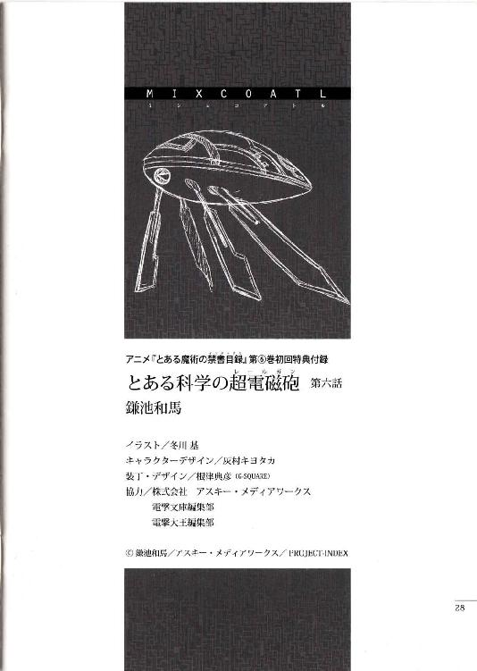

| [鎌池和馬] とある科学の超電磁砲全 | |
| 鎌池和馬 | |
| (2015) | |
|
アニメ『とある魔術の禁書目録』
Ｂｌｕ－Ｒａｙ／ＤＶＤ 第一巻～第八巻
初回限定版 特典付録
|
とある科学の超電磁砲


第一話
スカッとした夏日だった。
抽象的な表現である上、曖昧な擬音まで用いてしまって申し訳ないのだが、一面の青空を見上げる御坂美琴が真っ先に思い浮かべた感想はそんな簡単なものだった。肌を焼く強烈な陽射しと、湿度の低いスッキリした空気に、サンダル越しに足の裏へ伝わる柔らかい砂の感触。風に乗って流れてくるのは、波のぶつかる音と潮の匂いだった。
海だ。
カリフォルニアの海なのだ。
（んー......。飛行機だのリニアモーターカーだの色々乗り継いできたから、解放感もいっぱいだなぁ）
思わず両手を上に伸ばしてぐぐっと背筋を反らす美琴は、黒を基調に曲線的な白いラインの走った、シャチみたいな模様の競泳水着を着込んでいる。背中が大きく開き、Ｈ型のバンドで固定する方式の水着の正体は、常盤台中学能力測定用指定水泳着。オリンピック水泳選手なら目の色を変えそうなほど様々な最先端技術が詰め込まれた一着なのだが、実は美琴、この水着はあんまり好きではない。あまりにも高性能すぎて、時折本当に何も着ていないように感じられる事があるからだ。
（だぁー、ちくしょう。学校関係のイベントだから仕方なく持って来たのに、実は水着は自由だったなんてなぁ。ちゃんとパンフ読んどきゃ良かった......）
と、そんなこんなで皮膚の方が『あれ？ 今着てる？』という疑問を発し、美琴は本日何度目かのぶるっとした身震い。胸の辺りの布を引っ張ったり尻の辺りを指先でなぞりつつ、大丈夫大丈夫、これはボディペイントじゃない、と彼女は意味のない確認行為を繰り返す。
その時だった。
「みっ、御坂さーん......」
遠くの方から細く情けない少女の声が飛んできた。美琴がそちらに目を向けると、初春飾利がこちらへ走ってくる所だった。コルクらしきサンダルが細かい砂をザクザク鳴らす。頭に大量の花飾りをつけた少女は、それが何らかのアイデンティティーなのか、水着の方も薄いピンク色を基調とした、花柄のワンピースだった。思いっきり健全な一品である。
特に露出も多くない水着なのだが、初春自身はあんまり気に入っていないのか、彼女は顔全体が真っ赤だし目元に涙っぽいものが浮かびかけているし、体を隠そうとしているのか自分の上半身に両手を這わせたりしている。......ひょっとすると、妙にオドオドしているのは外国人がいっぱいの場所に慣れていないのもあるかもしれないが。
初春は周りの目を気にしながらこう言った。
「はぁあー......。御坂さんの水着はシャープで羨ましいです。私のはなんか、野暮ったいというか間に合わせというか......」
「いやぁ、そうでもないんだけどね」
学校指定の水着なんて着てる自爆組は珍しいし、と美琴は美琴でどんよりムード。そんな様子に気づかないのか、初春は自分の水着の胸元に目を落としながら、
「まさか、こんな抽選に選ばれるなんて思わなくって。水着を選んでいる時間も予算もなかったから、ホントに売れ残っているものを掴んでくるしかなかったんですよー......」
はぁー、ぶはー......と二人してため息状態。
そんな時、彼女達の元へ新たな挑戦者が乱入。初春飾利のクラスメイト、佐天涙子だ。肩よりちょっと長い程度の黒い髪に、一輪だけ花飾りをつけた、活発な少女。いつもは超能力者の御坂美琴や大能力者の白井黒子などに押されがちなのだが......、
「やっほーう、御坂さーん、初春も待っちゃったーん？」
「ッ!?」
「ッ!?」
笑顔全開で片手を振りながら近づいてくるのは、まさに脱・地味少女。控え目な体を赤系の三角ビキニに包んだ佐天は、ナットクいかない水着の二人組からすれば、まさに夏満喫ガール。しかもちょっと凝った店で選んできたものなのか、ビキニの胸元がファスナー状になっていて、フロントホックのように金具一個で固定するように作られている。
わなわなと震える初春は、主に初春の胸元辺りを注目しつつ、
「なっ、そっ、それは、佐天さん？ それは一体どういう不思議な......？」
「んふ？ ジップアップビキニと言うのだよ勉強したまえ初春君。ほらほら、なんか動くと胸元がパチッと外れそうでデンジャラスだろー？」
「ぎゃああ!! こっ怖い、同じ女として見ているだけでそれは怖いです佐天さん!!」
「大丈夫だって。実はヌーブラみたいなもんでさ、トップ全体がペタッと胸に貼り付いてんの。だからここが外れただけじゃポロリはないんだよん」
ぎゃーぎゃーと大騒ぎな初春と佐天の友達コンビを眺めながら、御坂美琴は極めて真剣な眼差しになっていた。彼女は静かにこう思っていた。
「（......。バスト自体の大きさはごまかしていないのに、外れそう、外れちゃうかも、という意識を向ける事によって、結果的におっぱいキャラの印象を強く与える......。なるほど、そういう戦い方もある訳か!!）」
と、やけにじっとりした視線を感じた佐天は、キョトンとしたままこう尋ねた。
「あのー、どうかしたんですか御坂さん？」
「おっふ!? な、何でもないわよ!!」
慌ててぶんぶんと首を横に振る美琴。
佐天は小首を傾げたが、あまり深くは言及しない。彼女は初春の水着をチラッと見て、
「そういや、初春ってオヤジ狙いのロリキャラ目指してるの？」
「うぶぅは!? なっ、何を、いきなり何を口走ってんですか佐天さん!!それは考えられる限り最悪の評価ですよ!!」
「だってー、初春の薄桃花柄ワンピースって、どう考えても可愛い女の子だよ？それも女の子から見た可愛い女の子じゃなくって、汗と涙の筋肉祭りが頭の中で思い浮かべるような可愛い女の子だよ？」
「仕方がなかったんですよ!! 私だって本当はもっとシャープな水着を着てみたかったんです!!でもセール対象コーナーに残っていたのはこれしかなかったから!!」
うぎゃああ!! と羞恥の叫びを発する初春。それを指差してケラケラと笑う佐天。さらに、実は花柄のワンピースも可愛くて良いかも、と思っていた美琴が自分のセンスのズレみたいなものを自覚してどんよりしている。
と、そこで美琴は気づいた。
「あれ？ 黒子のヤツはどうしたの？」
「ホテルの方でちょっと会いましたけど、時間かかるから先に行ってろって言ってましたよ」
初春が答えると、美琴は眉をひそめた。
「一体何に時間をかける気なんだか。海で遊ぶっつーのに化粧でもしてくるつもりか？」
「日焼けとか気にする人なのかもしれないですよん。外に出る前に、建物の中でオイルは全部塗って完全装備しておきたいとか」
佐天が適当に考えてそう言った時だった。
ぞわっ!! という、得体の知れない悪寒が三人を包む。
遠くの方が騒がしい。ざわざわという野次馬達の声を引き連れて、何者かがこちらへ近づいてくる。美琴の額から浮き出た汗の玉が、鼻の横を伝って顎へと落ちる。初春の目がせわしなく左右に揺れる。佐天の全身の毛穴がぶわっと開く。
なんか来る。
怪物がこちらへ接近してくる。
その時、純真な乙女達にはいくつかの選択肢があったはずだった。他人のふりをする、マッハで逃げる、海にざぶざぶ入ってしまう。しかし時間がなかった。彼女達は何を選ぶ事もできないまま、ただやってくる災厄に対して、覚悟も決めずに、そちらへ目を向けてしまった。
そこには、
説明不能の自主規制をまとった、肌色一色の女が立っていた。
いびゃあああ!? という甲高い悲鳴は初春のものか。十分露出の多いジップアップビキニを着ているはずの佐天が日射病のようにクラリとよろめき、何故だか美琴はタマネギをみじん切りにしたように目元が滲んだ。彼女達だけではない。周囲からも英語で『なっ、なんじゃこらーっ!!』『ありえるのか......？人類はあれを認める事ができるのか!?』『あれが日本のＳＡＭＵＲＡＩか......』などなど。普通、露出の多い水着を着た女性を見れば、どう取り繕おうが嬉しいのが汗臭い野郎というものだが、野次馬達を包むのは『あれ......もうエロとかそんな次元じゃねえ......』という未知との遭遇ムード。
人間の脳を混乱させるツインテールの女、白井黒子は、顔だけは極めてあどけない笑顔で美琴のみをロックオンすると、
「おっねえっさまーん。申し訳ありませんわね、少々準備に手間取ってしまって。ふふ、お姉様の前で情けない格好などできませんからね」
「やっ、やめろ!! 私の好みみたいに語るな!!外国まで来て何やってんのよ!?前々から思っていたけど、今日確信を持った。アンタは絶対に頭がイカれてる!!」
「あらまあ。水着なんて体の三点が隠れてりゃ十分ではありませんの？」
「......本当に、かろうじて隠れている感じですね......」
初春が絶望的な顔で呟くが、本当に何も意識していないのか、白井は顔色一つ変えない。糸と点で構成されているのは、典型的なビキニの『外枠』だけを紐で形作られた極悪水着。トップは三角形の紐の中に、Ｙの字の紐を伸ばした上で、三つに分けたゾーンの内、胸の『谷間』に近い内側のゾーンだけに布地を張ったもの。ボトムの方は逆三角の『外枠』の中に、三角形の『点』状の布を当てているだけ。後は『外枠』と『点』の間を細い紐で繋げば出来上がりだ。
飾りの紐によって胸元にあるわずかな白い肉がムチッと押し出され、もうなんか縄で縛った感まで出てくる鼻血・ザ・スペシャル仕様だった。どちらかというと、自分の意志で着るというより、他人の意志で着せられるためのものと思えなくもない。
（......しっかし、これは......後ろの方はどうなってんだろ......？）
何となく、怖いもの見たさで白井の背後に回ってみた佐天涙子は、
「ううっ!? がはげほごほ!!」
「だっ、大丈夫ですか佐天さん！ 佐天さんってば!!」
「み、見るな初春......。後ろも壮絶!! 中途半端にお尻の肉を持ち上げている分、一点に食い込むＴバックよりさらに突き抜けてる!!」
「うーん。単なるビキニの変種にすぎませんわよ？結局、水着ってワンピースかツーピースの派生しかありませんものね。スリングショットも冷静に観察すれば大した事はありませんし。肌に直接貼り付ける素材もあるのだから、そろそろ革命を起こしてほしいというのが正直な感想ですわ」
「......アンタ、ボディペイントでも始める気か......」
美琴はげっそりとした顔で呟く。おそらく佐天のジップアップビキニと同じく、簡単に脱げない機構になっているのだろうが......ぶっちゃけ、これ以上脱げようが脱げまいが、現時点ですでにアウトである。
と、かろうじて立ち直った初春飾利が、顔を真っ赤にしながらも、
「ま、まあまあ。言い争っても仕方ありません。旅の恥はかき捨てってヤツですよ」
「？？？ どの辺が恥ですの？」
「......ダメよ初春さん。こいつはすでに全部捨てっ放し。もうフォローできない......」
名門常盤台中学のエースが珍しく泣き言を漏らす。白い砂浜で打ちひしがれる美琴の横を、地元のアルバイトらしき金髪のお姉さんが（多分白井の方を）チラチラ見ながら、うわーうわーと小さく呟きつつも、それでも何とかお仕事を続けている。
そのお姉さんはサンバイザーにスポーティなビキニという格好だった。ビーチバレー選手みたいな感じのお姉さんが両手で抱えているのは、白くて四角い大きな箱だ。アイスクリームでも売っているのかと思ったが、違う。ビーチバレー風金髪お姉さんは英語でこんな事を言っていた。
「拳銃はこちらでお預かりしまーす。砂粒、海水、潮風などで自慢の相棒をダメにしたくないお客様。今なら大手八社の製品に関して、分解メンテナンスサービスも実施しておりまーす」
日本なら絶句しかねない台詞だが、こちらでは常識らしい。マッチョの黒人とかほっそりした奥様などが、黒光りするゴツい塊をアルバイトのお姉さんに手渡している。お姉さんの方はＧＰＳ機能とお客様情報を入力するチップを内蔵したゴムバンドを拳銃のグリップに巻きつけると、持っていた白い箱の中へとゴロゴロ人れていく。
わー、と絶句する佐天。
白井と初春は風紀委員の訓練で少しだけ銃器に触れた事はあるようだが、それでも驚きと違和感は隠せないらしい。美琴も呆れたようなため息をつきながら、こう呟いた。
「......来ちゃったわねぇ、アメリカに」
元はと言えば、広域社会見学というのが全ての発端だった。
九月三日から一〇日までの一週間、日本の学園都市からランダムで選ばれた学生達が、世界各地へ遠征する勉強会のようなものだ。大体二〇人一組ぐらいのグループが、一つの都市へ向かう。反対に、世界各地から日本の学園都市へ子供達を招いたりもする。
もっとも、世界各地に遠征すると謳いつつも、学園都市創設時に協力関係にあった間柄であるためか、まんべんなく各国へ派遣というよりは、アメリカの各都市にチラホラと、というパターンが多い。他の国と比べても、アメリカに派遣される学生の数はダントツだ。
「でも、佐天さんとか御坂さんとか、知り合いが一緒で助かりましたよー」
「ここって結構倍率高かったんでしょ。どこに行くか、どんな班になるかはランダムって話だったけど、確かにラッキーだったわよね」
とはいえ、実質的にはほとんど修学旅行。簡単なレポートを提出する事を除けば基本的に遊ぶ以外にやる事のない、学生からすればパラダイスそのもののイベントである。
今現在、美琴達四人の他にも日本の学生や数名の教師が同行しているはずなのだが、基本的に自由行動しかない広域社会見学では、誰がどこにいるのかあんまり良く分かっていない。一日の始まりと終わりにホテルで点呼があるぐらいである。
学芸都市のホテルで初めて集合した際、繋ぎ目をリング状のパーツで留めたビキニを着ている読心能力の少女や、背中が大きく開いたワンピース型の水着を着ている空力使いの少女などがいたが、彼女達が今どこにいるのかは把握していない。それぐらい、自由に遊べる旅行なのだ。
「それにしても、やっぱりアメリカってスケールがデカいですよねー」
佐天涙子は一面の砂浜に目をやりながら、そんな事を言った。
「これが全部、たった一本のハリウッド映画を撮るために、人工的に作られたものだったなんて。学園都市なら絶対考えられませんよ。いや、技術はあるんでしょうけど、ウチは土地不足だから」
そう。
ここはカリフォルニアの沿岸から西側へ五〇キロほど離れた洋上に作られた、直径一〇キロ程度の、超巨大な人工島だ。基本的にこの辺りの海は水深何千メートルの世界なのだが、この辺りだけは水深二〇メートルぐらいの所まで、岩場がせり上がっているらしい。その上に多くの人工物を積み上げ、仕上げに大量の砂を乗っけて作られたのが、この人工島だ。
（ハワイの辺りも人工的に砂浜を作ったって話だったけど、もうそんなスケールじゃないわよね......）
そうやって作られた人工の島はいくつかのエリアに分けられていて、今、美琴や佐天達がいるのは、一番外側のエリアだ。砂浜の向こうは人工的な遠浅で、その先は太平洋の外海一直線である。
島の名前は『学芸都市』。
娯楽と映画の大国に相応しく、全てがアトラクションで埋め尽くされた空間だった。複数のジェットコースターが絡み合うように空を走り、中心点のない不思議な観覧車が、オリンピックのマークのように互いの輪をくぐっている。ホテルの外観からゴミ箱の形一つに至るまで、全てが可愛らしく計算されたテーマパーク。海と遊びの融合を意図するこの島の中では、基本的にホテルのベッド以外は全部水着で過ごせるというぐらいなのだから徹底している。
「映画の舞台ねぇ。佐天さんはそれ観たの？」
「ええと、残念ながら。公開自体は二〇年以上前のヤツですし、なんか色々あって日本じゃ上映されてないみたいなんですよ」
佐天はあははと笑ってごまかし、
「確かＳＦ系だったと思いますよ。近未来の地球を描くとか言って、ホントに五〇年後の動植物の環境を擬似的に作っちゃったとか。ほら、学芸都市の周りって生物ガードっていう目の細かい網みたいなのに覆われてて、互いの生き物が出大りできないように作られているんですって」
「ふうん」
美琴は適当に水平線の方へ目をやって、
「それで、リニアモーターカーの海底トンネルでアメリカ本土と繋いでんのね。少しでも景観を統一するために」
「今でこそリニア技術に乗り換えていますけど、撮影当時は大変だったみたいですよ。片道で一時間以上かかってたみたいですし」
リニアモーターカーと言うと、未来技術っぽく聞こえるかもしれないが、すでに中国の方では実用化されている。日本の学園都市であまり見ないのは、わざわざリニア技術で結ぶほどの長距離路線を必要としないためだ。
それより美琴としては、透明な海底トンネルの中を、たくさんのお魚を見ながらズァーッと進む景色の方が、無駄にダイナミックで興昧深かったりする。
「で、映画の撮影が終わってから、このまま捨てるのはもったいないからって話になって、人工島そのものを世界最大のテーマパークに作り替えてしまったとかいう話でしたわよね」
「そうね。分かったからとりあえず離れろ露出狂」
できるだけ他人でいたいエロ水着をむぎゅーっと遠くへ押しやる美琴。
初春は頭の花飾りを風に揺らしつつ、
「確か、州の海洋環境保護条例で使わない施設を放ったらかしにするのはアウトって話があったんですよ。で、こんな大きな施設を取り壊すのにどれだけお金がかかるか分からないって映画会社が怒っちゃったんですって」
ヤシの木を見上げながら、彼女は言う。
「そしたら、『なら逆に、今でも使ってる施設だよ』って事にしちゃえば良いじゃんとかって屁理屈が出てきて、ちょうど映画会社主催のテーマパークの候補地を探していた時期だったから、それ持ってこいこっちでやる、とかいう結論が出ちゃったとかいうらしいですけど」
しかし、その屁理屈でこれだけ巨大なテーマパークができてしまうというのだから恐ろしい。美琴は頭上に目をやり、大空を縦断するジェットコースターを眺めながら息を吐いた。
と、そこへ、
「それは違うね！ 野暮ったい花柄ワンピースを着ている生け花少女よ!!」
「はぐぅわ!?」
真後ろ方向から唐突に赤の他人から水着のセンスを疑われ、地味にショックを受ける初春飾利。わざわざご丁寧に日本語で話しかけてくれた謎人物の正体は、金髪碧眼のアメリカ人のお姉さんでばいんばいんだった。
年齢は一八歳ぐらいだろうか。色白の肌に青い瞳、そしてヘアバンドで雑に持ち上げられた、カラメルみたいな色の混じった長い金髪。機能性重視のツーピースの水着の上から映画会社のロゴの入ったＴシャツを着ているだけなのだが、その盛り上がった膨らみが何とも、
「でっ、デカい！！！？？？ 馬鹿じゃないのデカいよデカすぎるそこまで行くとなんか怖いっつってんのよやんのかコラァ!!」
「み、御坂さん大丈夫です！ 別にあのおっぱいは人間を食べたりはしません!!」
佐天は美琴の両肩を掴み、腹に力を込めてこう叫ぶ。
「それとご安心を！ こんな事でもあろうかと、あたし、女の子のおっぱいを簡単に大きくしてくれる『巨乳御手』っていうウワサに心当たりがあるんですーっ!!」
「おおおおおおおおおおおおおおおおおおおおおおおおおおおおおおおおおッ!!」
「まっ、待ってください御坂さんに佐天さんも！それは絶対なんかマズいトラブルに巻き込まれるに決まっています!!」
「......あのー、人の話を聞いてくれる？」
控え目に言われて、ハッ!! と美琴は我に帰る。
金髪碧眼の爆乳はちょっとテンションの調節に苦労しながら、
「学芸都市の成り立ちには、もう少しだけ複雑な事情があるという事よ。もし良かったらこの私が教えてあげようと言っているのよ成長過程の少女達!!」
ドスビスブスッ!! と、いちいち人のコンプレックスを刺激する爆乳。キレればキレるほど惨めになる乳差に圧倒されつつ、美琴はこめかみをわずかに震わせる。
「......っつーかアンタ、どちら様？」
「ハッ!? まさかさんざん勝手に解説をぶつけてきた挙げ句、じゃあ説明代一〇ドルねとか迫ってくる商売の人では!?」
佐天が警戒心剥き出しで割り込んできたが、それに対して爆乳はふふんと鼻を鳴らしながらこう答えた。
「私はこういう者ですどうぞよろしく、と名刺の一つも差し出したいけど、ここは海！紙切れなんぞ持ってこれるか!!という訳で、失礼を承知で口だけ自己紹介するね。ビバリー＝シースルー。これでも一応映画監督をやっているの」
ホントだろうか......？ と美琴は思わず表情に出そうになる。見た目は一八歳かそこら。本当だとしたら、単なる天才少女とかそんな次元ではない。映画監督というのが具体的にどういうものか、プロの世界をイメージできない美琴だが、何となくただの才能だけでなれるものでもないような気がする。
（まぁ、嘘でも良いか）
旅の恥はかき捨て。金や命に関わらない限りは、騙されてやるのも一興である。
一方で、映画監督を名乗る爆乳はニヤリと笑い、
「君らはあれね。学園都市からやってきた日本人とかいうヤツ」
「ありゃ。分かるんですか？」
佐天がキョトンとした顔で質問すると、ビバリーは一度深く頷き、それから白井黒子の顔を指差して、
「いくらアメリカでも、あれはないよ。あんな極悪な水着は売っているのは学園都市ぐらいね」
「......アンタ、自由の国を超えちゃってるってさ......」
「何でもアメリカが一番と思ってもらっては困るという事ですわね」
ワースト方向の一番を争ってどうする、と美琴はため息をつくが、当然のように白井は気にしていない。
「で、何で映画監督さんがこんな所にいるの？」
「つまり、そういう事よ」
「？」
砂浜でいきなり胸を張られても、美琴にはサッパリだ。はるか頭上を走り抜けるジェットコースターから聞こえるキャーという歓声が、ちょっと間抜けに聞こえる。
美琴のポカンとした表情を受けて、金髪の爆乳はコホンと咳払いし、
「この学芸都市は、大手映画会社の手で作られたというのは知っているよね？何のためか。答えは新しい撮影技術を模索するため、という事よ。だから私みたいな関係者がいっぱい集まっている訳ね」
ビバリーは人差し指を軽く振りつつ、
「映画は娯楽よ。そして、アメリカ最強の外貨獲得手段でもあるの。単刀直入に言って、アメリカの国家予算の数％かを支えているほどだから。これぐらいのものを作ってしまうのも、まぁ不思議な話じゃないのよ」
「はー。流石はハリウッド、砂漠に街を作っちゃう人の考え方ですねー」
初春は素直に感心したが、ビバリーはくっくっと笑う。
「ところが、アメリカの映画産業には一つの不安材料があるの。それが日本の学園都市」
「？」
「この国の娯楽大作というのは、結局ＣＧとＶＦＸの世界よ。中には作品性とか芸術性とか語る輩もいるけど、大ヒットを生み出すにはやはりある程度の派手さは必須となる訳。だから、ほら。世界最高の科学技術を誇る学園都市が全力で映画を作ってしまったりすると、ウチの作品が対照的にショボく見えてしまうの。ええと、新しい携帯電話が出てくると、古い機種が途端にダサく見えたりするでしょう。別に今までの機種に悪い所はないのにね」
どういうジェスチャーなのか、ビバリーは人差し指をくるくる回した。
佐天は首を傾げて、
「ホントにそうなのかな......？ あたし、映画って誰が出演してるかで決めちゃうんだけど」
「うん。だからそういう部署もあるよ。情報と財力で世界中の俳優を探したり、誘ったり、契約状況を制御したりという芸能部署が。これも全部、日本の学園都市対策としてね」
ふわー、と初春がそのまんま驚きの声を上げる。
白井は眉をひそめて、
「でも、学園都市ってそんなに映画産業に力を入れていましたかしら？」
「だから、本格的に参入されて一気に差をつけられる前に、何としてでも撮影技術の一点だけは学園都市に勝っておきたいのよ。すごいよー。映画会社も映画系投資ファンドも上院も下院も、みーんな目の色変えて」
ふふん、とビバリーは笑った。
自称映画監督の天才少女は言う。
「そんな訳で、私としても科学サイドの本場、日本の学園都市にちょっと触れてみたくてね。こうして声をかけたという事。何かしらの刺激が得られる事を願ってね。君達が観光中に何気なく使っている物でも、私達にとっては大きな価値がある場合も考えられるからね」
「......あの、無駄だと思うわよ。私らだって所詮ただの人間なんだから。別に宇宙人って訳じゃないし、そんな技術的異文化交流を期待されても困るってば」
美琴はげんなりしながらそう答える。
しかし、ビバリーはキョトンとした顔で、白井黒子のエロ水着を上から下まで眺めた後、
「......本当に？」
「いやあのごめん。お願いだからこれを参考にしないで」
と、そんな事を言っていた自称映画監督のビバリー＝シースルーだったのだが、
「って、あれ!? さっきの爆乳はどこ行ったのよ!!」
「なんか『ああ何故この局面で仕事が......』とか何とか言いながら、ふらふらとどこかへ行ってしまいましたわよ」
美琴の疑問に、白井もキョロキョロと辺りを見回しそう言った。
彼女の空間移動をフルに使えば捜し出す事もできるかもしれないが、そこまでこだわる必要も感じられない。
「案内するって自分で言ったのに。もしかして、仕事人間なんでしょうか」
初春が適当に言う。
一方、ビバリーの背中を見送りながら、佐天はぼんやりした調子で呟いた。
「......すげーな学芸都市って。流石は映画の街だ......」
「いやあれ、ホントに監督だったの？」
美琴としては、実はあれ、テーマパークの係員......というか、アルバイトの演者だったんじゃないだろうか、と思い始めていた。そういう雰囲気込みで、映画の街というアトラクションを作っているのでは、と。
ところが、佐天はキョトンとしたままこう言った。
「え？ あれ、本物のビバリー＝シースルーですよ。映画雑誌で見た事ある顔ですもん。ほら、去年のカンヌで絶賛されてた新人天才監督。未成年の女の子が並居る強豪を薙ぎ倒したってニュースにもなったじゃないですか」
ぶっふぅううううッ!? と御坂美琴は思い切り吹いた。
「なっ、ちょ、待っ、だぁああーっ!! もしかして『鉄橋は恋の合図』の人!?それならそうと、ぐまァああああ!!サーイーンーッ!?」
いくら叫んだ所で、もはや爆乳は群衆の中に紛れて見つけられそうにない。美琴の悲惨な叫び声だけが街に響いていく。
「ユーロ系の恋愛映画の超新星って扱いでしたけど、こっちに来てたんですねー。やっぱ派手な作品も撮ってみたいのかな？」
「......み、妙に冷静ね、佐天さん」
「んー。あの人の映画は綺麗なんですけど難しくって、ガキのあたしにゃ良く分かんないっすよ。御坂さんって、ああいう主観的な恋愛映画がいけるクチなんですか？」
「べっ、べべべ別に？ そういうジャンルだけが好きって訳でもないわよ？」
顔を赤くした美琴が顔の前でパタパタと片手を振ったその時だった。
ドッゴォ!! という爆発音が、唐突に美琴の鼓膜を打った。
「ッ!! ───ッ!?」
いきなりの事に耳を押さえるのも忘れ、背中を叩かれたように驚く美琴。音源のした後ろの方を振り返ると、陸地を直線的に切り抜いたような運河の上に、海賊船が浮かんでいた。その側面に取り付けられた砲台から、うっすらと煙が漂っている。
船首に足を乗せ、両手を上に挙げた船長らしきド派手なヒゲの大男が、英語でこう叫ぶ。
「テメエら雑魚どもを守ってやる義理はねえが、このまま見捨てんのも寝覚めが悪りぃ!!ただ働きしてやるから死ぬまで感謝しやがれ!!」
それが有名な映画に出てきた名台詞だと美琴が気づいた直後、周囲にいた観客達が一斉に叫んだり拍手したり指笛を吹いたりした。その反応を見て、船長役の演者は満足そうに頷く。
そして、さらに海賊船の砲台が連続的に火を噴いた。
いつの間に現れたのか、美琴達のいる陸地を挟んだ反対側───砂浜の向こうに広がる海に浮かんでいた別の帆船も、応じるように砲を発射する。
ドンゴンドドン!! と鼓膜どころか頭まで揺らすような轟音に包まれる。
ようやく美琴は両手で耳を押さえながら、すぐ近くにいる佐天や白井達に向かって叫ぶ。
「ちょ、何これ!! まさかアトラクションショーの一つなの!?」
「おおおおおーっ!! 『海賊どものスカーレット』に出てくるスカル号とブロード号だーっ!!やっぱ映画の街のアトラクションはこうでなくっちゃーっ!!」
と、何やら佐天は美琴の言葉は耳に入っていないようで、この轟音の中、両手を上げてはしゃぎまくっている。
実際に海賊船からデカい砲弾が発射されているのではなく、空砲が鳴るのと同時に、相手の船にあらかじめ仕掛けてあった爆薬を起爆しているのだろう。それでも重厚な海賊船がバラバラに破壊されていく過程は確かにすごい。
......のだが、美琴としては『自分でイベントを選んで参加する』のではなく『強制的にイベントに参加させられる』というやり方はやや不満である。
（やっぱり私は、もっと静かでゆったりした恋愛映画の方が合ってるかもなあ......）
美琴は少し首を傾げて、
「......それにしても、あの運河にしても、浜辺の方にしても、あんな所に船を浮かべられるような深さがあったかしら？さっきまで普通にみんな泳いでいたような気がするけど」
「イベント前に客を立ち退かせた上で、海底が沈むか開くかする装置でも動かしたんじゃありませんの？元々、ここはカリフォルニアから五〇キロ離れた海の真ん中ですもの。海中の岩場の上に作られた人工島とはいえ、足が届かない方がむしろ普通ですわよ」
そんなもんか、と美琴は適当に納得する。
しばらくすると海賊船同士の戦いに決着はついたらしく、片方の船から乗組員達がダイブした後、船自体がぶくぶくと沈んでいく。船自体に潜水機能がついているのか、下り坂のレールが敷いてあるのか、トリックの方は不明だ。そんな無粋な事など気にせず、テーマパークの常連客らしき人達が一斉に拍手を送っている。
と、今度は別の騒音が襲ってきた。
ギィィイイイイ!! という甲高いエンジン音が美琴の耳を打ったのだ。
車のものではない。
上空を一直線に突き抜け、陸側から海側へと飛んでいく音源の正体は、漆黒に染められた超音速ステルス戦闘機だ。
五機ワンセットで構成された編隊を指差し、佐天が大雑把に喜ぶ。
「ぐわーっ！ 『エイリアン戦争』に出てきたラヴィーゼ飛行隊だ!!やっぱアメリカってすげーっ!!ハリウッドの国はホントに銃とか兵器とか愛してやがるなーっ!!」
「いや、私はああいうのよりもっと人間の感情を繊細に扱う作風の方が......ごにょごにょ......」
美琴は何やら呟いているが誰も反応していない。
初春は空を見上げて、わー、と感心半分呆れ半分な声を出す。
「映画ではF-22をべースに、 UFOと戦うために改良したって事になってましたけど、やっぱり本物なんですかね、白井さん。一機一五〇億円以上するとかっていう話だったと思いますけど」
「どうせ映画仕様のデコレーションを施して特殊な形にしてしまうんですもの。エンジン辺りの形から察するに、F-35辺りの兵装を外したアクロバット競技モデルではありませんの？」
それにしても、現役の戦闘機を何機も購入して、撮影用の改良を行い、実際に大空へ飛ばしているのだ。日本なら実現するしないどころか、会議に出る事すらないスケールだ。
「おーっ。なんかあっちの方で戦ってる!!」
佐天が砂浜の向こうにある水平線の辺りを指差しながら大声を出す。
爆薬を使ったショーの一環だろうか、複数の戦闘機が鋭角な弧を描いてビュンビュン飛んでいる。曲線的な細い飛行機雲みたいなものは、模擬ミサイルの発射の軌跡か。他にも、機銃らしき発射光も見えた。ドバババ!!とかいう複数の音の連続ではなく、ドジャーッ!!という一つのまとまった音がここまで聞こえてくる。空砲にしてもただではない。随分と豪勢な演出である。
件のラヴィーゼ飛行隊が何と戦っているかと言うと......、
「？ ......何だろ、あれ？」
この中では一番詳しそうな佐天が、首をひねっていた。
その正体は海面にいた。全長五メートル前後の楕円形の機体だった。楕円形と言ってもラグビーボールのようなものではなく、木でできたカヌーの上に、逆さまにしたカヌーをぴったり合わせたような、かなり鋭角的なものだ。さらにボディ前方の左右から、大小二枚ずつの羽が生えた、トビウオのような変な機体。いや、機体は下向きの羽根の先端の部分だけを海面につけ、水を蹴るように進んでいる所を見ると、アメンボといった方が近いのか？とにかくトビウオのようなアメンボのような、そんな変な機体は水そのものに反発するように、猛烈な速度で海を突き進む。あまりの速度に、トビウオが通った後に一歩遅れて、大量の海水が尾を引くように吹き飛ばされていった。
トビウオは細かいギザギザの軌道で空からの機銃の乱射を避けると、返す刀でミサイルらしきものを発射。白い飛行機雲のようなものが空を裂く。
「あんなの見た事ないなぁ。初春、あのトビウオって何の映画に出てきたヤツか知ってる？」
「い、いいえ」
「映画会社協賛のテーマパークだし、なんか情報公開前の新作のプロモかもしれないなー。ていうか、ショーの舞台が遠すぎるよー。......ハッ!?まさか有料で双眼鏡を貸し出しているとか、そういうセコい商売をしているんじゃ!?」
佐天はあちこちをキョロキョロ見回しながらそんな事を言う。
（......？）
一方で、美琴はわずかに眉をひそめていた。隣にいる白井を見ると、やはり彼女もほんの少しだけ、訝しげな表情になっている。
空中の戦闘機と、海上のトビウオのアトラクション。
一見するとそれだけの話なのだが、冷静に考えてみると、少しおかしい所がある。
そう、
（あのトビウオ......どうやってあんな速度を出しているのよ？）
戦闘機と互角に渡り合う船舶なんて開いた事がない。ホバークラフトを含めても、世界最速の船舶は時速九〇キロ前後が関の山なのだ。マッハ一......時速一二〇〇キロ以上で爆走するなど、普通に考えればまずありえない事だ。
一応、あのトビウオは純粋な船舶ではなく、海面を浮かんでいるようなのだが、それはそれで問題がある。海には波があり、海面は水平一直線ではない。あれだけの速度の中、常に揺れ動く海面の上で、機体の姿勢制御を完璧に行っているだけでも驚きだ。
「でも、やっぱりアメリカってスケールが違うなぁ。日本じゃたとえ海の上でも、あんな風にバカスカ爆発させたりできないでしょ」
佐天涙子は、あれは爆薬を使ったショーだと考えているらしい。
辺りにいる他の観光客も、大体似たようなものだ。中には臨場感が足りないとかもっと派手にしろとか、そんな野次を飛ばして笑っている連中もいる。
しかし美琴だけが、胸の中にわずかな疑問を抱いていた。
彼女は遠い水平線の辺りで繰り広げられる戦いを見ながら、わずかに思う。
（まさか......？）
バン！ ボン!! と複数の爆発音が連続する。
例のカヌーを上下二つにくっつけて、前方左右に四枚の羽をくっつけたトビウオのような機体の横っ腹に、戦闘機のミサイルが突き刺さり、起爆したのだ。
バランスを崩したトビウオは勢い良く海水を引き裂いて、
「う、そ......ッ!?」
美琴の体が強張ったその時だった。
制御を失ったトビウオは波打ち際に乗り上げると、そのまま砂浜に突っ込んできた。
学芸都市防空飛行隊、通称ラヴィーゼ飛行隊の五機は、海面から二〇〇メートル辺りの低い空を、何度も鋭角的なカーブを切りながら飛び交っていた。
敵の名はミシュコアトル。
どこかの言葉で『雲海の蛇』とか呼ばれているらしき、四枚羽の敵は水の上を滑るような動きで、最新鋭戦闘機の狙いから高速で逃れていく。
数はわずか二機。
にも拘らず、五機編成のラヴィーゼ飛行隊は未だに敵の機体へ掠り傷すら負わせられない。相当波が高いのに、『雲海の蛇』は四枚の羽を器用に動かし、それらの落差をゼロに保ったまま、さらに滑らかかつ素早い動きで、海の上を突き進む。
しかも信じられない事に、『雲海の蛇』は一般的な軍用艦艇と違って、鋼板などは使われていない。カヌーを上下二つ合わせたように鋭角的な本体は樽のように木で作られていたし、他の部分にしても布や黒曜石ばかり。金属部品が一つもないのだ。
現代兵器の常識を覆すような木や布の塊は、しかし最新鋭戦闘機のロックから外れ、細かい横移動を織り交ぜて、ギザギザした軌道を作り出す。
操縦桿を握るパイロットは思わず舌打ちした。
『ちょこまかと!!』
逃げ回る海上の『雲海の蛇』へ狙いを定め、機銃を掃射する。ミシンのように走る弾痕のラインは、しかし『雲海の蛇』にはわずかに届かず、海水だけを巻き上げていく。
ただし、機銃のラインから逃げようとするため、『雲海の蛇』は右側へ逃げざるを得なくなった。単調で分かりやすい動き。そこへ戦闘機の方はミサイルでロックする。画面上の印が、ロック完了の表示へ切り替わる。
即座に発射。
機体から解き放たれたミサイルが、凄まじい速度で海面へ襲いかかる。鋭角的な弧を描く爆発物は、『雲海の蛇』を巻き込む形で爆発、大量の海水を一気に巻き上げ、白いカーテンを作り出す。
『くそ、やったのか!?』
大量の白い水飛沫の向こうを覗こうとするも、戦闘機はその速度の関係で、あっという間にそのポイントを突き抜けてしまう。
その時だった。
『馬鹿野郎、上だ!!』
仲間からの無線に、ギョッとした表情になるパイロット。
真上に影が差したと思った時には、すでに四枚の羽を大きく広げた『雲海の蛇』が追っていた。カヌー二つを上下に合わせたような本体に取り付けられた細かい穴が、銃口のようにパイロットの体を直に狙う。
（一瞬で......跳んで回避したってのか!?）
『野郎!!』
並の機体なら、なす術もなくコックピットを撃ち抜かれていただろう。
だがとっさに、パイロットは操縦桿を握る手に力を込める。
グルン!! と戦闘機が縦に回転した。
ウィリーのような、機首を真上へ持ち上げる特殊な挙動だ。
空気抵抗によって強烈なブレーキがかかる事を承知で、頭上の『雲海の蛇』へ強引に鼻先を向ける。機銃やミサイルの狙いを、強引に合わせたのだ。
一肩の兵器の矛先が、互いに向く。
その睨み合いは、一秒にも満たない。
『ぐオオおおおおおおおおおおおおおおおおお......ッ!!』
パイロットは叫びながら、操縦桿についた機銃の引き金を引く。轟音と共に『雲海の蛇』の前部で木片が散る。オレンジ色の火花が散る。しかし大破はしない。『雲海の蛇』の方も、その本体に闘いた小さな穴からミサイルのようなものを発射した。
ドシュッ!! という発射音を闘いた気がした。
一瞬だった。
白い飛行機雲のようなものを噴き出す鏃のようなものが、戦闘機に向かって放たれた。それは戦闘機の左の水平尾翼に突き剌さると、鋼鉄の翼を容赦なくへし折り、空へと吹き飛ばす。
パラシュートを使うんだ、と無線越しに叫ぶ同僚の言葉を聞いたが、パイロットが応じる事はなかった。
大破した戦闘機を横目で見るように、大ジャンプの浮力を失った『雲海の蛇』がようやく海上ヘと落下していく。
翼を失った戦闘機は木の葉のように回転する。
しかしそれは、尾翼を砕かれた事で制御を失ったのではない。
パイロットの技量によって、落ちていく『雲海の蛇』を照準に捉えるための挙動だった。
『クソッたれが......』
大きく円を描く宙返りとは違い、ほとんど戦闘機の中心に串を刺してグルッと回したような動きだった。逆立ちのような体勢でピタリと機首を落下中の『雲海の蛇』へ突きつけたパイロットは、最後の力を操縦標へ集中させる。
『やられっ放しで済ますと思ってんじゃねえぞ!!』
咆呼と共に、空対空ミサイルが『雲海の蛇』ヘと襲いかかる。
凄まじい速度で、トビウオが突っ込んできた。
美琴の体が強張った時には、すでにトビウオは波打ち際を乗り上げ、砂浜に突撃していた。大量の砂が巻き上げられ、トビウオはさらに進み、アスファルトの道路を切り裂き、火花を散らして、海水浴客用の個室シャワーヘ激突した。
砕け散った壁の一部が、ヒュンヒュンと回転しながら空を舞う。長さ三メートル以上の巨大な瓦礫が、観光客の頭上へ降り注ごうとして、
「ッ!!」
直後、美琴の前髪がバチッ!! と光を放った。
彼女の足元にあった白い砂が盛り上がる。いや、正確には砂に含まれる大量の砂鉄。それらは漆黒の剣と化すと、まるで蛇のような動きで数十メートルも空中を突き進み、落下してくる瓦礫を容赦なく吹き飛ばす。
最初、観光客達はポカンとした表情を浮かべていた。
それから数瞬経って、わあああああああ!!という叫び声の連続が鼓膜を打った。
ただし、
「すっげーっ!! やっぱり本場の学芸都市は違うなぁ!!」
「何あれ？ 何の宣伝？ いつ公開なの？」
「わざわざ遠くでショーを始めたのは、こういうスリルを演出するためだったんだな」
「いやぁ、あんな所にも役者が混じっていたなんてなぁ。映画の街は本当に油断ならない」
「あの子誰、どこの子？ アジア系の『演者』って珍しいけど、もしかして新人のプロモとかじゃないよね？」
「っていうか、もー最低。口の中まで砂まみれなんですけどー」
次々と英語で放たれるのは、歓声。
それを耳にして、ただ美琴一人だけがゾッとした悪寒に包まれる。
（アンタら......何言ってんのよ......？）
もちろん美琴はショーの役者などではない。今のは本当に、一歩間違えば大惨事になっていたはずだ。しかし彼らは気づかない。『映画の街』という特殊な空間の中では、どんなに不思議な事があっても、お化け屋敷の延長線上みたいな感覚で処理されてしまう。
そこまで考えて、美琴は唐突に嫌な想像をしてしまった。
もし仮に、今の瓦礫を防がなかったとしたら、彼らは目の前の大惨事をどう処理しただろう？自分のすぐ横で血まみれになった人が倒れたとして、それすらも『いやー。こんな所に役者が混じっていたなんて』『迫真の演技だなぁ。流石はハリウッド技術の結晶。血糊だってすごいリアルじゃないか』とかいう風になったりしないだろうか。
もちろん、被害者と一緒に遊びに来た人は知っているだろう。これは演技じゃないと。本当に苦しんでいるのだと。しかしそれを誰が信じる？
『あそこで泣き喚いている人も含めて、みんな役者なんだろう』と思われたら、事件そのものが存在しない事になってしまう。さらに極論を言えば、泣き喚いている人がみんなの目の前で次のアトラクションの『役者』になったら、それで全ての騒ぎが止まる。
アトラクション。
究極の平和ボケ。
目の前にあっても、誰もそれを真実と信じない世界。
まさか、この学芸都市は何かとてつもなく危険なものを潜ませているのか。
「......、」
その時だった。
美琴の鼓膜に、ギギギギギ、という耳障りな音が響いてきた。そちらを見ると、個人シャワーの建物に突っ込んで止まったはずのトビウオが、もぞもぞと震えるような動きで瓦磯から顔を出した所だった。
こうして見ると、改めて異様な機体だというのが分かる。金属部品を使わず、樽のような木の本体と、布や黒曜石などを使った四枚の羽。あんな素材で、どうやればあんな高機動性を引き出せるのか、美琴の頭脳でも推測できない。
しかし、今はテクノロジーの議論している場合ではない。
問題なのは、あのトビウオが観光客達のど真ん中で再び動き出した事だ。
（ま、ずい......）
周りの観光客は危機感を全く抱いていない。わざわざ近くに寄って、携帯電話のカメラを向けているヤツまでいる。
トビウオの、カヌーを二つ上下にくっつけたような体が大きく動く。その本体に空いている穴が、銃口のように携帯電話を向けている観光客に向く。
先ほどの『ショー』の中では、そこからミサイルのようなものが発射されていたはずだ。
「この......野郎!!」
「おっ、お姉様!?」
白井が止めるのも待たず、美琴は砂を蹴ってトビウオに向かって勢い良く走る。前髪から火花が散る。一〇億ボルトの雷撃の槍が、一直線にトビウオの脇腹に激突する。
ズバン!! という轟音が詐裂した。
衝撃にトビウオのボディがわずかに横滑りし、その側面が若干焦げ付いた。
しかし止まらない。
トビウオの体が観光客から、美琴の方へ向け直される。本体の穴から、ファシュッ!!という奇妙な音が聞こえた。
「くそ、やっぱ実弾!?」
ギョッと体を強張らせる美琴。
水蒸気の帯をまとい、高速で放たれたのはミサイルか。とっさに美琴は向かってくるその一撃を雷撃の槍で撃ち落とし、
（細かい理屈は分かんないけど、水素系の椎進剤ってトコかしら）彼女は素早く足を動かし、さらにトビウオヘ接近する。
（凝縮した水素を、空気中の酸素と混ぜて火を点ける。だから爆発後に水素と酸素が結びついて水になるから、水蒸気の帯がついてくるって訳か!!）
ここに来て余計なリスクは避けようと判断したのか、トビウオは走ってくる美琴から遠ざかるように、四枚の羽を脚のように使って大きく後ろヘ下がった。街路樹代わりに植えられたヤシの木をメキメキとへし折りながら、トビウオは砂浜から内陸部へと逃げていく。速度はそれほどでもないが、昆虫のような挙動はそれだけで不気味さを与えてくる。
そうこうしている内に、トビウオは建物と建物の間へと潜り込んでいく。
「だぁくそ！ さっさと海に帰ってくれりゃ良いものを!!」
美琴は走りながら、自分のサンダルの踵へ手を伸ばす。ストラップに留められていたものを勢い良く引き抜く。まるで特殊部隊のナイフのように取り出されたのは、長さ一〇センチ程度のプラスチックでできた、拳銃のマガジンのようなもの。ただし入っているのはゲームセンターのコインだった。一種のコインホルダーである。
（っつーか、根本的に何なのよアレ!? 人が入ってんの？それともロボットみたいにプログラムで動くモンなの!?）
トビウオは陸地で動く事を考慮して作られていないのか、水上にあった機敏な動きはない。木と布と黒曜石でできた羽を自重で押し潰しながら、カヌーを二つ上下に合わせたような本体を地面に擦り付けて移動している。
美琴は手の中にあるコインホルダーを意識しながら、
（超電磁砲は......ッ!!）
彼女は電磁力を応用し、ゲームセンターのコインを音速の三倍で射出できる。それを使って一刻も早くトビウオの動きを止めるのが、被害を出さないための最良の手段となるのだが、
「ッ!?」
親指を使ってコインホルダーからゲームセンターのコインを弾き出そうとした美琴の動きが、一瞬固まる。今までサンダルに挟んでいたのが災いしたのか、コインホルダーのスプリングに砂が詰まってコインが出てこなくなったのだ。
（くそ、何でこんな時に......ッ!?）
人工的に敷き詰められた白い砂の上には、無数のテントが設置され、一種の商店街のようになっている。全部観光客向けのお土産屋さんだ。やはり状況を全く理解していないのか、水着を着た家族連れが、美琴とトビウオを眺めて歓声を上げている。
そんな光景に美琴が苦い顔になった時、トビウオが動いた。
ぐるん!! と。
唐突にカヌーを二つ上下に合わせた本体を高速で一八〇度回転させると、ボディ前方にある二対の羽の内、長い方の二枚羽を使って起き上がり、短い方の二枚羽を肉食獣の前脚のように使って、美琴を押し潰すように、いきなり覆い被さってきたのだ。
それは動物用のバネ仕掛けの罠か、カマキリの捕食を思わせる素早さだった。
「しま......ッ!?」
慌てて横へ跳ぼうとしたが、美琴はそのままトビウオの真下へ。仰向けに転ばされ、二枚の短い羽に両手を固定されてしまう。
焼けた砂が背中一面に突き剌すような熱を伝えてくるが、今はそれどころではない。
カヌーを二つ合わせたような本体の下腹が見えた。先ほどまで鋭角的に見えたボディが、吊り天井のように思えてくる。そのカヌーの下腹が四角く切り抜かれていた。
（何これ......コックピット!?）
美琴はギョッとしたが、今はそれより重要な事がある。
おそらくこの四角い穴は、緊急脱出用のハッチみたいなものなのだろう。本体の中に誰もいないのが分かる。自動操縦みたいなモードにしたまま、乗っていたパイロットは逃げ出したのだろう。
（くっそ!! いつの間に!?）
美琴は歯噛みするが、その時、四角い脱出ハッチの向こうで、何かが点滅しているのが見えた。博識の美琴でも読めない、どこの言葉かも不明な象形文字と、その下にある、四桁の数字の羅列。象形文字の方はお手上げだが、数字の方はカウントダウンするように刻一刻と減っていくのが分かる。
美琴の全身に嫌な予感が走る。
（まさか......自爆装置とかってんじゃないでしょうね!?）
先ほど撃ち落とした、水素系の燃焼剤を使ったミサイルの存在が頭に浮かぶ。機体に残されたミサイルをこの場で全部爆発させるだけでも結構な被害は出るし、まして、自爆専用の液体水素でも搭載されているとしたら......。
「ちっくしよう！ 冗談じゃないわよ!!」
美琴は顔を真っ赤にするほど力を入れて両手を動かそうとするが、がっちりと固定されていて動かない。超電磁砲に使うコインホルダーも、押し倒された衝撃で少し離れた所へ転がっている。
巨大なトビウオに押し倒されたまま、美琴は首だけを動かす。平和ボケした観光客は全く逃げる気がない。すげー、リアルに作られてるなー、とかいう間の抜けた声が耳についたし、一〇歳前後の女の子はトビウオに興味を示したのか、まるで機体に触れようとしているかのように近づいてくるのが見える。
脱出用ハッチの向こうに見えるカウントダウンが本当に自爆装置のものなら、間もなくそれら全部が消えてなくなる。みんなで楽しい思い出を作るためにやってきた家族連れも、アイスクリームをせがむ小さな子供も、稼ぎ時で忙しく働いているお土産屋さんの店員も、それら全てが平等に、血の海に沈んでいく事になる。
そこまで考えて、美琴はブチリという音を聞いた。
自分の歯が、唇を噛んだ音だと気づくのに、数秒もの時間を必要とした。
「上等じゃない......」
両手は押さえつけられて動かない。超電磁砲に必要なコインホルダーも離れた所に落ちている。間もなく起動する自爆装置を前に何もできないはずの美琴だが、そんなものは考慮に入れない。学園都市の名門・常盤台中学のエースをナメてはいけない。一つ二つの切り札を封じられた程度で潰れるお姉様ではないのだ。
ぶわっ!! という音が炸裂した。
それは美琴の周囲にある、白い砂浜から大量の砂鉄が蠢く音だった。
黒い粉末の塊は、トビウオを中心に、半径五メートル前後で噴き上がる。それは観光客を寄せ付けぬバリケードであると同時に、この場を逆転するための最後の鍵。膨大な量の砂鉄は美琴の意志を受けて全方位からトビウオヘ襲いかかると、その表面をコーティングするように、三六〇度隙間なくピッタリと埋め尽くした。
（超電磁砲のコインが手元にないってんなら......）
美琴は笑う。
その前髪から、高圧電流の存在を示す青白い火花が散る。
（アンタ自身が、この私の砲弾になりなさい!!）
ドバッ!! という轟音が炸裂した。
美琴に覆い被さっていたはずの巨大なトビウオが、そのまま大空へ射出される。
全体を砂鉄にコーティングされたトビウオが、勢い良く吹き飛ばされた。もちろんコインと違って音速の三倍もの速度は出ないが、とりあえず今は問題ない。巨大なトビウオは砲弾のように斜め上方へ真っ直ぐ飛んでいくと、高度二〇〇メートル辺りで重力に捕まった。大きく弧を描く野球の遠投のような軌跡を描いたトビウオは、観光街の一エリアを丸々またいでいき、速い水平線の向こうへ消えていき、
そして、
全ての音を消し飛ばすような、大爆発が巻き起こった。
かなりの距離が離れていたにも拘らず、お土産屋さんのテントがいくつか崩れて砂浜に広がった。水着の観光客達は最初驚いたようだが、潰れたテントの中であたふたしている店員さんを指差して笑ったりしている。どこまで行っても、徹頭徹尾、彼らにとっては刺激的に演出された、安全なショーに過ぎなかった。
（くそっ、あのトビウオに乗ってたヤツはどこ行った!?）
焼けるような砂浜から起き上がり、背中や尻についた白い砂をパンパンと払っていた美琴は、そこでふと小さな女の子と目が合った。彼女は小さな親指を上げて、英語でこんな事を言った。
「お姉ちゃん、良い仕事」
「......そりゃどうも」
ビバリー＝シースルーは双眼鏡を顔から離した。
彼女はゲストとして、この学芸都市にやって来ている。だからこそ、ラヴィーゼ飛行隊や、あの変なトビウオみたいな機体が織り成すアトラクションショーのスケジュールなどは全く把握していない。
しかし、そんな蚊帳の外にいるビバリーにも分かる事がある。
あの競泳水着の少女は、学芸都市側のスタッフではない。
どういう経緯があったかは知らない。ともあれ、何らかの紆余曲折があって、飛び入り参加でショーの舞台に上がってしまったらしいようだが......。
「は、はは」
ビバリーは乾いた笑みを浮かべていた。
双眼鏡を掴む手に、じっとりとした汗が浮かぶ。
「流石は学園都市の能力者。こりゃあ、ＣＧだのＶＦＸ程度じゃ敵わないわ」
瞳に宿るには焼けるような好奇心。
ゴクリと喉を鳴らしたビバリーは小さく舌を出して乾いた唇を砥めながらこう言った。
「......何にしても、楽しそうなヤツに出会えて満足かな」
アニメ『とある魔術の禁書目録』第①巻初回特典付録
とある科学の超電磁砲 第一話
鎌池和馬
イラスト／冬川基
キャラクターデザイン／灰村キヨタカ
装丁・デザイン／根津典彦(ジースクエア)
協力／株式会社 アスキー・メディアワークス
電撃文庫編集部
電撃大王編集部
Ｃ鎌池和馬／アスキー・メディアワークス/PROJECT-INDEX


第二話
学芸都市。
カリフオルニアの沿岸から西へ五〇キロ進んだ洋上に作られた、世界最大級の巨大人工島。とある映画撮影後、一種のテーマパークとして大改装されたこの学芸都市は、映画大国アメリカが、その外貨獲得価値を恒久的なものとするべく、日夜新たな撮影技術を研究・開発するための大型施設としても機能していた。
世界の第一線で活躍する映画関係者が生み出す娯楽の数々を、どこよりも早く導入、提供していく、刺激と幻想に溢れたアトラクション集合体。
しかし御坂美琴は知る。
この街では、ありとあらゆる異常事態が『アトラクションショー』として処理されてしまう事。たとえ目の前で人が撃たれたとしても、『うわー、お客さんの中に役者が紛れているとは』『それにしても、演技と分かっていても痛々しい』『血糊もリアルだし、流石は映画の国だな』程度で済まされてしまう事を。
死体を見ても驚かない空間。
その上これは、何らかの偶然で発生したものではない。
佐天涙子は、
「すごーい！ 御坂さん、一体いつゲスト出演の交渉してたんですか!?」
本物の事件に巻き込まれた美琴を見ても、ショーの一環としか考えなかった。
初春飾利は、
「がっ、学園都市の能力って、そんな風に公開しちゃって良かったんでしたっけ？」
ちょっと心配していたが、心配する方向がほのぼのとズレていた。
白井黒子は、
「......お姉様？」
わずかに訝しんだが、それでも事件や戦いとは無縁の所にいた。
そして、
御坂美琴は......、
「......どうなってんのよ......」
ポツリと、彼女は呟いた。
誰にも聞こえないであろう小さな声で、忌々しそうな感情を乗せて。
「......一体、この街で何が起きてんのよ......？」
ぶいーん。
「うあーあああああああああああああああああああああああああああああ」
ふおーん。
「むぎゃーああああああああああああああああああああああああああああ」
ぶしゃー。
「ふにゃーああああああああああああああああああああああああああああ」
初春飾利は一通りそんな声を出すと、ホテルの近くにズラリと並んだ個室シャワーの一つから出てきた。今日一日、日が暮れるまでずーっと海で遊んでいたはずだが、柔らかい肌についた潮水は全て洗い流されているし、それどころか、髪も皮膚も水着も、その全てが一滴の水滴すらついておらず、潮の匂いすら感じられない。
まるで買ってきたばかりのような布地を軽く引っ張って確かめていると、初春のクラスメイトである佐天涙子が片手をぶんぶん振りながら接近してきた。
辺りも暗くなり、テーマパーク特有の極彩色のライトアップに照らされても、佐天はいつも通りの佐天だった。
「おーう初春。どうだった？ なんかぶおーんっていうのすごかったよねぇ!!」
「全身乾燥機でしたっけ？ それにしても、着ている水着ごと体を洗浄、乾燥させるなんて、ものすごく大雑把な仕組みですよね......」
「まぁあれだよ。ホテルのベッド以外は基本、水着で過ごすじゃない？そうなると、ホテルに入る前に汚れは落として欲しいってヤツなんだよ」
はぁー、ほぉー、と適当に感心する初春と佐天。
彼女達の所属する学園都市は、よそと比べて科学技術が二、三〇年ほど進んでいる。しかし学園都市の立地そのものが東京西部であるため、海関連の技術に触れる機会はどうしても少なくなる。そういう研究は進んでいるのだろうが、それが学園都市の子供達にまでやって来ないのだ。
佐天は自分の二の腕の辺りをすりすり擦りつつ、
「......でもさー、乾燥モード時に肌荒れを防ぐためのクリームは有料ですなんて、学芸都市も結構セコい商売してるよねー」
「あはは。確かに、テーマパーク自体は風景から小物までイメージ作りしているのに、こういう所でお金の話が出てくると、ちょっと現実に戻されてしまいますよね」
「あと風圧すごくて胸がポロンと出ちゃったよ」
「ぶっふおぅえ!? さ、佐天さん......？」
「いやー、急速乾燥スイッチ入れたのがまずかったのかね。一応、トップはヌーブラみたいに肌に貼りつく素材なんだけど......。あれ、普通のビキニなら吹っ飛び確定だと思うけど」
生々しい話に初春は顔を真っ赤にするが、辺りに日本語を話せる人がいないからか、通り過ぎる外国人の観光客は特にこちらを変な目で見たりはしない。
この場で最も気にしていない人間、佐天涙子は初春の手を引っ張りつつ、
「おーし。そんじゃ御坂さんと白井さんを見つけて晩ご飯にしよう！」
「お昼の時も疑問でしたけど、何で料理のメニューがみんな映画のタイトルなんでしょうね」
「あのお店は、映画に登場したご飯をそのまま出すレストランなんだよ。だから作品を知らないと全く意味なし、観客置いてきぼり」
「......そうか。それで『エイリアン戦争』って頼んだら、歯磨き粉みたいな宇宙食のチューブが出てきちゃったんですね」
微妙に遠い目をする初春は、佐天と一緒にホテルヘ入る。
「そういえば、先生の点呼は済ませました？朝と夕方に二回、一応チェックするって話だったけど」
「夕飯食べた後みたいだよ、点呼。ご飯どこで食べるかは完全に自由みたいだし。でもダサいよねー。こんなでかいホテルに整列して名前呼ばれるなんてさ。そういうのやられると、一気に学校行事の匂いが漂ってくるじゃん」
ホテルは部屋数八〇〇室を越える、巨大な高層ホテルだった。ピカピカに磨かれた白い大理石をメインに、所々で飴色に輝いているのは、木製のアクセント。客の通るコースをなぞるように敷かれた赤い絨毯が、どっかの映画の宮殿みたいに伸びている。
ロビーを行き来しているのは様々な人種の人達で、ここがアメリカだけでなく世界中から人気を集めているのが窺えた。
「男どもの視線が気になるのかね、初春。熱い視線は万国共通だしなー」
「......注目されているのは間違いなく佐天さんのビキニだと思いますけどね」
「ふっ。しかし実は変にもじもじと太股を擦らせている初春の方がエロかったりするのだよ」
「ひい!? そ、そんな事は......ッ!?」
大型旅客機がすっぽり収まってしまいそうなほど巨大な吹き抜けのロビーを歩く佐天。その隣を歩く初春は、ふとクラスメイトにこんな質問をした。
「ところで、晩ご飯はどこで食べるんです？ なんかこのホテルだけでも、レストランっていっぱいあるじゃないですか」
「うーん。なんか中華が食べたい気分かしらねー。まぁホテルマンにでも尋ねりゃ良いじゃん、美味しいお店はどこですかって」
「ありゃ、佐天さんは英語ができる人なんですか？」
そう告げた初春の手には、防水加工の携帯電話が握られている。音声認識タイプの同時翻訳アプリをダウンロードしたもので、日本語で話すと英語の音声が出てくる仕組みである。中一教科書レベルの初春としては、このバッテリーが切れた時が命の尽きる時であるのだが、
「あっはっは。あたし達は同じ人間だよ？ 別に言葉なんてフィーリングで十分じゃない。ヘイそこのボーイ！チャイニーズのフードをイートしたいんだけどデリシャスなレストランはどこプリーズ？」
「うぎゃあああ!! ふっ、不安！ 手探りにもほどがあります!!」
思わず顔を真っ青にする初春だが、意外にぶつ切りの単語と声の感情でニュアンスは伝わるものなのか、呼び止められたホテルのボーイは『あっちを曲がってそこに入って』と手を振りながら説明してくれた。
うむ、と佐天は頷き、
「激ウマ中華のお店はあるけど、すごく混むから時間をずらした方が良いそうな。どうする初春。お腹がすいてどうにもならんようなら他のお店にする？」
「......わ、私、もしかして、ものすごく垢抜けない子なんじゃ......？」
気軽にチップを渡してボーイヘ手を振る佐天を眺め、地味に落ち込む初春。
とにかく美琴と白井を捜して今夜は激ウマ中華だ、という方向で話がまとまった時、タイミング良く美琴がエレベーターホールの方からやってきた所だった。
ただし、
考えられる限り顔面を真っ赤にして、全力疾走で、
「うォォおおおおぎゃァァあああああああああああああああああああああああッ!?」
「ちょ、な、みっ、御坂さん!?」
初春が思わず名を呼ぶと、そのままどこかへ退場しかけていた美琴が、ぐりん！と首をこちらへ向けてくる。
しばしの沈黙。
やがて美琴の目元にじんわりと透明な液体が浮かぶと、そのまま初春の元へと一直線。ぐがばぁ!!と凄まじい効果音と共に初春の胸に飛び込んでもう離さない。
「ふにゃああああ!? な、ななななな何ですか御坂さん唐突に!?」
「こっ、怖かったぁ!! 怖かったよぉ!!」
ぶるぶるぶるぶるぶるーっ!! と高速で振動する美琴はよほど錯乱しているのか、初春の薄い胸元にぐりぐりと鼻先を押し付けたままそう叫ぶ。
佐天は顎に片手を当てて、
「......もしや、最強無敵の常盤台中学のエース様は、実はゴキブリが大の苦手だったとかいう、そういうキュートな展開かもしれないよ初春」
「違うの。そんな次元じゃないの!!」
ぐばっ！ と、ようやく初春の胸から顔をどけた美琴の手には、一冊の雑誌がある。
どうやら水着のカタログ雑誌らしい。
「くっ、黒子の野郎がこんなの読んでて！ 次はどれにしましょうかねとか呟いてて。何気なく覗き込んで、私、どうして良いのか分からなくなっちゃって!!」
どれどれと、初春と佐天は適当な気持ちで美琴から雑誌を受け取り、そして何の警戒もなく何気ない手つきでペラリとめくり、
そして、未知との遭遇に激しく後悔した。
「うっ、うぎゃあああ!? 初春、ちょ、これ、何!?かろうじてＴバックぐらいは分かるけど、ＯとかＶとか......えっ、Ｉ!?Ｉってどうやって固定してんのよこれ!?」
「み、見てください佐天さん。建前上はローレグとかって書いてありますけど、股下から股上まで五センチしかありません!!なんていうか、その......ベルト？」
「ウォータリング素材......？ 透明なビキニの中に色つきの液体を入れておくって......大丈夫なのかそれ!?体の傾きで模様が変わるって書いてあるけど、ホントに見えないの!?」
「乱反射クリスタルビキニって......ようはモザイクですよ！確かに形はごまかせるけど、色はそのまま出ているじゃないですか!?」
むごいむごい何の罰ゲームだ!? と顔を真っ青にする佐天と初春。なんというか、もう嫁にいけない級のオトメの危機満載な品々に、ただただ圧倒される他ない状況だ。
常盤台中学のエース、御坂美琴は珍しくめそめそしながら、
「みっ、水着って、一着とは限らない訳じゃない？もしかしたら、黒子はまだまだとんでもない爆弾を隠し持っている可能性だってある訳じゃない？わ、私、黒子が今日のあれ以上のインパクトで抱き着いてきたりとかしたら......どうしよう......って......」
確かに、こんなもんが隣を歩いていたり抱き着いてきたりしたら、それだけで佐天達の方が恥ずかしくなる。あんな猥褻物少女を野放しにしておく訳にはいかない。
だが、具体明にどう動く？
表現の自由の権化みたいなツインテールの怪物を封じるために有効な手などあるのか。
悩む三人がしばし沈黙した時、豪勢なディナーを終えたらしきどこぞのセレブな姉ちゃんが、彼女達の横を通り過ぎる。黒いワンピースに金糸を縫い込んだギラッギラの水着に、腰回りを覆うように巻かれたデカいパレオがゆらゆら揺れる。
わざとらしく腰を左右に振って歩くセレブの尻を見送り、乙女達は同時に頷いた。
「それだぁ!!」
その瞬間、白井黒子は例の水着のままベッドにゴロゴロと転がり、馬鹿デカいスーツケースの中身をごそごそと漁っていた。
「......うーむ、単に露出の多さだけが変化球ではないかもしれませんわね。こっちの、一見すると白いスクール水着だけど、水に入ると三点以外全部透けるという方向も。あるいはこっちの、着たままの状態でも七種の変化が楽しめるあやとりヒモ水着というのも。うふふ、お姉様の目の前であやとりを始めた時の顔が見ものですわねぇ......」
もはや布部分が一ミリもなく、紐を三つ編み状に結った極小の平面のみで隠す水着を手に、ぐふふと何やら企んでいる白井だったが、その時、彼女の部屋のドアの電子ロックが、キキービピーガガーブーッ!!と奇妙極まりない音を発した。
なんだなんだ？ と白井がそちらへ首を向けた途端に、ズバン!!と勢い良く開け放たれるドア。そして前髪から火花をバチバチ散らしている御坂美琴が突入開始。
それを見た白井の瞳が、キラッキラーッ!!と星だらけになる。
「まっ！ まぁまぁお姉様ったら!? まさかこんなムード満点の好機にカギを壊して夜這いだなんてグゥオオオオッ!?あつっ、暑苦しい!?何ですのこの大量の大風呂敷は!?」
「それはパレオと言うものよ！ 用途は恥ずかしがり屋のデリケートゾーンを覆うためのもの！アンタは全部が恥ずかしいから全部隠してやる!!」
「やっ、やめてやめて!! てるてる坊主みたいになってますの！っていうか、これ、もはやパレオと言うより小学校の頃の水泳のタオルではありま......もがもげもぐ......」
どったんばったん、という騒ぎを通路で聞いていた初春と佐天の二人は、がちゃりとドアが開く音を聞いた。そちらを見ると、何だか妙にスッキリした顔の美琴の笑顔が。
「よーし、準備完了！ これで心おきなく晩ご飯を食べに行けるわね」
「？？？ 白井さんはどうなっちゃったんで───ひぃ!?」
頭の先から足の裏まで全部が巨大な布で何重にも覆われ、何だかもっさりしたビッグフットみたいになった白井黒子を見て、初春飾利の肩がビクリと震える。
ホテル内にある、赤一色の中華料理店で晩ご飯を終えた後、美琴、白井、初春、佐天の四人は他の生徒達と一緒に先生からの（佐天いわく、ダサい学校行事の匂いがする）点呼を済ませ、再び四人で集まるとホテルのロビーヘやって来ていた。休憩スペースにあるテーブルを陣取って、杏仁豆腐やアイスクリームなど、食後のデザートと共に適当にくつろいでいる。
何とかパレオの山から頭だけをズボッと突き出した白井は、
「そういえば、昼間のビバリー＝シースルーの話ですけれど」
小さなスプーンを使ってミルクプリンを削り取り、そんな事を言う。
ビバリーとは、この学芸都市に滞在している映画監督の少女だ。
「どうやら、新しい撮影技術を研究・開発するための施設、というのは本当の事みたいですわね。世界中から画家、彫刻家、陶芸家、人形師、時計職人、浮世絵師、その他色々な芸術家をここに招いているみたいですわよ」
「あん？ なんかハリウッド映画って感じじゃないわね。どっちかって言うと伝統工芸とかそっち方向じゃないの。何でまた、そういう人達ばっかり呼んでいるんだか」
美琴は咥えたスプーンを上下に動かしながらそんな事を言ったが、
「それはね!!」
「むぐっ!?」
突然聞こえた大声に、思わずスプーンを口から落とす美琴。
振り返ると、そこには件の天才少女系映画監督がこちらへ歩いてくる所だった。
「っつかアンタ、仕事終わったの？」
「あんなのは手統き上の不具合みたいな感じだから、仕事とは呼べないよ」
ビバリーはしれっとした顔で『話を戻すけど』と言う。
「学芸都市......というか、アメリカ映画産業のライバル意識は科学サイドの最先端、日本の学園都市に向けられているのよ。『単なる科学の延長線上』にあるＣＧやＶＦＸ技術だけを磨いても勝てねーなこりゃと踏んでいるの。学園都市とは違う方向の伸び方を求められると、どうしても最先端とは程遠い、伝統系の芸術美術からヒントをもらうしかないという訳ね」
とはいえ、別に人形浄瑠璃で映画を作ろう、とか、そういうダイレクトな考えではないらしい。伝統技術を一度完璧に分解した上で、最先端の映画に応用できるものはないかを調べ直し、綺麗に組み込む事を旨とするそうだ。
「それに、一口に映画と言っても、大昔の恐竜から未来の巨大ロボットまで色んなものをテーマに扱うから。歴史系の資料としても使えるし、『こういう技術がこういう風に進化した』とイメージする事で未来の街を作る参考になったりするのよ」
初春は、へぇー、と日本人らしい感心の声を発すると、
「でも、みんな協力してくれるものなんですか？陶芸家とかって、頑固親父なイメージがあるんですけど」
「あはは。これがまー色々ありまして。あの手の芸術や工芸というのは、世界中どこでも後継者不足に陥っているの。ホントにこのまま消えてしまう職人芸も珍しくない。それをハリウッドという大市場が大手を振って保護してくれると言うんだから、実は死ぬほど喜ばれたりしているのよ」
日本の下町工場とかもやって来ているのよ、とビバリーは言う。
学園都市が最先端科学を集めた街だというのなら、こちらは逆か。世界中にある伝統技術を片っ端からかき集めて形成された街なのだ。
ヘーほーと素直に感心する美琴や初春。しかし佐天はそういう裏話にあんまり興味がないようで、ビバリーの巨大な胸元に目をやりつつ隣の初春の脇腹を肘でつつき、
「（......時に初春。あの姉ちゃんは前人未到の何カップに到達していると思う？あたしゃ密かにＧとかＩとかまで行ってると思うんだが）」
「ぶげっふう!?」
初春は思わずむせて頭の花びらが何枚か舞ったが、その時ビバリーはこう答えた。
「ん？ Ｌだけど」
「「「「ッ!?」」」」
その瞬間、発展途上の乙女達を貫いた衝撃は計り知れなかった。佐天はこんな話を振った自分に後悔し、初春の頭の花はほとんどが抜け落ち、白井の瞳が白目を剥き、美琴の背後には物理的に火花がバチバチと鳴った。
佐天はしばらく動かなかったが、やがて自分の平坦な胸に両手を当て、
「......初春。確かバストのカップって二・五センチごとにレベルアップしていくのよね」
「え、ええ」
初春が頷くと、佐天は口の中で『えー、びー、しー、でぃー、いー、えふ、じー、えっち、あい、じぇい、けー、える』と呟きながら、胸に当てた両手を等間隔に少しずつ遠ざけていく。
やがて止まる手。
佐天は自分の胸元を見下ろし、薄い胸板と掌の間にある絶望的な空間を確認し、
「遠ォい!! あまりにも遙かなるこの距離を見て！っていうか、これ、初春を抱きしめてるのと同じぐらいのパントマイムじゃないかねホレ!?」
「ひっひいい？ わたっ、私の体が丸ごとおっぱいに埋もれる計算ですか!?」
錯乱気味の佐天と、金切り声を上げる初春。そんな少女達を見て、人生の勝者ビバリーは、あっはっはと笑ってこうフォローした。
「大丈夫。黙っていても体は勝手に育つものだし。大体、乳なんて所詮は単なる脂肪の塊よ」
「来たぜーッ!! ブルジョワの勝ち組台詞!!初春、サンオイルを持って来い！今から意味もなく爆乳の全身をぬるっぬるにする!!この負け知らずに涙の味を教えてやる!!」
あっはっはそんなんじゃビビらないってー、とビバリーはケラケラ笑っていたが、
ドン!! と。
豪快な音が聞こえたと思ったら、そこにはビールジョッキか裁判官のハンマーのように、オイルのボトルの底をテーブルヘ叩きつける御坂美琴が。
俯いて表情が見えない貧乳少女は、暗い影のオーラを全身にまとい、ほとんど唇を動かさずに告げる。
「おい、そこの女」
ドゴゴゴゴゴゴゴゴゴゴ、という嫌な効果音と共に、ゆっくりと顔を上げる美琴。
彼女は肉食獣のような眼光で、真っ直ぐにビバリーを見据えて、軍曹風にこう言った。
「時に、サンオイルは立派な凶器になる事を教えてやる」
全身テッカテカになったまま、ぐったりと肩を落として退場するビバリー＝シースルーの背中を御坂美琴は見送りつつ、佐天と一緒にハイタッチし、どさくさに紛れて美琴の肌にオイルを塗ったくろうとした白井黒子をグーでぶっ飛ばし、初春から『あれ？ビバリーさんにサインもらうんじゃありませんでしたっけ？』と指摘されて我に帰った。
（だぁー......。つーか色々ありすぎだっつの）
流石は海外旅行。イベント数が半端ではない。
下手をすると夜を通して朝まで馬鹿騒ぎしかねないテンションを強引に押さえつけ、美琴はホテルの自室へ戻る。バスルームに入ると、洗面所の蛇口をひねり、オイルでべっとべとになった手を洗う。
「ふぃー......」
寝室に戻り、ベッドに腰掛ける。
ガラスの向こうに広がるのは夏の夜。建物や道路に沿って様々な電飾が施されているのは当たり前。遠くの方では大量の打ち上げ花火が大輪を咲かせているのが見えるし、夜の色を吸った黒い海をスクリーンにして、様々な映像が表示されては消えていく。
（光の海を泳ぐナイトスイムとかってパンフにはあったけど、流石に今から泳ぐ気はしないわよね。昼にはしゃぎ過ぎたせいか、なんかちょっと眠いし）
思わず、そのままベッドにバタンと倒れたくなる美琴だが、実行には移さない。
まだ、今日の内にやっておくべき事がある。
「......、」
今日の昼に起きた、戦闘機とトビウオの戦闘。
そして、何が起きてもアトラクションショーとして片付けられてしまう、奇妙な状況。
この街で一体何が起こっているかは不明だが、自分が止めなければトビウオの暴挙によって、おそらく死者が出ていただろう。そして少なくとも学芸都市側は、『アトラクションショー』という言葉を巧みに使って、事件そのものを『見えているのに存在しない』状況を作り出し、故意に隠しているのは確実だ。
（......とはいえ）
ここは日本の学園都市ではない。
下手に施設の機密に関わる事に探りを入れれば、情報保持という目的で射殺されても文句は言えない。まるで映画のような話だが、そもそもここが日本ではない───つまり、誰もが簡単に銃を手にする事のできる場所であるのを忘れてはならない。
「......、」
美琴は少しだけ考えた。
そして、即座に頷いた。
危機的状況を前にしても、ろくな避難誘導はおろか、警報すら発しなかった学芸都市。こんな有様でのんびり遊んでいろと言われても、それは無理な相談だ。また戦闘機とトビウオの戦いに巻き込まれるかもしれない。今度は違う『アトラクションショー』が起こるかもしれない。その時、自分や他の人達が『やられ役』としてゲスト出演させられてしまうリスクだって、当然ゼロではない。
一度止められたからと言って、次も止められるとは限らないのだ。
「やるか」
寝室の片隅に目をやると、そこにはコンビニのＡＴＭのような機械があった。学芸都市は海と水のテーマパーク。その関係で紙幣を持ち歩くのが難しいこの街では、入園時に借りるＩＣカードに適時電子マネーをチャージする仕組みを持つ。これによって、宿泊客はカード一枚とチップ用の小銭だけで、好きな施設を回る事ができる訳だ。
美琴はＩＣカードのチップ部分を親指で軽くグリグリ擦った。それから、チャージ用の読み取り機に押し当てる。ピッ、という音と共に、画面がお客様用の見やすくシンプルなものから、メンテナンススタッフ専用のそっけない機能的な表示に切り替わる。
彼女の電気的な能力を応用したハッキングだ。
もう一度ＩＣチップを親指でなぞり、料金情報を元に戻してから、美琴はタッチパネル式のモニタに表示されたキーボードヘ指を走らせる。
この街で繰り広げられるアトラクションの全貌。
それに関する情報が、学芸都市のコンピュータに記録されていないものかと、学芸都市専用のローカルなネットワークに侵入してみた訳だが、
「うわっ!? ......っと、何だこりゃ」
美琴は画面を見て、思わず呻き声をあげた。
あまりにも難解なセキュリティが待ち構えていたとか、そんな話ではない。
逆だ。
（わー、わー......。学園都市の科学技術は外に比べると二、三〇年は進んでいるって聞いてたけど。こんな旧式の言語でシステム組むなんて......なんつーか、石炭で動く自動車を見たような気分だわ......）
あまりにも簡単すぎて、思わず引っ掛け問題かと疑ってしまう美琴。
しかし、当然ながら、学園都市で暮らす全ての学生がこんな事をできる訳ではない。美琴が常盤台中学に通うほどの才女である事に加え、学園都市全体で第三位、発電能力系では最強の超能力者である事も影響しているのだろう。
ともあれ、今の美琴にとって、学芸都市のセキュリティは穴の空いたバケツどころの話ではない。木綿で作った布のバケツに水を注いでいるようなものだ。
そして、出てきた情報は『本物』だった。
海賊船の後にあった、戦闘機とトビウオのアトラクション。
あれはやはり『実戦』だったのだ。
（F-35をベースにした『エイリアン戦争』型の迎撃戦闘機が五〇機。こっちの装甲服とライフルは......『係員』用......？そうか、あれもコスプレじゃなくて、本当にフル装備だったのか。レプリカどころか、全部実銃って事よね。戦車に、装甲車に......こっちのは、PAC3......って、これ核ミサイル迎撃用の地対空ミサイルじゃない！一体どんな危機を想定して予算を組んでいるのよ!?）
調べてみると、学芸都市にはそこらの在日米軍基地を凌ぐほどの戦力が結集しているのが分かる。しかしどうも、そこには軍隊特有の威圧感のようなものはない。まるで強大な敵が来る事が分かっているから、必死に戦力をかき集めたような、そんな切羽詰まった匂いがする。
敵。
この場合、単純な映画業界の産業スパイという訳ではないだろう。
だとすると、敵とは？
（......、）
美琴の脳裏に、昼間、海上を爆走していたトビウオの機体が浮かぶ。どう考えても、トビウオの動きは日本の学園都市の『外』にある普通の技術で何とかなるものではない。あれは一体何だったんだろうか？
だが、戦闘機と交戦していた謎の物体について色々調べてみても、あのトビウオに関する情報は得られなかった。何か特殊なセキュリティや暗号によって、情報に触れられないのではない。学芸都市が敵の情報を一切知らないという訳でもないはずだ。
寸断、という言葉が美琴の脳裏をよぎる。
本当に重要な情報は、そもそもネットワークに接続していない。だからこそ、ネットを経由して情報を集めている美琴には触れられない。そんなニュアンスだ。現に、システムの全体像を掴みかけていた美琴は、『それだけ』ではシステムとして不十分というか、ジグソーパズルのピースがいくつか外れている事を自覚する。
（......これ以上は難しいか）
美琴はスッパリと諦め、侵入時以上の丁寧さでシステムの深部から引き返す。ネットワークから一度離脱して、痕跡がないのを確認し、ＩＣカードのチャージ機械のモードをスタッフ用からお客様用へと切り替える。
「さて、と」
美琴はチャージ機械から離れると、寝室の出口ヘ向かう。
『存在するはずなのに侵入できなかったコンピュータ』の位置情報は、すでに学芸都市の見取り図つきで把握してある。
「ここから先は、物理的に探りを入れますか」
学芸都市は夜になっても光は絶えない。様々なイルミネーションが建物を照らし、道に沿ってパレードが開催され、海やプールの水面にもレーザーを使って直接光のアートが描かれている。
しかしそれでも、完全に闇が払拭された訳ではない。
例えばホテルから遠く離れた所......学芸都市の内陸中心部にも、そんな闇が広がっている。
（......っと、ここか）
美琴は砂浜の上を走る遊歩道からわずかに外れ、白い砂をさくさくと踏む。
彼女の目の前にあるのは、巨大な建造物だった。
敷地面積はおよそ三キロ四方ほど。その中に大小無数の四角を組み合わせたような施設がある。中心部に一際大きく聳えているのは、原寸大の大型ロケットの模型だった。
意図的にそうなっているのか、中央の大型ロケットのおかげで、まるで鋼鉄やコンクリートで作り上げたゴツい城のように見えなくもない。
施設の名前はラージランチャー。
この学芸都市は元々、ＳＦ映画を撮影するために作られたらしい。パンフレットによると、その映画の中で最も重要とされたのが、このロケット発射場・ラージランチャーだったようだ。現在、学芸都市の様々な部署は『観光用』に内部を改装し、通り道や順路を用意しているのだが、この発射場だけは『名場面が生まれた場所』として、手を加えないで保存してほしいという嘆願書が大勢のファンから寄せられたらしい。
様々な光源でライトアップされたラージランチャーの周囲には、それを眺めるための展望台や観覧車、高層ホテルなどが建てられている。客が入れない施設であるにも拘らず、莫大な集客効果を生んでいる人気の場所だ。
美琴がいるのは、そんな巨大施設の外壁......派手なライトアップの恩恵から外れ、かえって深い闇に包まれた、従業員の内部メンテナンス用の出入り口だ。
一見何の変哲もないドアに見えるが、それは外面だけ。
ここが、美琴の知りたい謎の正体に繋がっているかもしれない『入口』である。
（......、）
美琴は思わず周囲に目をやり、人気がない事を確認する。
それから、ゆっくりと音を立てずに外壁へ近づき、電子ロックの備わったドアヘ手をかざす。
その時だった。
「あれー？ 御坂さん、そんなトコで何やってるんです？」
突然背後から聞こえた佐天涙子の声に、ビックウ!!と肩どころか全身を震わせる美琴。何故ならば、立入禁止ゾーンヘの扉が今まさに開錠五秒前。電子ロックの画面表示はどこの国の言葉でもない文字化け状態で、割と言い逃れはできない空気だったからだ。
ここはロケット発射場のセットを整備するために、今も従業員が出入りしているという話だったが、おそらく実際には、別の目的で使われているだろう事を美琴は予想している。
こんな所に佐天を連れていく訳には行かない。
美琴は慌てて笑顔を作り、わたわたと両手を動かしながら、
「その、ちょっとー、なんていうか？ ホテルのエアコンの空気って快適なんだけど均一すぎて時々体のリズムがおかしくなるからね、こうやってリアルな夜気に当たっておきたいなーなんて」
開錠完了、という電子音が美琴の背後のドアで鳴った。
彼女は無視して言った。
「ナチュラル嗜好なんて所詮は幻想みたいなものでさ。科学的に分析できない事はないってのは分かってるんだけど、でもやっぱり心理効果ってヤツもあるっていうか？本物のヤシの木なんてそうそうお目にかかれるモンでもないし、目に焼き付けておいても」
「それ、何ですか？ 今ピーって鳴ったでしょ」
「.....................................................................................................................、」
一発で佐天に指摘され、美琴は目を左右へ泳がせてしまう。
美琴が何か言う前に、佐天はハッと何かに気づくと、
「まっ、まさかそれは!?」
「な、ちょ、え、これは、そうじゃなくてね......ッ!!」
「あれですね!! 学芸都市のどこかにあるっていうアメリカが認定しているカジノでしょ!!」
はい？ と美琴は目を点にしてしまう。
佐天は構わず、デンジャラスな香りに酔うように、瞳をキラッキラに輝かせると、
「さっきビバリーさんにまた会って、そんな話を聞いたんですよ！学芸都市って海水浴のできない
シーズンはどうしてるんですかって尋ねたら、オトナの遊び場があるんだよって！くっはーっ!!カジノ！日本じや絶対楽しめない金と欲望のエンターテイメント!!海外行ったら一度は覗いてみたかったんですよねー。でもあれ、中学生でも入れるもんなのかな？」
その瞬間、
佐天涙子の脳裏に浮かんでいたのは、ズラリと並ぶスロットマシンの口から機械が壊れたように吐き出される大量のコインと、黄金の海に飲み込まれてニコニコ微笑む水着の佐天だった。タキシードやカクテルドレスのレディースアンドジェントルメン達が遠巻きにどよめき、左右からは赤黒バニーさんコンビによるキッスの洗礼が。がっはっはわっはっは、これぞラスベガス発アメリカンドリームであるぞよー、と彼女は幸福なビジョンに浸って酔いに酔う。
その瞬間、
御坂美琴の脳裏に浮かんでいたのは、バカラのテーブルの前で最後のチップがディーラー側に呑み込まれていくのを呆然と眺める佐天だった。身ぐるみ全部剥いじまえ、金になりそうなものは全部没収しろ、いやいやあたしそもそも水着一丁なんですけど、じゃあとりあえずそこからじゃーっ！彼女のトラブル体質を鑑みるに、その辺が妥当な展開か。......なんだかんだで、最終的には美琴がカジノに乗り込んで、並居る悪党どもへ手当たり次第に超電磁砲を撃ちまくるような展開になるに決まっている。
「さあ御坂さん！ カジノはセレブだけのものとは言わせませんよ!!ちょっと覗くだけ！覗くだけですから!!」
「いっ、いや、そもそもそこはカジノじゃなくて......ッ!!」
「とうっ!!」
佐天は美琴の言葉など聞きもせず、立入禁止ゾーンの扉を開けると、さっさとデンジャラスゾーンヘ飛び込んで行ってしまう。
（ばァァあああーッ？ 木当にあの子はァァああああああああああ!!）
美琴は両手で頭を掻きむしり、内心で絶叫しながら、とにかく闇に消えた佐天を追う。従業員用の小さなドアの向こうにあるのは、狭くて短い通路のみ。劇場の舞台裏のようにケーブルが束ねてあったり工具が置いてあったりするだけで、明らかにカジノなんて楽しそうな娯楽施設に繋がっている訳がないのには一目瞭然なのだが、
「おっ、おおおおおおおおー......。やっぱりカジノって言ったらデンジャラスなものですもんねー。この飾り気のない荒んだ感じが、何とも背徳的な雰囲気でいっぱいだあー」
「アンタ、本物のカジノがどういうものか分かってないでしょ。っつか、そんなもんないってさっきから言ってんのに......」
美琴はぐったりした調子で、何とか佐天の背中に追い着く。
ここに来るまでに、すでに赤外線系を中心にいくつかのセンサーがあったのだが、美琴は自分の電撃系能力を使ってかなり強引に『ごまかして』いた。痕跡は残らないとは思うが、そういう雑な方法は何となく不安だ。
（でもまぁ、そうでもしないと、すぐに銃器で武装した連中が押し寄せてくるだろうしなぁ。とにかくこのハチャメチャ娘に気をつけんと......っと、うわっ!?）
笑顔の佐天が思いっきり赤外線ゾーンヘ突入しかけているのを見て、美琴は慌てて佐天の肩を掴んで引き止める。どうしてこんなにホイホイと危険な所へ進めるのか。ここまで行くと一種の才能よね、と美琴は内心だけで付け加える。
「さっ、佐天さん。ちょっとお話があるんだけど、よろしいかしら？」
「何ですかー早くカジノー。......って、もしや!?会員制とかで一見さんお断りとか、そういう正真正銘の超セレブ空間ですか!?えー、御坂さんのコネで何とか入れてもらえません？」
「だっ、だから違うの。ここはカジノなんかじゃないの。私はちょっとした用事があってここに来たんだけど、そんなに面白いもんでもないわよ」
「なーんだ。カジノじゃないんですか。じゃあ他に面白いトコないかなー？」
言いながら、佐天はさっさと元来た道を引き返そうとする。
美琴はガッ!! と再び佐天の肩を掴んだ。
一時的にセンサー系は『ごまかして』いるものの、根本的な機能は消えていない。今、佐天が引き返したら間違いなく、警報→集合→発砲の三段オチに決まっている。結局、セキュリティをどうこうできるのは美琴だけであり、（そもそも、佐天が帰る途中で別のドアを開けて迷子になる可能性すら否定できない）ここまで来た以上、佐天にも一緒にいてもらうしかないのだ。
しかし、さて、どう説明したもんかな、と美琴が悩んでいた所へ、
「......面白い事が始まろうとしているんですね？」
ニヤリ、と肩を掴まれた佐天が嫌な笑みを浮かべた。
「新参者のあっしにゃあ詳しい事はよう分かりやしやせんが、何がとてつもなく面白い事が始まろうとしているんでございやすね？」
ダメだ、と美琴は木気で思った。
どうやら常盤台中学のエース様は、トラブル体質の人間とはとても相性が悪いらしい。
エリア51みたいだ、と美琴は思った。
砂漠のど真ん中にある空軍基地。宇宙人のホルマリン漬けが保管されているだの、墜落したＵＦＯの解析研究が今も行われているだの、様々なウワサが広まる軍の極秘施設。そんなものを思い浮かべてしまったのは、やはりアメリカに来たという意識があったからか。
短い通路を歩き、いくつものセキュリティを突破して（と言っても、実際に能力を使って作業したのは美琴一人で、佐天はてくてく歩いているだけだが）巨大な空間に辿り着いた美琴は、目の前の光景を前に、思わずそんな与太話をイメージする。
四角い空間だった。
鉄とコンクリートで構成された空間は、縦横に一・五キロ四方、高さも二〇メートル近くある。天井にはまるで学校の体育館のように複数の鉄骨が入り組んで強度を増し、複数の照明が均等に辺り一面を照らす。平面一直線のコンクリートの床から一〇メートルほど上方に、細い鋼鉄製の通路が縦横に走り回っていた。
佐天は思わず辺りをキョロキョロと見回し、感心したような声を出した。
「すっげー。やっぱりアメリカ、建物一つ見ても日本とは全然スケールが違うよー」
「......、」
無邪気な反応を見せる佐天の言葉が、いやに響く。
施設が丸っきり無人だったからだろうか。誰もいない体育館で大声を出すような感じだった。
恐ろしいほど広大な空間を前に、美琴の顔が自然と強張る。
どう考えても、ここは娯楽施設ではない。その舞台裏で、観光客を楽しませるために係員や従業員がせっせと準備を行うようなスペースでもない。
おそらくは、この学芸都市の核となるべき部分だ。
（しっかしまぁ、街の最大のランドマークがこんな事になってるなんて......。やっぱ、アメリカってのはスケールが違うわ......）
美琴は改めて、この広大な四角い空間へ目をやった。
テレビでこんな番組を見た事がある。
早押しクイズです。ある物を工場で作っています。さてこれは一体何を作っている所でしょう？答えは大型旅客機だったのだが、その時の映像にあった、巨大な機体の組み立て工場にも似ていた。
ただし、この広大なコンクリートの空間に保管されているのは、輪切り状になった飛行機の胴体などではない。
昼間、戦闘機と戦っていたトビウオだ。
全長五メートル前後の、木でできた鋭角的な木体。まるでカヌーを上下逆さまにして二つくっつけたような尖ったボディと、その前方左右についた、大小二対、四枚の羽。布や黒曜石などを使っているものの、金属パーツが一つもない不思議なホバークラフト機体。
研究用の資料か、蝶の標本のように鎮座しているトビウオ。
ただし、ここにあるのは故障、いや、破壊されたものらしい。カヌーの真ん中辺りが大きく潰れ、全体的にくの字に折れ曲がっている。折れた羽の一本は、寄り添うように床の上に置いてあるだけだった。
「へぇー。これ、昼間のショーで使ってたヤツですよね。ここって演劇の道具部屋みたいなものなんですか？」
佐天はそう言ったが、美琴は頷かなかった。
（......違う。これは昼間のヤツじゃない......）
美琴と戦ったあのトビウオは、最後は自爆装置で木端微塵に吹き飛ばされたはずだ。外側からの力で強引にへし折られたこの機体とは、辻棲が合わない。
となると、
（一機だけじゃない、襲撃は今日だけじゃないって事......？）
改めて周囲を見回してみると、トビウオは他にもあった。まるでドラマの中で観る、飛行機事故の後の死体安置所のようだ。体育館のように広い施設の中に、物言わぬ死体袋がズラリと並んでいる光景。それと同じように、壊れたトビウオが等間隔に安置されている。その数は、一〇〇や二〇〇程度では済まない。
一つ一つのスポットライトを浴びるトビウオは、一つとして同じ壊れ方をしたものはない。正面を潰されたもの、羽を全て砕かれたもの、真ん中から後ろがないもの、グシャグシャになったパーツ類を、とりあえずトビウオの形になるように床へ置いているもの......。どうやら、今まで撃墜してきたトビウオを全て集めて保管しているようで、激戦の歴史を暗に示しているようだった。
美琴は砕かれたトビウオの一つに近づき、そこにビニールのタグのようなものが貼り付けられているのを発見する。アルファベットと数字の羅列。数字の方は何らかのコードだろう。日付らしいものの他に、完全にランダムな数列もある。数字については学芸都市が作った対応表を見ない限り、意味のない情報だ。アルファベットの方は、何らかの名前だろうか。Ｍから始まる長い単語だった。英語とは思えないし、フランス語やイタリア語でもない。まるでアルファベットを使わない文化圏の言葉を、強引にアルファベットの似たような発音文字で表現しているような、そんな無理な綴りである。
「何だこれ？ ミ、ミシュ、ミシュカ、いや、ミシュコ、かな？」
美琴は首をひねりながら、何とか読み取ろうとする。あまり長居をする訳にもいかないし、いっそ携帯電話のカメラで撮影して、後でゆっくり解読しようかとも思ったのだが、
「ミシュコアトル。中米の言葉で、『雲海の蛇』と言うらしいですよ」
唐突に聞こえた女性の声に、美琴と佐天は思わず振り返った。
一体いつからそこにいたのか、佇んでいるのは学芸都市の係員だった。二〇代半ばぐらいの女性で、スポーティな競泳水着の上から、オレンジ色の救命胴衣を身に着けている。
ＩＤカードを首から下げているため、係員の名前はすぐに分かった。オリーブ＝ホリデイと書いてある。
美琴は自分の頭にコツンとグーを当て、こんな事を言った。
「ええと、すみませーん。私達、ちょっと迷子になっちゃってー......」
「はは。とぼけているつもりですか。アルバイトの演者でも、もう少しまともな演技をします」
「チッ」
美琴は暗に佐天を庇うように一歩前へ出ながら、オリーブを睨みつける。
「まさか、これもヒーローショーに使う着ぐるみとかって言うんじゃないでしょうね？」
「そういうものはですね」
係員のオリーブはにっこりと笑って、首を横に振る。
「ショーとしてごまかすには、ごまかすなりの雰囲気作りというものが必要です。入口のゲートを設けて、入場料金をいただいて、係員の指示に従って誘導し、派手な効果音や映像効果と共に、お客様に広大な地下格納庫を公開する。そこまでやって、初めて『オオすごーい！これはまたお金をかけたアトラクションのセットだなぁ』となる訳です。全ては汗と涙の努力の結果。そうそう簡単にできるだろうとは仰らないでくださいませ」
「......化けの皮が剥げたって自覚はある訳だ。正体不明の敵から狙われるだけの理由がここにあるって事は、もうごまかせないって」
置いてきぼりの佐天を放って、美琴はせせら笑うようにそう言った。
ええ、とオリーブ＝ホリデイはゆったりと頷いて、
「やるしかなさそうですね」
「何ですって？」
「穏便には済ませられないという事ですよ」
ぞわっ!! という悪寒が走る。
係員の笑顔を中心に、殺気という見えない感情が爆発的に広がっていく。事情を知らない楽観的な佐天までもが、ようやく事の重大さに気づいたように、美琴の背後でビクリと震えた。
緊張で体が強張らないように気をつけながら、美琴は言う。
「アンタらここで何やってんのよ。これだけのトビウオが回収されてるって事は、例のアトラクションは一回二回って訳でもないんでしょ」
対して、水着のオリーブ＝ホリデイは、ろくに武器も持たぬまま、威圧感だけで人を押し潰すように、ゆっくりと笑みを広げた。
「例えばの話をしましょうか。そう、今のあなた達にとても似たような境遇の女の子の話を」
「遠慮しておくわ」
美琴は静かに断ち切り、こう言った。
「聞くに値しない、脇道に逸れた話を延々とされるのは嫌いなのよ」
そうしながらも、彼女の口調に忌々しそうなものが混じる。
戦闘機と『雲海の蛇』の戦闘がショーとして認識されるとしても、その戦闘に巻き込まれる形で生じる被害者や一緒に来た知り合いが消えてなくなる訳ではない。彼らが騒いで裁判沙汰になれば、いくら何でもショーだったの一点張りでは済ませられない。にも拘らず、そういったトラブルは一切ない。何故か。おそらく想像もしたくないような事が、こいつらの手で行われているからだ。アトラクションという形で、みんなが見ている目の前で、堂々と連れ去られるような事態が。
「......、」
美琴の前髪から肩にかけて、バヂィ!! と火花がアーチを描く。
それは目の前のオリーブに対する威嚇、それだけではない。背後にいる佐天に、この状況の危機感を少しでも伝えるためだ。
この戦闘に、佐天を巻き込む訳にはいかない。
改めてそれを確認した上で、美琴は告げる。
「......この私を相手にしようって言うんだから、それなりの武器を用意しているんでしょうね」
学園都市の外の人間に、超能力者だの何だの言っても、その戦力は実感できないだろう。しかし、この係員が学芸都市を管理する側の人間なら、昼間に美琴が『雲海の蛇』を撃破した事ぐらいは掴んでいるはずだ。
オリーブの格好は、浜辺のライフセーバーのようなものに近い。スポーティな競泳水着の上から、オレンジ色の救命胴衣をまとっているだけ。
（隠し持っているとすれば、救命胴衣の下か）
スペースを鑑みるに、出てくるとしても拳銃程度が関の山。サブマシンガンでも少し苦しい程度だ。いや、たとえ拳銃にフルオート機能がついていようが、手榴弾を投げ付けられようが、その程度ならどうとでも対処できると美琴は踏んでいる。
女の手が救命胴衣の内側へ潜った瞬間に叩き潰す。
美琴は静かに息を整え、オリーブの手の動きへ意識を集中させていたが、
「......あまり私をナメないでくださいね、このクソガキが」
係員の女がポツリと言った途端。
ただでさえ殺気立っていた空間が、さらに二回り、三回りも冷えた。対等の立場で殺気を放つ事すら許さない、ただ一方的に上から踏み潰す以外の展開は容認しない。そういう意図の込められた、暗く湿った敵意が空気を濁す。
「そもそも、何故私がこの位置からあなた達に話しかけたと思いますか？こんな身を隠す物が何もない、逃げ出すための出口も遠い、広大な空間のど真ん中で、あなた達と向き合っていると思っているんですか」
オリーブ＝ホリデイは笑っている。
笑ったまま、その細い手をゆるりと動かし、人差し指を口元に当てる。
まるで、わざわざ救命胴衣から手を遠ざけるように。
「それはですね、この位置、この距離、このタイミングが、すでに必殺の間合いであるからですよ。防ぐ必要もないし、逃げる必要もないんです。......ここは私達の根城。必要でしたら、必要な物は全て揃える事のできる場所。にも拘らず、私が一人でこうして立っているという事は、つまりこの場を制するのに必要なものは、私という戦力に他ならないという事なのですよ」
それは、迷子になったお客様を案内する、施設の係員そのものだ。
ただし、
これから案内されるのは、死と鮮血にまみれた戦場のアトラクションである。
「......一応警告しておくけど。やめておいた方が身のためよ」
「『雲海の蛇』破壊時のデータは見ました」
カツン、と。
オリーブは、自らの余裕を証明するように、一歩前へ踏み出した。
「その上で、ここが必殺だと言っているのですよ。いい加減に自覚してくださいな。あなた達はすでにお客様ではなく、単なる外敵なのですからね」
美琴とオリーブは静かに睨み合う。
背後からの音はない。佐天は息を止めているのかもしれない。
（どう来る......？）
救命胴衣から飛び道具を取り出すか。それとも生身のまま高速で突っ込んでくるか。あるいは救命胴衣以外の場所......例えば髪の中や耳の穴にでも暗器を隠し持っているのか。
（どう動く......？）
あらゆる状況に対応できる万能の一手などない。どんな攻撃にも長所と短所は必ずある。つまり、目の前の敵の真意を読み違えれば深手を負うリスクが生じる。
殺意と殺意が正面から激突する。
全ての音が消える。
その時だった。
ピッ、という、本当に小さな電子音が聞こえた。
「......何ですか？」
人差し指を口元に当てたまま、オリーブは美琴から視線を外さず、しかし美琴以外の何者かに向けて声を放つ。
返事は、救命胴衣の肩の辺りにナイフのように収められた、小型の通信機から飛んできた。
『リーダー。我らが「経営陣」の重役達が、協議を終えました』
「方針は？」
『学園都市の第三位、超電磁砲には手を出すなと。超能力者クラスの人材を行方不明扱いで処分した場合、日本の学園都市側から「ＤＮＡマップを含む重要な軍事機密が漏えいした危険がある」と判断され、技術、経済、情報、そして武力、それらを含めた多角的全面戦争に陥るリスクが生じるため、との通達です』
「世界の警察が、聞いて呆れる判断ですね」
『まったくです』
通信機は即座にこう切り返した。
『無視しますか？』
「そうですね」
そこまで言って、オリーブはくすりと微笑んだ。
思わず身構え、前髪から青白い火花を散らす美琴だったが、
「やめておきましょう。独断で処分する事もできますが、コストの無駄遣いです。ここで得られる利益に対して被る損害が多いのでは、努力する意味がありません。わざわざ『経営陣』の怒りを買ってまで押し通すほどの価値もないようですし」
『では、そのように』
「ええ。後のお客様のご案内はこちらに任せてください」
ブツッ、というノイズと共に、通信が切れた。
オリーブは全身から放っていた殺気を消し、肩の力を抜いて、営業そのものの笑みを浮かべると、美琴に向かって話しかけた。
「という訳で、そういう事らしいです」
「......どういう事よ？」
「見逃して差し上げると言っているのですよ。無理にでも戦いたいと仰るのでしたら、お客様にご満足いただけるようおもてなしするのが我々の役割である以上、どちらかが死ぬまで続けてみせますけど、いかがいたしましょう？二人一緒にいらっしゃったとしても、一分間も必要とは思いませんが」
必要以上に丁寧な言葉遣いは、嫌味ったらしく、暗にオリーブの怒りを示しているようだった。外部から水を差された事に対する、子供のような怒りだ。
「私達が、ここで起きた事をどこかに漏らしたら？」
「情報関連のエキスパートなどいくらでもいます。我々の国には、世界最大級の諜報機関がある事を忘れていませんか？そういった部門の活動範囲は学芸都市内部に留まりませんが、その上でやるというならどうぞご自由に。我々も誠心誠意おもてなしさせていただきますよ。プロと素人の差は歴然です。どちらが勝つなど言うまでもないでしょう」
サラリと言われ、それが負け惜しみではなくただの事実である事に気づき、美琴はふっと息を吐いた。対応マニュアルがきちんとしているという事は、逆に言えば、向こうがなりふり構わず暗殺してくるとか、そういう暴走気味の展開にはならない事を意味している。
（秘密の片鱗に触れた人間を、敢えて見逃す。普通ならまず考えられない選択だけど、こいつらにはそれを貫くだけの根拠があるって訳か）
もちろん、この係員の言っている事は全て嘘で、今夜にでもホテルの客室を襲撃される危険もある訳だが......、
（どのみち、問題はこいつ一人じゃない。ここで拘泥しても始まらない、か。下手にこいつを撃破して、連中を本気にさせるのもつまらないし。......動くにしても、もう少し情報が欲しいってのもある）
「興が醒めたわ」
「ふふ。それで良いのです」
オリーブはにっこりと微笑んでこう言った。
「さて。それでは出口までご案内いたしましょう、お客様」
「......アンタ、本気で言ってんの？」
背後の佐天がすっかり怯えている事に気づき、美琴は呆れたように言った。
「いつ背中を刺されるか分からない相手に従って、得体の知れない施設を歩けですって？」
「誤解なきよう改めて忠告いたしますが、私はあくまでもこの施設の『係員』にすぎません。この学芸都市の規則と注意事項を厳守していただくための物理的な制約として、実力行使を許されているだけでありまして」
オリーブは道を譲るように一歩横ヘズレて、ゆらりと片手を水平に上げ、混雑する列の流れを調整するようなジェスチャーを見せながら、
「従って、こちらの注意と警告を受け入れ、当施設内で不要な危険行為に及ばない限り、我々係員一同は最大級の真心を込めたサービスをもって、お客様に胸躍る楽しい一時を演出させていただきたいと願っております」
ゾッとするほどの笑顔を見せて、しなやかな係員のエスコートが始まる。
眠る前にちょっと小腹のすいた初春飾利が、ホテルのラウンジにいた背の高いウェイターさんに、携帯電話の翻訳機能を駆使して、良いですか、注文、えーと、食べたい、紅茶と、サンドイッチ......と話しかけた所、予想に反してものすごい量のサンドイッチを大皿でドガーン!!と持ってこられ、呆然としていた時だった。
「初春ウイハルうーいーはーるーん!!」
「さっ、佐天さん!? うわあちょうど良かった、ちょっとこのサンドイッチの山をどうにかしてください！私一人じやもう絶対食べられなくって!!」
「それどころではないっ!! すごかった！ なんか色々口に出したら首をズバァァァとやられそうなんで説明できないけど、とにかく色々すごかった!!」
「どうしちゃったんですか、一体......？ わわわっ！ヘルシーな野菜のサンドイッチだけ集中攻撃しないでください!!まんべんなく！私を重たいジューシーチキンサンド係にするのは禁止です禁止!!」
ガッガッガッ!! と、ひたすらサンドイッチを頬張る佐天は答えない。
？ と首を傾げる初春。
水着だらけの少女達の騒ぎに関係なく、学芸都市の夜は静かに更けていく。
アニメ『とある魔術の禁書目録』第②巻初回特典付録
とある科学の超電磁砲 第二話
鎌池和馬
イラスト／冬川基
キャラクターデザイン／灰村キヨタカ
装丁・デザイン／根津典彦(ジースクエア)
協力／株式会社 アスキー・メディアワークス
電撃文庫編集部
電撃大王編集部
Ｃ鎌池和馬／アスキー・メディアワークス/PROJECT-INDEX


第三話
一夜明けて、青一色の空には再び真夏真っ白の太陽が。
カッ!! と降り注ぐ陽射しを見ると、本当は今が九月である事を忘れそうになる。
ピンク色の花柄ワンピース水着をまとって、浜辺で爆裂シャイニング太陽を見上げていた初春飾利は、ふとこんな声を聞いた。
「やーい初春。そんな所でたそがれていないで、さっさとこっち来んかいこの真夏少女」
「佐天さんったら。真夏少女とか訳の分からない呼び方しないでくださいよー」
初春がそっちを見ると、業を煮やしたのか向こうから近づいてきた佐天涙子は、
「うむ。昨日一日遊んだおかげで、すっかり日焼けしているようだにゃん。どれどれ、この匠、佐天さんに日焼けの健康的ビフォーとアフターを見せてみたまえ」
「ちょっ、やっ!? 水着の肩紐を引っ張らないでくださいよっ!!真夏少女ってそういう意味だったんですか!?」
初春は抗議するが、佐天は初春の水着をびよーんと伸ばし、そこから見える乳白色と小麦色のラインをじーっと眺めている。
「あたしは髪が長いから、ボケーッと突っ立っていると髪に隠れた部分が汚く残る訳よ。だから強めの日焼け止めを使ったんだけど、なんか防御力が強すぎて真っ白でさー。これもこれでつまんないし、今日はどうすっかな。髪をアップにして、私もちょっと焼いてみようかなー」
「ちょ、ちょっと！ 勝手に褐色の所をペリペリ剥かないで！きっ、汚い！かなりボロボロの仕上がりになっていますよ佐天さん!!」
「大夫夫だ！ 今日もいっぱい遊んでいっぱい焼き直せ!!」
がっはっはー、と佐天が笑っていると、そこヘ美琴がやってきた。朝食は一緒に食べたのだが、一度ホテルで解散して、再び浜辺に集合する事になったのだ。
「おっすー。いやー悪いわね。ちょっとばっかし手問取っちゃって」
「あたしらは構いませんけど......ありゃ？ 白井さんは一緒じゃなかったんですか？」
「そうそう、それそれ。あいつのエロ水着があまりにも破壊力がデカすぎて困りものだったからさ、あいつの手荷物全部ひっくり返して、少しでも無難な水着を持ってないのか調べてやったのよ。そしたらやっぱりあったのよね、フツーの水着」
「とっ、という事は!?」
「そんな訳でぇ!! 生まれ変わってまっとうになった地味水着のご登場でぇーす!!」
ズバァ!! と美琴が腕を振ってあらぬ方向を指し示すと、そこには何ともつまらない表情を浮かべている白井黒子が。着ている水着も、スクール水着と同程度の露出度しかない、白っぽい色のワンピース型水着だった。何本か直線的なラインが引いてあるものの、むしろラインしかねえよ的な昨日のバカ水着に比べれば十分にまともな領域だ。
しかし、むしろ初春と佐天は仰け反った。
二人はまるでゲロでも吐きそうな顔で、
「にっ、似合わない!! なっ、何故でしょう。白井さんがまともな水着を着ている事がここまで違和感を与えてくるものだとは......ッ!?」
「野暮ったいにもほどがある!! 商店街の安っぽい福袋に入っていそうな感じだなぁこりゃあ!?」
日本のＳＡＭＵＲＡＩ白井黒子はすっかり有名人になったらしく、周囲の外国人（男）からも『なんだ、今日は地味じゃねえか』『馬鹿野郎、あれが普通なんだ』『俺達の感覚まで引きずるとは、やはり日本の武士道とは恐ろしい』などとガッカリ的ざわめきが広がっている。
むぐぐぐぐ、と白井は歯軋りし、
「だっ、だからこんなものは着たくなかったのに!!というか地味水着を着てガッカリされるなら、素直に派手な水着を着たって良いじゃありませんの!?」
頭から湯気を出して叫ぶ白井だったが、美琴は勝ち誇った笑顔だし初春と佐天はドン引きだ。そしてついに堪忍袋の緒が切れた白井黒子は、最終兵器に手を伸ばす。
「どっせぇぇーい!! 秘密のスイッチオン!!」
「なっ!?」
「ま、まさかここから変形合体して究極のエロ水着に──ッ!?って、あれ？」
思わず身構える三人だったが、別に白井の水着はひとりでにスパスパ切れて肌色になったりはしない。
ただ、白い水着は外布と内布の二重構造になっていたらしく、外布に意図的に入っていた切り込みが操作され、結果的に内布の青い色彩が、白い水着に模様を描いていく。
直後、
「うっ、うぐっ!?」
「な、え、ちょ、こ、これは......ッ!!」
「意味が分かんないけど、何故か白井さんがとてつもなくセクシーに見える......ッ!?」
ボン!! と美琴、初春、佐天の三人の顔が真っ赤に染まる。そう、白井の水着は相変わらずの野暮ったい、子供からおばあちゃんまでご安心な白のワンピースタイプ。野暮ったさ極まりない白の一着は、露出なんてほとんどないガッカリ水着に他ならないはずだ。
なのに、
「ふっ。お姉様が悪いんですのよ？ この最終兵器だけは使いたくなかったのに、今日は無理矢理これを着ろと押し付けてくるから」
「ぐっ、ぐふぅ......その謎の水着の正体は、い、一体......？」
「これは学園都市の科学技術の粋を集め、三万八〇〇〇種の動物の求愛行動を参考に設計された、究極の一品ですわ。生物が生物として最もセクシーと感じるものを片っ端からかき集めた、老若男女どころか鳥獣魚虫まで問答無用で発情させる試作型セックスアピール水着ですのよォォおおおおおおおおおおおおッ!!」
「いや、ド派手な求愛行動って、オスの方が多くなかったっけ......？」
「ツッコミ封じの求愛ボンバーッ!!」
「むぎゃああああああああああッ!?」
ズバァーン!! と求愛効果を発揮する水着を見て絶叫する美琴。どうにか力が抜けるのを堪えていたが、どうも白井が着ているのは単なるラインの視覚的効果だけではなく、内蔵された小型スピーカーや布地に織り交ぜられたフェロモン芳香粒（電気散布式）まで使い、五感を多角的に攻めるような極悪水着らしい。五感対応型というのなら、おそらく舐めれば求愛味、触れば求愛感触であるはず。いや、もはや得体の知れない超技術で第六感的求愛の領域にまで踏み込んでいるかもしれない。
という事は、
「あふん......。何だか着ているわたくしまでふらふらしてきましたわー......」
「ぐわあっ！ 爆心地に立ってる馬鹿が一番デカいダメージを!?ちょ、こら、黒子！せめてどこに停止スイッチあるのか教えてから倒れなさい!!マジで浜辺に無尽蔵な求愛の嵐を巻き起こす気かアンタ!?」
心なしか、美琴の視界がぼわぼわぼわーんと薄いピンク色に染まるような幻覚まで見えてきた。この戦術級求愛爆弾をこれ以上放置したらお馬鹿ニュースとして報道されかねない。
「おっ、お姉様......」
「何よ黒子!? い、良いからスイッチ！ さっさと機能を止めないと、無理矢理水着を引っ剥がしてでもこのほわほわ効果を叩き壊すわよ!!」
「......、えへ」
「ちょ、ちょっと、ナニ笑ってんだアンタ。何でいきなり唇を真一文字に引き結んで黙秘モードになってんのよ!?良いから早く!!もう昨日のエロ水着でも何でも着て良いから、とにかくこの新世代のハイテク兵器をどうにかしろーっ!!」
結局、美琴はぐったりしまま黙秘を決め込んだ白井の水着のあちこちを探り、何とか停止スイッチを発見して事なきを得た。
砂浜の佐天は、重たいため息を吐く。
（ものすごく幸せそうな顔だったなぁ。白井さん......）
背中を蹴飛ばされてホテルヘ帰って行った白井黒子の表情を思い出す佐天。もう未来水着の効果は消えたはずだが、何だかまだ頭の中をかき回されたみたいな変な感覚が少しだけ残っている。
「ういはるー。あたし、ちょっと喉が渇いたからジュースでも買ってくるよ」
「そ、そうですか。私はもうちょっと体を休めたいので、その辺で寝っ転がって肌を焼いてますよー......」
初春のヘロヘロした返事を聞きながら、佐天は人工的な浜辺から、煉瓦状の細い遊歩道へと歩いていく。
（それにしても......）
てくてく一人で歩きながら、佐天は考え事をする。
（昨日のあれ、一体何だったんだろう？）
いつも能天気に見えるかもしれないが、いや実際に佐天涙子は基本的に能天気なのだが、それでもやっぱり何も考えていない訳ではないのだ。学芸都市の中心部にあった格納庫のような空間と、壊されたトビウオみたいな機体。そして、そこで繰り広げられた美琴と係員オリーブの応酬。どうやら彼女達の間では何らかの決着がついたようだが、一人置いてきぼりの佐天には何が何だか分からないし、分からないままだとちっとも安心できない。
（ホテルに戻る途中で御坂さんは『考えなしに揉めても教師がやかましいし、他の学生にも迷惑かけるかもしれない。変なトラブル起こして広域社会見学が潰れちゃったらヤバいし、あんまり騒がないでおこう』みたいな事を言ってたけど......。御坂さん、何のためにあそこに入ったんだろ？）
実を言うと、昨夜はちょっと寝不足だったのだ。馬鹿馬鹿しいと思われるかもしれないが、いつ窓ガラスがガシャーンと割れて、映画に出てくる黒一色の特殊部隊みたいなのがロープを使って突入してくるかと思うと気が気ではなかったのだ。
しかし、蓋を開けてみれば何にもなし。
空は青いし海も青い。そして佐天涙子は相変わらずの水着だった。
（御坂さんもとりあえず静観って感じみたいだし......あたしみたいなのがあれこれ悩んでも何も進展しないのは分かってるんだけどなぁ）
はぁ、と息を吐きながら、佐天はぐじぐじとした悩みをひとまず頭の片隅へ追いやる。
この辺りのエリアの景観モデルはハワイかグアムなのか、海岸線に沿って緩やかなカーブを描く遊歩道に面して、背の高いヤシの木が街路樹のように植えられている。ちょっと歩くと、フルーツや牛乳をその場でジューサーに突っ込んでドリンクにしてくれるタイプの露店が見つかる。基本的にはキャンピングカーを改装したような屋台なのだが、砂浜を走る事も考えているためか、足回りがオフロードマシンのようにやたらとゴツい。
佐天は英語と日本語と中国語で書かれたメニュー一覧に目をやりながら、
（やっぱ基本はバナナと牛乳のコンビネーションかなぁ。あ、でもバ二ラってのが別枠であるな。んん？こっちのココナツってのはヤシの実だっけ。うちにも『ヤシの実サイダー』とかあった気がするけど、本場のヤシってどんな味がするんだろ......って、ぶっ!?素知らぬ顔でナタデココとか売ってる!!）
色々懐かしい物も売っていたが、なんだかんだで『なんとなく南国っぽい』という極めてアバウトな理由から、ヤシの実のジュースを選択する佐天。首に引っ掛けたＩＣカードを使って清算すると、腕毛のものすごいワイルドなおっさんからカップを受け取る。
（さーてと。どんな味がするのかねー本物のヤシの実）
初春の待つ浜辺に帰る道すがら、ストローを使ってカップの中身をぐるぐるかき混ぜる。
その時だった。
ガサリ、と近くの茂みが揺れた。遊歩道に等間隔で並ぶヤシの木とヤシの木の奥に、さらに短い間隔で植えてある背の低い木だ。道路、ヤシの木、低い木が、バームクーヘンみたいに走っている事になる。その地面に植わった緑色のアフロみたいな茂みが、佐天の見ている前でガサガサモソモソと蠢いているのだ。
不思議なものを見た時の人間の反応は、大雑把に考えて二種類だろう。
警戒して後ろへ下がるか、興味を持って前へ進むか。
佐天涙子という少女は思いっきり後者だった。
（なっ、なに？ なになになになになんだこれなんだなんなんだ？）
彼女は遊歩道から外れ、少し奥にある巨大なアフロ茂みをちょっと掻き分けてみる。
直後、
アフロの中から小麦色の腕が二木、ニョッキィ!!と突き出てきた。佐天がリアクションを取るよりも早く、二本の腕は佐天の腕と腰を掴むと、アフロの内側へと引きずり込んでいく。
「どわわわわわひぁッ!? ちくしょっ、テメ、ジュースが!?結局本場のヤシの実がどんな味だったか分からないままじゃん!!」
バランスを崩してズシャーッ!! と転んだ途端にカップの中身が全て砂の上へ。大地に飲み干されていくヤシの実ジュースに、佐天は思わずこんな事をした犯人の方を睨みつけてしまう。
しかし、それ以上の文句は言えなかった。
褐色の腕の持ち主は、何やら得体の知れない投げ技を使って、すでに転んでいる佐天をさらに強引に投げ飛ばす。背中から砂浜に転がった佐天の上へ、褐色の人物が馬乗りになった。太股を使って佐天の両腕の動きを固定し、さらに小麦色の腕を使って佐天の口を容赦なく塞いだ。
「むがっ!?」
「......『係員』ではない。チッ、ただの観光客を巻き込んだか。ヤツらをぶちのめして衣服を奪う算段だったんだがな......」
どこかの国の言葉でボソッと呟いたのは、高校生ぐらいの歳の少女だった。肩まである黒い髪はウェーブがかかっていて、瞳の色も突き刺すように強い黒。褐色の肌は、引き締まったラインをより強調するように、太陽の下にさらされている。
褐色の少女は、佐天の口に手を当てたまま、今度は日本語でこう言った。
「騒げば殺す」
それを開いた佐天涙子の反応はシンプルだった。
がぶり、と。
自分の口を塞ぐ褐色の掌に、佐天は小さな口で噛みついたのだ。
「ぐおっ!?」
褐色の少女はあまり女の子らしくない声を出すと、掌の痛みに思わず佐天の口から手を離す。すると、馬乗りにされた佐天は口を大きく開けて、
「だっ、誰かー助けてー強盗でーすって英語でなんて言うんだ!?とっ、とにかくヘルプーっ!!何だかとってもピンチでーす!!」
「ちょ、騒げば殺すと言っただろう!? くそ、もう、口を潰......痛って!!噛むな噛むな馬鹿野郎!!」
周囲をキョロキョロと見回しながら必死に佐天の口を手で塞ごうとするものの、そのたびにトラバサミのように口で応戦されて手を焼く褐色の少女。二回、三回と噛みつかれて流石に頭にきたのか、少女は片手で白い砂を掴むと、それを叫び続ける佐天のロヘとねじ込んでいく。
「もがもがむぐーっ!?」
「......だっ、黙らないと口の中をいっばいにするぞ」
褐色の少女に言われて、ようやく黙る佐天。
ガハゴホと咳き込んで砂を吐き出す佐天だが、褐色の少女は馬乗りをやめない。
「うえっ、げふっ。い、一体、何なのよ。アンタ......？」
相変わらず馬乗りにされたまま、微妙に褐色の少女の太股辺りが蒸れると思いつつも、佐天は唖然として見上げてしまう。
「昨日、『雲海の蛇』がこの近くに突っ込んだだろう」
「？」
「科学の飛行機と戦っていた、我々の乗り物だ。昨日も浜辺に一機突っ込んだだろう。あれに乗っていた仲間を助けるためにやってきたは良いが、私の使っていた一人乗りの偵察機は怪我人に貸してしまってな。おかげで今度は私が逃げられなくなった」
ややふてくされたように、ヤケクソ気味に、褐色の少女は言う。
ふんと顔を逸らすと、少女の耳についた羽飾りがふわりと揺れる。
（......だから、完璧に、意味不明だっつーの......）
訳が分からないまま、佐天は馬乗り少女の顔を見上げ続けるしかない。
元々、この学芸都市は基本的にみんな水着で過ごすというふざけた空間だが、その学芸都市の中にあっても、褐色の少女の格好は浮いていた。と言っても、別に白井黒子のエロ水着のように、極端に肌の露出が激しいのではない。
なんというか、インディアンとかの民族衣装っぽい服をまとっているのだ。それも演劇やコスプレに使われるテカテカ素材のものではなく、長年の付き合いで色が褪せたり染みがついたりした、正真正銘の実用型の衣服である。
なんだかんだで、水着と言えば合成繊維だらけの科学テイスト。そういった中で、褐色の少女の民族衣装はとても目立って見えてしまうのだった。
「......くそ、方針を変えるか。おい、協力してもらうぞ」
褐色の少女は、佐天を見下ろしたままそう言った。
「この格好のまま表を歩くと面倒な『係員』を呼び寄せる。だから、その、群衆の中に隠れるには、お前が着ているような水着が必要なんだ」
「何であたしが......」
「何なら、ここでお前が着ているものを奪っても良いんだぞ。お前を殺しておいた方が無難かもしれない」
褐色の少女はそっけない調子で言う。
どこまで本気なのか判断のつかない佐天を放っておいて、少女はさらに続ける。
「私だって何も好き好んで一般人を殺害したいとは思わない。だが、もしもお前が協力を拒んだり、水着を買ってくると言ってそのまま逃走したり、『係員』の所へ駆け込んだりした場合は......。一応言っておくぞ。ろくでもない事になりたくなければ、素直に従っておく事だ」
「ぶー」
と、文字通りのブーイングをかました佐天だったが、その時、彼女の喉元にヒヤリとしたものが押し付けられた。
褐色の少女の腕が伸びている。彼女は何かを握っているようだが、その物体は喉元にあるため、佐天からでは全く見えない。
「黒曜石のナイフは珍しいか？ しかし、これ一本あれば皮膚の剥離から内臓の摘出、骨についた筋肉や脂肪を削ぎ落とす事まで、とりあえず一通り実行できるぞ。こいつは元々、人肉を捌くための刃物なのだからな」
「......マジ？」
「使われたくなかったら言う事を聞け。こいつは痛みなく切断するようには設計されていない。肉を切られるのは痛いぞ。分かるな？」
かくかくと首を縦に振る佐天。
それを見て、ようやく褐色の少女は佐天の上から、横へどいた。
佐天は背中や尻についた砂を払いながら、内心ではムカッムカしている訳だが、
「くっそー......。分かったわよ、水着買ってくりゃ良いんでしょ。で、スリーサイズは？」
「八四、五八、八一」
（ちくしょう。一個も勝ててない......）
「何を勝手にどんよりしている？ 色にはこだわらないが、動きやすいものを選んで来てくれ」
「へいへい」
アフロのような茂みを掻き分けて遊歩道の方ヘ戻る佐天は、
「そういや、アンタの名前って何だっけ？」
「ショチトルだ」
ふうん、と適当に返事をした佐天は、そこでふと、
（ん？ カムフラージュ用の水着がないと、学芸都市の『係員』にバレちやうって事は......今は大っぴらに表を歩けない？）
「ぐおおーっ!! 逃げるぜ逃げるぜ安全地帯まで猛ダッシュだギュ!?」
「そうすると思ったぞ馬鹿野郎!!」
再び褐色の手が伸びてきてアフロの中へ引きずり込まれる佐天涙子。
ショチトルと名乗った少女は俯いたまま暗い笑みを浮かべ、こんな事を言った。
「......何か勘違いをしているようだが、水着があった方が観光客に紛れられる分『やりやすい』というだけで、その気になれば完全な隠密として物陰から物陰へと移動しながら、逃げるお前を追う事もできる。ただ、色々とリスクを被るので、もっと安全な策を講じるとしよう」
「ふははそんな不穏な言葉を聞いてこのあたしが黙っているとふぐおっ!?」
佐天の言葉が途切れたのは、ショチトルが懐から何かを取り出すと、それを佐天の鼻の穴に突っ込んだからだ。ずずーっという嫌な感触が鼻の奥まで伝わってくる。
「ぐおおおおおおっ!?」
思わず自分の顔に手を当てた佐天だが、謎の物体は鼻の中へ完全に埋没しているらしく、鼻の下の辺りをゴシゴシ擦っても感触らしい感触は全くない。この場で取り出すのは難しそうだ。
「乙女の鼻に何しやがる!! っつか何入れた!?」
「説明して欲しいか？ こういうものだ」
ショチトルの手にあるのは、綿棒を半分ぐらいの長さに折ったような、変な棒だ。そして彼女はもう片方の手でボタンのようなものを押した。途端に、ジャゴッ!!という音と共に、先端が小さなトゲだらけになった挙げ句、電動歯ブラシのように振動する変な棒。
「本来の用途は違うんだが、最近ではもっぱら拷問の道具として大活躍している。鼻の粘膜は敏感だぞ。丸ごと削り取られると大層痛いそうだ」
「......、」
さぁーっと血の気が引く佐天に、ショチトルはこう言った。
「鼻に突っ込んだまま起動したら大変だな？ 大変になりたくなかったら水着を買って来い。おっと、無暗に引き抜こうとするなよ。こいつは遠隔操作でいつでも起動できるからな」
そんなこんなで、遠い異国の地でパシリにされてしまった佐天涙子。
学芸都市内の大型ショッピングモールヘやってきた彼女は、変な恨みを買わない内にさっさと安い水着を買って引き返すかー、とやる気ゼロでグニョグニョしていたのだが、
「水着売り場で何をやっているの」
「ん？ 何だ、胡散臭い映画監督じゃないですか」
相変わらず爆乳なビバリー＝シースルーに、佐天は適当に返事した。彼女はミーハーだが、興味のないジャンルの有名人にはあまりピンと来ないのだ。
ビバリーは佐天の赤ビキニをジロジロ見ながら、
「もう今着ているものには飽きてしまったとか？」
「ええっと、違いますよ」
下手に事情を話すとぶっ飛ばされそうなのでお茶を濁すしかない。
「知り合いの水着の紐がブチッと千切れちゃったから、緊急処置であたしが出動してるんです。連れは今も茂みの中でぶるぶるしてますよ」
「ありゃま。それは可哀想に」
「全然ですよ。もー、なんつーか傍若無人の極みでさー。いっそ復讐するためにド派手で涙が出てくるような悪趣味水着を選んでやろうと思ってんですけど」
「ふうん。ではこういうのはどう？」
「いや、それぐらいじゃ生ぬるいです。せめてこんぐらいは欲しいですね」
「いやいや、ではこっちのは？」
「いやいやいや、破壊力っていうのはこういうのを言うんですってば。だから───」
ショチトルの所属する『組織』は、中南米から様々な人員、既存の科学とは異なる技術が集まって形成されている。そして、『組織』は学芸都市と数年にわたって戦闘を続けている関係にあるのだ。
いわば敵陣ど真ん中に一人きりな褐色少女、ショチトルは、茂みの中に獣のように身を潜めていたが、実は相当気が滅入っていた。
別にこのアフロ状の茂みの陰から一歩も動けない訳ではない。事実、昨日からセキュリティの死角を縫うようにちょこちょこと移動している。......しかし、常に全方向へ注意を向けながら移動するというのは、相当に精神を削り取る。だからこそ、『係員』の衣服を奪うなり、水着を手に入れて観光客に紛れるなりした方が色々と『やりやすい』のだが......。
（......流石は敵地中央。そう簡単に話は進まないか）
仲間の応援はいつ来るのか分からない、『係員』に見つかれば多勢に無勢は確実、先ほど水着を買わせに行った少女にしても、言葉では強気で押したが、実際に逃げられたら打つ手はない。そう、遠隔操作で少女に報復する事はできても、それではただの『共倒れ』なのだ。
おまけに身を隠す過程でショチトル自身も多少の傷を負っているし、丸一日、ほぼ何も食べていない。
孤立無援の中、ショチトルは手持ちの武器を確認する。
といっても、武器らしい武器はほとんどない。
元々、ショチトルは戦闘要員ではない。彼女の役割は海上に墜落したり、戦闘不能になった『雲海の蛇』からパイロットを回収したりする事である。
そのショチトルがこんな所までやってきたのは、前日に味方の『雲海の蛇』の一機が学芸都市の浜辺に突っ込んで、そこから脱出したパイロットが救難信号を送ってきたからだ。
一人乗りの偵察機を操っていたショチトルは当初、怪我人の居場所を確かめてから、救護要員に位置情報を送る手はずだった。しかしパイロットの傷は思ったよりもひどく、早急にショチトル達の『本拠地』へ連れ帰る必要があった。そこで、ショチトルは自分が移動に使っていた、主に偵察に使う一人乗りの超小型機体を貸す事になったのだ。おかげで今度はショチトルが救援待ちである。
「......、」
黒曜石で作られたナイフに目を落として、ショチトルは小さく息を吐いた。いざ『係員』と戦う事になれば、その時は覚悟を決めた方が良いかもしれない、と彼女が改めて気を引き締めた所で、
「うおーっす。待っていたかい子猫ちゃん、この佐天さんが水着のお土産買ってきたよー......ぐふっ!?」
馬鹿が帰ってきたので口を塞いで茂みの中へ引きずりこむ。
ショチトルは佐天の腕から、忌々しい学芸都市のロゴが入ったビニール製の袋を奪い取る。
佐天は唇を尖らせながら、
「おおい。さっきから色々と横柄じゃないかね」
「やかましいな」
「っつか、鼻に突っ込んだ例のアレをどうにかしてくれんかね」
「......まぁ、良いだろう」
ショチトルが口の中で何かブツブツ言うと、佐天は慌てて鼻を押さえた。おそらく鼻水でも垂れたかと勘違いしたのだろう。しかし出てきたのは鼻水ではなく例の細い棒だ。
ショチトルはくだらなさそうな調子で、
「着替えるからあっちに行ってろ」
「へいへい。うふふ」
「何だ？ 何を笑っている？」
「いえいえ何でも。ぐふふ」
再び茂みから遊歩道の方へ出ていく佐天を不気味そうに眺めるショチトルは、やがて水着の入ったビニール袋の口を開けて、その中をごそごそと漁る。
そして、
「終わったかーい？」
佐天涙子は緑色のアフロみたいな茂みの方へ、のんびりした声を放つ。
返事はない。ただしショチトルの体の震えを示すように、茂み全体がブルブルガサガサと小刻みに振動している。
佐天は無視して、もう一回言った。
「終わったかーい？ 出てこねーとこっちから突撃するぞー」
「......ん、だ......」
ボソリ、という声が茂みの方から聞こえてきた。
佐天が『はにゃ？』と超わざとらしく首を傾げた瞬間、
「なんッッッだコレはァァあああああああああああああああああああああああ!?」
ズバァ!! と緑色のアフロの中から二本の腕が飛び出すと、南の海の馬鹿デカいイソギンチャクのように佐天が茂みの中へと呑み込まれていく。
意外に小枝や葉っぱがチクチクして痛いんだこれ、と佐天が閉口していると、茂みの向こうには仁王立ち状態のショチトルが。
その格好を見て、佐天涙子は思わずプッと笑みをこぼす。
「あーあ......ホントに着ちゃったんだ。そのエロ水着......」
「自分で買って来ておいてその台詞か!? なんっだ！これは！と聞いているんだ!!アホ臭いにもほどがある！自分でレジに持っていく時、恥ずかしくなかったのか!?」
そう叫ぶショチトルが着ているのは、俗に言うビキニの水着だ。
ただし細い紐全体に、数珠のように色とりどりのビーズが留められていて、ビキニの布地もギラッギラのラメ仕様。胸を覆うカップ部分は布ではなく、赤青黄色のビーズを繋げた紐のような物が、渦巻きのように際どい部分だけを隠している感じなのだ。おかげでショチトルの下乳はほぼフルオープン状態である。
佐天は片手を口に当て、プププと笑みを広げながら、
「むふ、それはジュエリービキニと言うのだよ勉強したまえショチトル君。ほれほれ、どことなくサンバ系の踊り子さんっぽく見えるだろう!?」
「ふっ、ふざ、ふざけりゅにゃ......ッ!!」

「だぁーほれほれ。あんまり動くとポロンと出ちゃうよ？私のジップアップビキニと違って、肌に貼りつく素材とかも使っていないから思いっきり大公開されちゃうかもしんないし。......それと海に入って泳ごうとするなよ。液体の抵抗力で全部外れちゃうから」
「水に入れない水着という時点で何か疑問に感じる事はないのか!!」
怒りと羞恥心で顔を真っ赤にし、ふーふーと荒い息を吐くショチトル。どうやら今すぐ佐天に襲いかかりたいようだが、あまりにもジュエリービキニの『引っ掛かり』が危ういため、下手に暴れる事もできないらしい。
しばし中遙半端に逃げ腰で両手を振り上げていたショチトルは、やがて形勢の不利を感じたのか、佐天へ殴りかかるのは諦めたようだ。
「......おい。ちょっと付き合え」
「えー？ もう水着は買ってやったじゃん」
「従わないと相打ち覚悟でお前の水着を毟り取りに行くぞ。......二人で一緒に裸のままもつれ合いたいのか？」
低い声で言われてしまうと、迂闊な賭けには出られない佐天涙子である。それに、もう一度変な棒を鼻に差し込まれるのもごめんだし。
という訳で、謎の褐色少女ショチトルに連れ回される形で学芸都市を歩く事になった佐天涙子。ショチトルは特にどこかで買い物をしたいとか、絶叫マシンに乗りたいとか、そういう目的地があって歩いている訳ではないらしい。
ぶらぶらと浜辺やショッピングモールを進むショチトルは、ギリギリと歯を食いしばる。
「（......くそ。施設の一つでも吹き飛ばしたいのに、あまりにも目立ちすぎて破壊工作をするチャンスが全くない......ッ!!）」
着ているド派手な水着のせいか、どこにいても視線が集中していた。太陽の光を受けてキラッキラに輝く極彩色のビーズが『光るものへ思わず目を向けてしまう』生物の構造上、ごくごく自然に男性諸君の目線をビキニの胸や腰へ引き寄せ、暑さと羞恥によって褐色の肌に浮かぶ汗の珠が、単なるビーズとは異なる健康的かつ扇情的な輝きを放つ。
「（......ま、まぁ、目的は一つではない。破壊工作が不可能なら、別の項目を優先させるだけ。実測で敵地の情報を補完しておくか。少しぐらいは収穫がないと、あまりの徒労感に自殺したくなりそうだ）」
「さっきから何をブツブツ言ってんのよ」
「別に。いざとなったら顔を変えてしまえば良いと思っただけだ」
「？」
キョトンとした顔の佐天にそれ以上答えず、スタスタと先を進む。
相変わらずどこに向かって歩いているか良く分からないまま連れ回される佐天は、素人の一般人なりの考えとして、ショチトルは佐天と一緒に歩く事で、一人であちこち探索するより目立たないだろうなぁと思っているんじゃないだろうか、と推測していた。
ただし、
（あは。ものすっごくド派手な水着を選んじゃったし、そもそもあたし、多分昨日の一件で『係員』って人達に思いっきりマークされているような......？）
だらだらだらだらだらだらだらだらー、と全身から嫌な汗を流し続ける佐天に、ショチトルは気づいていないらしい。
人工的な運河で隔てられたいくつかの人工島の内、大雑把に一エリアほどを歩き通すと、ふとショチトルはくびれた腰に両手を当てて、わずかに息を吐いた。
さんざん歩いたショチトル達が戻ってきたのは、佐天がジュエリービキニの水着を買ってきたショッピングモールのすぐ近くだった。
「......まぁ、大体こんなものか」
「何が？」
「地下施設とはいえ、完璧にその痕跡を消す事はできないという話だ。ダクトの数と位置から、大雑把な施設のサイズは分かってきた。......こんなつまらん地下のために、今まで多くの仲間が傷を負ってきたという訳だ」
「......地下、施設......？」
「概ね、実戦とアトラクションの間に生まれる齟齬を埋めるための施設が用意されているんだろう。弾薬庫とかそういったものを一通りな」
ショチトルは忌々しそうに口を動かす。
「ただまぁ、本命の解析・研究を行っている施設本体は、ここではなさそうだ。やはり、街の中央にあるロケット発射場が怪しいな。......ふん、確かこの人工島は、深い海溝の真ん中に部分的に盛り上がった、水深二〇メートル程度の岩場の上に砂や人工物を積み上げて作られたはず。となると、シェルターとして必要な『深さ』を確保する事はできなかったのか。......そうだな。下手に掘り過ぎて、土台の岩場にデカい空洞を作って強度を弱くしたら、学芸都市全体が傾き、沈む恐れもあるからな」
「？？？」
「地中に作るシェルターは強力だが、『深さ』を確保できないのでは逆効果だ。施設そのものに攻撃が直撃しなくても、衝撃によって土砂崩れが起こるリスクが高まるだけだからな。......何より、この国が作ったバンカーバスターは、地中二、三〇メートル下にある基地をも爆破するらしい。それなら、一番重要な施設は、かえって地下には作らない方が、確かに安全だ」
「ショチトル、さっきから何を......？」
「深入りするなよ。分からないままで良い」
その時、佐天涙子の頭上の青空を、複数の白い飛行機雲が引き裂いていった。学芸都市のアクロバットショーを演出する、『エイリアン戦争』のラヴィーゼ飛行隊だ。陸地から海へ向かって一直線に突き進む複数の航空機を見上げて、佐天は間の抜けた声を放つ。
「わー。今日もやってるんだ、あの爆薬アトラクション」
彼女達が立っているのは、浜辺からやや離れた内陸部だ。とはいえ、敷き詰められているのは全体的に白い砂。遊歩道や車両移動用の煉瓦の道路や、ショッピングモールにホテルなどの建物が、きめ細かい砂の上にドカドカ建てられているのだ。
建物と建物の隙間から、はるか遠くに青い海が覗いている。
やがて、ショチトルはポツリと言った。
「やっと来たか」
「？」
佐天が首を傾げた時、凄まじい爆発音が耳を打った。単なるショーとは違う、まるでアクロバット飛行中に不慮の事故が発生したような大音響。ビリビリと痛みを発する鼓膜に、思わず両手で耳を押さえた佐天は、遠くの方で青空を汚すように立ち上る黒い煙を見つけた。
ボン!! という爆音と共に、何かがヒラヒラと飛んできた。空を見上げる限りは小さな欠片のようだったが、実際に砂浜に突き剌さったそれは、全長二〇メートル強の巨大な戦闘機だ。しゅうしゅうと蒸気のような音を立てる物体の正体は、ラヴィーゼ飛行隊が操る機体で、バイロットは脱出した後なのか、コックピットを覆うガラスのキャノピーがなくなっていた。
「な、え、こ、これって......？」
佐天が驚く暇もなかった。
アトラクションだと思う暇すらも。
今度は青空に、白いラインが何本も、何十本も引かれた。先ほどの飛行機雲にも似ているが、もっと細くて、鋭角的で、素早かった。まるで槍のような白い軌跡は、学芸都市のあちこちへ突き刺さると、容赦なく爆発し、建物の壁を破壊し、きめ細かい砂を掘り返し、被害と混乱を撒き散らしていく。
佐天の間近に白い軌跡の一本が落下し、直撃しなかったにも拘らず、佐天はその余波だけで熱い砂の上へ投げ出された。
ショチトルは静かに突っ立ったままだ。
眉一つ動かさず、ゆっくりと空を見上げた彼女は、やがてポツリとこう言った。
「遅かったな」
応じるように、動きがあった。
ドオ!! という轟音と共に、ショチトルのすぐ隣辺りの砂浜が、下から持ち上げられるように爆発した。地中から飛び出したというよりは、地下施設の天井を突き破って現れたという感じだった。その中から現れたのは、昨日アクロバットでラヴィーゼ飛行隊と戦っていたもの。全長五メートルぐらいのカヌーを逆さまにして、上下二つくっつけたような機体。ボディ前方の左右両側に、短い翼と長い翼をそれぞれ一対ずつ装着した、トビウオのような機体だ。
ショチトルはトビウオに向けて、佐天よりも数倍親しげな調子でこう話しかけた。
佐天の分からぬ国の言葉で。
「敵地の実測調査は無駄に終わったか。私の予測では、『本命』の解析・研究は地下のアトラクション準備施設ではなく、街の中央にあるロケット発射場で行われていると思っていたが」
『その予測は正解だ。ただし、一部の大型空調を共有していてな。そこを使って二つの施設の間を行き来できたんだ』
「という事は、踏み込んだんだな。首尾の方はどうだ？」
『とりあえず最低限の破壊目標の撃破には成功。それと、「例のもの」も回収した。しかし、敵本陣の内部構造は予想よりも頑強だ。個人的には、不快感の方が勝っている』
「欲張るなよ。そもそも水上戦用の『雲海の蛇』に乗ったまま、こんな内陸を移動している事が間違っている」
『誰のためだと思っている。道中、骨折でもしてお荷物状態になっているお前を拾えるかもしれないから、無理して乗り上げてきたんだよ』
プシューッ!! と、炭酸飲料のプルタブを開けるような音が聞こえた。上下二つに合わせたようなカヌーの上側が、後部ヘスライドするように開放されていく。
鋭角的な木体の中に乗り込んでいたのは、ショチトルと同じく褐色の肌をした少女だ。歳はショチトルよりわずかに上。歳を取った大人からすれば佐天もひっくるめて全員子供の一言で片付けられてしまう程度でしかないのだろうが、中学生の佐天からすれば、年上である事を意識してしまうぐらいの差はある。
儀礼的な意味があるのか、あるいは機能的なパイロットスーツのつもりなのか、身にまとっているのは初めて会った時のショチトルと全く同じ民族衣装だった。
カヌーに乗った少女は、ショチトルを見て自分の後ろを差す。
「早く乗れ。無理して陸地を歩かせたせいで、四枚の羽はほぼ潰れている。今の性能では、何とか海上を進むのが精一杯だ」
言われ、ショチトルは素直にカヌーの方へと向かう。
「う、あ......」
佐天はその背中を見て、思わず口を開いた。
流石の佐天でも、これが単なるアトラクションショーではない事ぐらいは理解できる。傍から爆発を見ているのではなく、そこに巻き込まれたのだから。そして、ショチトルは爆発の首謀者らしき人物の元へと進もうとしている。
何かを言おうとしたが、佐天の口からは何も出なかった。
ショチトルの方も、一度も佐天の方には振り返らなかった。
カヌーの後部にショチトルの小さな体が収まると、後部方向ヘスライドしていた上側のパーツが、再び元の位置へと戻って閉じた。木と布と黒曜石で作られたトビウオは身震いするように小刻みに振動すると、佐天から遠ざかるように、自重で潰れた四枚の羽を使って砂の上を歩き、そして立ち去っていく。
羽の潰れた『雲海の蛇』は、浜辺の波打ち際から海水に入ると、四枚羽の先端四点を使って機体を水面数センチの位置に浮かび上がらせ、本来通りの高速移動を開始する。
ショチトルの前方で『雲海の蛇』の舵を握る少女・トチトリは、こちらを振り返らないまま言う。
「じゃあ、結局目立った怪我はしなかったんだな」
「単に連絡がつかなかっただけだ。まぁ、わざわざ回収に来てくれた事には感謝するがな」
「よくもまぁあんな所でじっとしていられたものだな」
「数年にわたる戦いを繰り広げた敵地の真ん中か。想像通り、つまらん場所だった」
ショチトルは退屈そうに息を吐き、
「......本部に戻ったらテクパトルのヤツがうるさそうだ」
「まぁ、あの上司も戦力が減るのを恐れているみたいだしな。本気で処罰される可能性は少ないだろう」
トチトリはこちらに顔を向けないが、肩が震えている所を見ると、どうやら笑っているらしい。ショチトルはそんな同僚の仕草に呆れながらも、
「さっきも言っていたが、『例のもの』は回収できたんだな」
「まあね」
トチトリは振り向かないまま頷き、傍らを指差した。
彼女のすぐ横に、無造作に置かれたものがある。ソフトボールぐらいの塊だ。メガネを拭くような柔らかい布で覆われているため外観は分からない。
ショチトルは思わず呟く。
「そうか。ついに我々の手に戻ったんだな......」
「だが、回収できたからと言って、すぐさま起動できる訳じゃない。組み立てや調整なんかでもう少し時間がかかるらしい。それでも、今までに比べれば大きく前進したがね」
「......『太陽の蛇』か」
ショチトルはポツリと呟くように言った。
わずかな沈黙。
やがて、舵を操りながら再びトチトリが口を開く。
「良い子だったな」
「何が？」
「挙動不審の塊みたいなお前のために、わざわざ協力してくれたあの子だよ」
トチトリは真面目くさった口調で言う。
「最後の顔を見たか。頭の中は疑問だらけで、色々尋ねたい事はいっぱいで、それでもお前を傷つけないで質問するにはどうすれば良いのか悩んでいる顔だった。結局、時間切れで言葉が出てくる事はなかったが、間違いなく良い子だったよ。ふざけた街だが、外からはああいう人間も遊びに来ているようだ。それぐらいは認めてやれ」
「......、」
ショチトルからの返事はない。
トチトリもそれ以上は何も言わず、『雲海の蛇』を操って学芸都市の支配圈から離脱していく。
最後に、トチトリはふと思い出したように、
「ところでさ、ショチトル」
「何だ」
「そのド派手な水着、一体どういうつもりなんだ？いくら敵地で群衆に紛れるためとはいえ、また随分と体を張ったものだ。まぁ、ウチの男どもには、良い手土産になるんじゃないか？」
「......学芸都市で、こんな感じの台詞を言った覚えがある」
ショチトルはそっけない口調で、こう告げた。
「何なら、お前が着ている物を奪ってやっても良いんだぞ、とな」
「───ッ!?」
させるかバカやかましい嫌なら一緒に対策考えろ、という少女達の叫び合いと共に、愉快な破壊音が『雲海の蛇』の中から響く。
アニメ『とある魔術の禁書目録』第③巻初回特典付録
とある科学の超電磁砲 第三話
鎌池和馬
イラスト／冬川基
キャラクターデザイン／灰村キヨタ力
装丁・デザイン／根津典彦(G-SQUARE)
協力／株式会社 アスキー・メディアワークス
電撃文庫編集部
電撃大王編集部
Ｃ鎌池和馬／アスキー・メディアワークス/PROJECT-INDEX


第四話
二日目の夜。
御坂美琴達は、『夕飯の後に行われる予定の』先生からの点呼を敢えて待つと、夜も更けてから、宿泊するホテルからわざわざ少し離れた所にあるレストランに足を運んでいた。全体的なグレードならホテルの方が上。お店の雰囲気もややごみごみしていて、広さもそんなに大きくないのだが、美琴達はわざわざここを選んでやってきた。
理由は単純。
ケーキビュッフェは乙女の戦場であり、女子中学生は今日も戦うツワモノどもだからだ。
「むふもぐがつがつ!! よっ、ようやくショートケーキ祭りを全制覇です!!ようし！この調子で次はチョコレートケーキ天国へ突入ですよーっ!!」
「だぁー、ほら初春さんゆっくり食べなさいって。それと、あっちの方からさらに追加の新作ショートケーキが運ばれてきているわよ」
「むぐーっ!?」
とにかく見た目のデコレーションが派手で高そうなケーキヘ片っ端から襲いかかる初春飾利と、フルーツ系のデザートを一切れ一切れ口に含む美琴。実はボリュームのあるケーキよりも小さな欠片のような果物デザートの方が数倍値段が高いのは内緒である。
と、そんな中で乙女達の戦いに参加できない者が一人。
ツインテールのエロ水着、白井黒子である。
「......ぐぐぐ......。わ、わたくしは向こうの方で、無難にサンドイッチでも食べてきますわ......」
「んー？ 黒子、アンタまだダイエットとか気にしてんの？」
「まだ!? まだとはどういう事ですのお姉様！それはまるで、もう努力をした所で何もかも手遅れ的なニュアンスにも受け取れますわよ!!」
「いやー、そうじゃなくてさ」
美琴は、花びらのように薄く切ったドラゴンフルーツを封じ込めた透明なゼリーに小さなスプーンを突き刺しつつ、
「学芸都市にいる間の一週間は、毎日三食ぜーんぶ外食なのよ？寮の食事みたいに定規で測ったような栄養管理なんてされてる訳ないし、どう頑張ったって栄養偏るに決まってんじゃない」
「ふぎゃあああああああああああああああああああああああああああああああああああ!?」
白井エロ水着の絶叫に、ビュッフェエリアにいたお客様達が一斉に彼女の方へ振り返る。どうやら女の子の悲鳴は万国共通らしい。
しかし周りからの視線など気にも留めない白井は、何やら両手で頭を抱えてブツブツ呟いている。逃げ場のない状況でぐるぐると考え事をしていた彼女は、やがてハッと顔を上げると、
「そっ、そうですの！ あらかじめ思いっきり運動して、太ってしまう分だけ事前に痩せておけば、ケーキを食べても結果的にプラマイゼロですの!!そうと決まれば!!」
そりゃーっ!! という掛け声と共に、ビュッフェエリアを飛び出してどこかへ走り去っていく白井黒子。その肌色だらけの背中を見送りながら、初春は言う。
「あーあ......一度ビュッフェエリアから出ちゃったら、もう無料サービスは無効になっちゃうのに。またお金を払う気なんですかね」
「っていうか、あらかじめ思いっきり運動して、そのまま我慢していれば、さっさと努力目標に到達できるんじゃないの......？」
美琴は呆れたように呟いたが、当然ながら夜の浜辺を爆走しているであろう白井には届かない。
初春はしばらくの間、見た目はド派手だが実はそんなに高くもないチョコレートケーキをフォークで切り分けて口の中に放り込んでいたが、やがてポツリとこんな事を言った。
「佐天さん、どうしちゃったんでしょうね」
「そういえば、あの子遊び疲れたから寝るって言ってたけど」
「うーん。あのお祭り好きの佐天さんがそんなあっさりギブアップするとは思えないんですけど......」
佐天の事を少し心配しているのか、初春の表情がわずかに曇る。
美琴としては、佐天が『係員』の連中にちょっかい出されたりしていないだろうか、と勘繰ったりもしたくなるが、今の所、『係員』の方も様子見しているらしい。
それは、あの壊れたトビウオが並べられていた区画で聞いた額面通り『超電磁砲』や佐天を殺すつもりはないからか、あるいは『あの程度の機密ならまだ即刻「アトラクション」扱いしなくても問題のないレベル』だったのか。
「......それにしても、今日は一体何だったんでしょうね」
その言葉には、探るような、不満そうな、そんな感情が込められている。
「いくら客を驚かすためとはいえ、街中であんな抜き打ちのアトラクションをするなんて。事前に通達したら面白くならないのは分かるんですけど......。建物の壁にも演出用の爆薬が仕掛けてあったみたいですし、それにしてはちょっと客に対する安全チェックがずさんだと思います。怪我する人が出たらどうするんでしょう」
「......、」
美琴はどう答えるべきか、少し迷う。
初春が言っているのは、今日の昼間に学芸都市のあちこちであった爆破事件だろう。例のトビウオみたいなのが集団でやってきて、学芸都市の建物やアトラクションに向けて数十発のミサイルのようなものを撃ったのだ。さらに他にも、複数の爆発が起きていたような気もする。
辺りの観光客の世間話に耳を傾ける限り、『アトラクション』自体は定期的に手を変え品を変え色々行っているようだが、トビウオのショーはこれまでもちょくちょくあったようだ。
流石に、勘の鋭い人はそろそろ危険な匂いに気づき始めている。
とはいえ、大真面目な顔で危険を主張した所で、その他九割を超す平和ボケした観光客達から鼻で笑われ、フィクションと現実を混同するなよ、そういう趣向のショーなんだからさ、という事でまとめられてしまう。
通常なら、まずありえないスケールの破壊。
しかしこの映画の街では、そのありえないスケールそのものが売り物にされている以上、人々は縮尺の違いに気づいた所で、それを本当に異様な事態とまでは思わない。
当然ながら、御坂美琴は『事態』には気づいている。
だから、ここで彼女が悩んでいるのは、初春の台詞に肯定するか否定するか、という事だった。
学芸都市は何かを隠している。
単に集客して利益を得るテーマパークではない。
それは外部から襲撃者を招いてしまうような事柄である。
ただ、闇雲に初春の不安を煽った所で、より一層彼女を危険な位置へ追い込んでしまうリスクも否定はできない。昨日の夜、壊れたトビウオがたくさん並べてあった格納庫で出会った『係員』の対応を見るだけでも、その『リスク』は相当に大きなものだというのは想像できる。
（さて、初春さんにはどう答えるべきか......）
美琴が思案していた、その時だった。
「おっねえっさまーん!!」
ズバーン!! と扉を大きく開け放ち、再びビュッフェエリアヘカムバックしてきた白井黒子がそんな大声を出した。
「うっ!? ち、ちょっと待ちなさいよアンタ！そんな短時間でケーキ分の体重が減る訳ないでしょ！アンタ早速飽きてギブアップしてるだけじゃ───ッ!?」
「フリーハーッグ!!」
「ぐわーっ!? 唐突に抱き着いてくんなこの馬鹿!!あ、あれぇ、おかしいな......。水着の女にくっつかれているはずなのに、さっきっから肌の感触しかしないんだけど......？」
「ハグは無料で人の心を穏やかにするボランティアなのですわ。さあお姉様からもギューッと一発!!」
「この大馬鹿野郎!! フリーハグはアンタみたいな性欲の塊がやるべきものじゃないのよ!!」
襲いかかる肌色の肩と頬を掴み、ぐいぐいと遠ざけようとする美琴。
馬鹿の乱入のせいで何を考えていたのかすっかり忘れてしまった。
「は、あはは......」
初春飾利はそんな二人から微妙に二歩ほど遠ざかり、巻き込まれないよう距離を調節しながら、巨大なモンブランを自分の皿に載せる。
ぎゃあぎゃあと喚き続ける常盤台中学のお嬢様達を眺めながら、初春はふと思った。
表情を、ほんの少しだけ曇らせて。
（それにしても......佐天さん、何があったんでしょうか......）
ベッドサイドに置かれたフロアランプの淡い光が、佐天涙子の頬をオレンジ色に照らす。水着のままベッドの上に体を投げ出した彼女は、特に何をするでもなく、ただぼんやりと考え事をする。
昼間起きた事。
建物の爆発と、地中から現れたトビウオみたいな機体。
そして、ショチトルという少女。
（......、）
小さな布に包まれた尻を揺らすように、佐天は寝返りを打つ。
淡い光を反射する黒い髪が、彼女の動きを追うようにベッドに広がる。
自分が昼間見たあの光景が、何らかのショーの一環だとは思えなかった。それは、まぁ、これだけスケールの大きなテーマパークだ。飛び入りで観客を参加させるタイプのショーだっていくつも開催されているだろう。だけど、今日この目で見た事に関しては、違う。通常、そういうショーは終了後にスタッフの一人でもやってきて『ありがとうございました』の一言ぐらいはあるものだと思うし......何よりも、いくら平和ボケして危機感の鈍った佐天にも分かる。こめかみの辺りがピリピリ来る不快感に、心臓を鷲掴みにされたような圧迫感。お化け屋敷や絶叫マシンのように、あらかじめ設計された安全地帯から楽しむ危険ではない。正真正銘、死という名のリスクは眼前にまで迫っていたのだ。
だとすれば、
（......昨日、初春達と浜辺で見た、あのラヴィーゼ飛行隊とトビウオのショーはどうだったんだろう？）
まさかと思うが、あれも脚本通りの演劇ではなく、本物の戦闘だったとでも言うのだろうか。馬鹿馬鹿しいと一笑したいが、昨日見たトビウオと、今日見たトビウオは同じものだったような気がする。
佐天は少し頭を働かせて、構図を考える。
学芸都市へやってくるトビウオと、それを止めるように戦うラヴィーゼ飛行隊。
そして今日、目の前で見た建物などの爆破。
それを考慮すると、トビウオは悪の手先で、ラヴィーゼ飛行隊は魔の手からみんなを守る正義の味方......と判断するのが妥当なようだ。
トビウオは悪。
すると、トビウオに乗って、去っていったショチトルは......？
「......、」
思考を断ち切るように、佐天は瞳を閉じた。
出会いは最悪だったし、言われてみれば何度も『言う事聞かないと殺す』とか脅されていたような気もする。しかし何故だか、佐天はその言葉に、それほど命の危機を感じていなかった。確かにトビウオが巻き起こした爆発はすごかったが、どうもショチトルの言葉は、ああいう直接的な破壊行為とは切り離され、どこか焦っていたように感じられたのだ。まるで、そういう建前を通して、佐天にお願い事をしているようだった。
あの褐色の少女が、どうしても単なる悪人とは思えない。
いや、佐天涙子にそんな人の内面を探る能力も経験もない。彼女は単純に、ショチトルという少女が悪人であってほしくないと思っているだけだ。
「ショチトル......」
思わず呟く佐天。
と、そこで彼女は目を開けた。
気づいたからだ。
（......あれ......。そういえば、確か昨日の昼にあった『ショー』の時は、あのトビウオを追い払うために、御坂さんが戦っていたような......？）
そして、昨日の夜。
美琴は学芸都市をウロウロして、佐天と一緒に壊れたトビウオがいっぱい並べられた場所へと入っていた。詳しい事は聞かなかったが、今思えば、まるで何かを探っているかのように。
当然ながら、部外者の美琴が学芸都市の手先であるはずはない。
わざわざ仮初の『ショー』の演出に付き合ってやる義理はないだろうし、立入禁止エリアの鍵なんてもらっている訳がない。
となると、
（......御坂さんは、何かを知っている）
そう思った瞬間、佐天涙子はガバッ!! とベッドから起き上がった。
もう夜も更けているが、そんな事を気にしていられる余裕はない。
（聞かなくちや。御坂さんは、この学芸都市の事も、あのトビウオの事も......それから、ショチトルの事情も知ってるかもしれない!!）
とっさに携帯電話を掴んだが、電源を切っているのか、相手には繋がらない。シャワーでも浴びているかもしれないし、最悪、もう遊び疲れて眠ってしまっている可能性もある。
佐天は少しだけ気が引けたが、結局美琴の部屋を直接訪ねる事にした。財布代わりのＩＣカードを首に引っ掛けると、廊下へ繋がる客室のドアを開け放つ。
佐天涙子の背中が、学芸都市の夜へと吸い込まれていく。
昨日の夜。
同じように部屋を飛び出し、死の寸前まで追い詰められた事をすっかり忘れて。
「いやー。なんだかんだで食べちゃったねぇ」
美琴はミルクをたくさん注いだアイスティーを口に含みつつ、そんな事を言った。彼女達の宿泊するホテルにはたくさんの喫茶店やレストランがあり、美琴が今くつろいでいるのは、三階の端の方にある、ちょっと入口の分かりにくい、こじんまりとした喫茶店だった。元々ラストオーダーで店から締め出された人向けなのか、ホテルの付属にしては珍しく、朝の六時ぐらいまで開いている深夜営業の店だ。
立地か、時間か、そういう雰囲気を作るのに尽力しているせいか、客足は少なく、しかしそれはデメリットではなく、美点として捉えられた。時計の針を見ていないと、時間の流れを忘れそうになるゆったりとした店構えが、何とも美琴の好みである。
初春は冷たいココアの入ったカップを掴んだまま、あちこちをキョロキョロと見回す。
「ふええー......。御坂さん、白井さんも、学芸都市に来るのは初めてなんですよね。よく、こういうお店を一発で探し出せましたねー......」
「まぁ、使えるお店に共通する、いくつかのチェックポイントみたいなものがあるんですのよ。世界中の料理をいちいち全部食べてチェックなんてしていられないでしょう？多少、場数を踏めばお店に入らなくてもランクが分かるようになりますわ」
「敢えて予想と違うお店に入って、新しい経験値を積むっていうのも面白いんだけどね」
白井と美琴はさも当然のように言うが、初春としては、うわーうわーと馬鹿みたいな感心をするしかない。そもそも『美味しいお店』ではなく『使えるお店』と表現している所が、すでにツーンとした孤高のお嬢様スキル全開である。
「昨日、今日と海ばかりで遊んできましたし、そろそろ明日辺りから内陸にあるメカニカルエリアの絶叫マシンとか、そっちの方に挑戦してみましょうか？」
「向こうも面白そうなんですけれど、行列ができているのが気に食わないんですのよね。この炎天下で二時間待ちとか言われたら堪らないですわ」
「......っつーか、アンタの水着で絶叫マシンに乗ったら、全部風に乗って飛んで行っちゃったりしないのかしら......？」
想像するに恐ろしい光景を思い浮かべて、ぶるっと身震いする美琴。
初春はちょっとだけため息をついて、
「佐天さんも、遊び疲れたからとにかく寝たいって言ってましたね。あのお祭り好きがあっさりダウンしてしまうなんて、もしかして、時差に体がついていかなかったんでしょうか。明日には元気になっていると良いんですけど」
「そういやあの子、ご飯はどうしたんだろね。ルームサービスで済ませちゃったのかな」
「まぁ、何があったか存じませんけど、怪我や病気という訳でもあるまいし。それほど心配する必要はないんじゃありませんの？本当に時差のせいなら体を慣らす以外にやる事ありませんし」
「うーん......。佐天さん、大丈夫かな......」
首を傾げる初春。
彼女達はおしゃべりをしながら、隠れた名店の雰囲気を楽しんでいく。
「あれ？ いないのかな......。御坂さん。御坂さんってば！」
佐天涙子は客室のドアを控え目にノックしながらそう言った。マンションや学生寮と違ってインターフォンが存在しないため、向こうがシャワーを浴びていたり眠っていたりした場合、ノック程度では相手に届かないだろう。
かと言って、時間が時間であるために、まさか大声で名前を叫ぶ訳にもいかない。廊下こそ均一な光に照らされているものの、周囲に人がいないせいか、それはどこか寒々しい雰囲気をまとっていた。
（どうしよう......？）
一旦自分の部屋に戻って、美琴の部屋の内線に電話をかけてみようか......とも考えたが、どうも佐天の感覚だと、美琴は部屋にいないような気がしてきた。
と、
「ん？ 何をやっているの、こんな所で」
「ッ!?」
突然真後ろから話しかけられて、佐天はビクリと肩を震わせた。
そちらに振り返ると、金髪爆乳の天才少女系映画監督・ビバリー＝シースルーが立っていた。彼女は、部屋のドアの前に佇んでいる佐天を見て首を傾げながら、
「......まさかと思うけど」
「な、何ですか？」
「部屋にキーを置いたままオートロックの扉を閉めてしまったとか、そういう展開？だったら悩んでいても無駄だから、フロントヘ行った方が良いと思うよ」
「そんな恥ずかしい真似しませんよ......」
佐天はぐったりしたまま、
「知り合いの部屋を訪ねたんですけど、寝ているのか部屋にいないのかって感じです」
「訪ねる、ね」
ビバリーは携帯電話の画面を見て、今の時間を確かめながら、
「......もしかして、時差ボケ？ それもそれでつまらない展開ってヤツだと思うけど」
「つか、ビバリーさんは何やってんですか？」
「んん？ とりあえず今日の仕事は終わったから、趣味と臨時収入のためにカジノヘ行こうと思っている所よ。学芸都市のカジノは州法の関係で、未成年でも遊べるからね」
「......そういや、結局カジノってどこにあったんだろ？あそこには変なガラクタしかなかったし......」
「？」
佐天の独り言に、ビバリーはキョトンとしていたが、
「まぁ、明日が辛くなるから早めに寝ておいた方が無難よ。時差ボケというのは後からズドーンと響くものだからね」
「はぁ」
佐天が適当に返事をすると、ビバリーはどこかへ立ち去った。彼女と一緒に行動すればカジノの場所が分かるはずなのだが、佐天はそうしない。今はそれよりやるべき事がある。
（今すぐショチトルの事を知りたいのに......）
佐天は行儀悪く親指の爪を噛み、サンダルを履いた足でトントンと床を叩く。美琴の部屋の前をしばらくウロウロ回っていた佐天は、やがてピタリと動きを止める。
（あの子が一体どこの組織に所属していて、どんな所からやってきたのかは分からない）
つまり、ストレートにショチトルの事を調べようとしても、材料が足りない。
（でも、おそらく、この学芸都市で起きている事は一つに繋がるはず。ラヴィーゼ飛行隊とトビウオが戦っているなら、彼らが『戦う理由』は共通のものじゃないとおかしい。となると......学芸都市の方を調べる事で、何でトビウオが襲ってくるのか、ショチトルはこの街で何をやっていたのかも分かってくるはず......）
そこまで考えると、佐天は爪先を美琴の部屋からよそへと向けた。
学芸都市を調べる。
最も怪しい場所には、心当たりがある。
いつまでも喫茶店でダラダラやっていたかったが、せっかく巨大なテーマパークに来ているのに、明日一日をベッドでグースカ眠って使い潰すのはもったいない。そんな訳で、今日の所はひとまず解散する運びとなった美琴、初春、白井の三人。
彼女達はエレベーターホールヘ向かうため、三階喫茶店から吹き抜けとなっているロビーヘ向かいつつ、
「でも、夜のテーマパークもライトアップされて綺麗ですよねー。ほら、映写機を使って海面に直接映像を出しているんですよ。パンフには、幻想的に輝く光の海を泳いでみようとかって書いてありましたけど」
「そうかな。私はなんか、暗い海っていうと、ちょっと怖いイメージがあるけどなあ」
「夜の海で遊ぶ場合は、腕輪を借りるみたいですわよ。溺れている人を目視で確認するのが難しいから、いざという時はボタン一つで位置信号を発信できるようになっているんですって。あと、腕輪には五分間ぐらいの酸素カプセルが入っているんだとか」
そこまでやるなら救命胴衣でも貸し出せば良いのに、と美琴は思わなくもないのだが、あのゴワゴワした救命胴衣をつけると動きづらかったり、見た目がダサかったりするので不評なのだろうか、と適当に推測する。
「まあ、パレードのある日を狙って、こっそりホテルから抜け出そうか。一応、引率の先生には見つからないようにね」
「......今も見つかったら説教間違いなしの時間帯ですけれどね。あら初春、どうかしましたの？」
「い、いえ、何でも......」
初春は巨大な吹き抜けから下方を眺めていたが、白井に言われて慌てて視線を戻す。彼女は心の中でわずかに首を傾げつつ、
（うーん、気のせいですよね......？）
自分に確認を取るように、声には出さずにそう思った。
吹き抜けの下、一階ロビーの出入り口の辺りに、佐天涙子が歩いているような気がしたのだ。
目的地はあそこしかない。
佐天涙子は一直線に進む。目指す場所はホテルから離れた所にある、学芸都市の中心に聳えるランドマーク。ＳＦ映画撮影時にロケット発射場として使われた三キロ四方の巨大なセットだ。昨日の夜はカジノの入口と間違って、美琴と一緒に入ってしまったのだが......。
「ん？ あれ......開かない？」
佐天はドアノブを掴んだのだが、ガチャガチャと音が鳴るだけでほとんど動かない。確かにドアの横には電卓みたいな装置がくっついているのだが、昨日の時点では特に何もしなくても、ノブをひねっただけであっさり開いたはずなのに。
（どういう事なんだろう......？）
実は厳重なロックがかかっていて、それを美琴が自分の能力を使ってこじ開けた───という事には気づかない民間人の佐天涙子。ちなみに、仮にこのドアが開いたとしても、その先には大量のセンサーが待ち構えている事も全く考えが及んでいない。
ともあれ、今の佐天に分かっているのは、以下の一点のみだ。
このドアは開かない。
となると、こことは違う、別の『入口』を探さなくてはならない訳になる。
（でも、そんな都合の良いものが......、待てよ）
佐天は頭を抱えかけて、そこで気づいた。
ある。
木当に同じ所に繋がっているかどうかは分からないが、少なくとも確実に、学芸都市の立入禁止ゾーンヘ繋がる出入り口を、佐天涙子はもう一ヶ所知っている。
そうして、佐天がやってきたのは、今日の昼にショチトルと別れた場所だった。
浜辺からわずかに離れた所にある、ショッピングモール近くの遊歩道。そして、あのトビウオみたいな機体が砂の中から飛び出してきた地点だ。
仮にトビウオが立入禁止ゾーンからやってきたのなら、そこには巨大な『入口』が口を開いているはずである。
「あった......」
佐天は思わずポツリと呟いた。まるで殺人事件のようにkeep outと表記されたテープに囲まれた一角。ビニールシートに覆われた大規模な落とし穴みたいに、その『入口』は塞がれていた。
「......、」
佐天は周囲を見回したが、見張りの『係員』らしき者はいない。彼女はkeep outのテープの下をくぐり抜けると、ビニールシートの端を軽くめくってみる。
そこには道路工事に使う、畳よりも大きな鉄板が複数並べてあった。佐天は鉄板の端を掴んでみたが、とても持ち上がるとは思えない。建設重機が必要なサイズだ。
（うーん、どうしよう......）
佐天は鉄板を動かす事を諦め、何か使える物がないか探してみる。
と、その背中が、ドンと何かにぶつかった。
見れば、それは建物の壁に立てかけてあった、予備の鉄板だった。佐天がぶつかった事でバランスを崩したのか、重たい鉄板の下端が砂の上を滑るように倒れていく。
「わわわっ!?」
佐天が横へ避ける。スライディングのように下端の方から迫ってきた鉄板は、砂浜に空いた穴を塞ぐために置いてあった別の鉄板とぶつかり、強引にずらしていく。
（おっ、隙間が......）
鉄板が動いた事で、どうにか人間一人が追って大れるほどの大きさの隙間ができている。佐天は腹這いになり、隙間へ体を押し込んで中へ入る。
御坂美琴は自分の客室に帰ってきた。
今日一日、少しだけ注意深く周囲を観察してみたが、とりあえず『係員』達が余計なちょっかいを出してくる気配はなかった。盗聴などの可能性もおそらくゼロ。どうやら学芸都市の連中は、本当に美琴達が余計な行動に出ない限りは、わざわざ自分達から暴力的な手段に出るようなつもりはないらしい。
とはいえ、それは今後の行動次第。
美琴達が今よりもさらに厄介な損害を撒き散らす『敵』として認識されれば、学芸都市は本格的に美琴達を排除しようとするだろう。それは通り魔を装った直接的な奇襲かもしれないし、海を利用した海難事故として処理されるようなものかもしれない。
（でも......）
今日の昼間も、ラヴィーゼ飛行隊の戦闘機と謎のトビウオの戦いは、観光客の鼻先で繰り広げられた。しかも今回はトビウオの方が優勢だったらしく、学芸都市の複数の建物にミサイルのようなものが撃ち込まれるという事態にまで発展してしまった。
目立った死傷者は出なかったようだが、それだって結果論に過ぎない。
このまま放置しておいて良いはずはないのだが、
（調べるにしても、どうやって学芸都市の謎に近づくのか、っていう問題もあるわよね。ネットワーク経由では、回線に接続されていない機密情報には近づけないし......かと言って、直接的に施設に潜っても、また『係員』とぶつかるかもしれない）
流石の美琴でも、こんな都市クラスの巨大施設を丸ごと敵に回して大ゲンカ、というのは好ましい展開ではない。なおかつ、構図としては他国の機密エリアに勝手に侵入した美琴が、それを止めにやってきた正規要員を片っ端から薙ぎ払う、という事になってしまう。これでは誰がどう見てもテロリスト扱いだ。
トビウオが襲ってくるからと言って、『係員』が何かを隠しているからと言って、学芸都市が悪者であるとは限らない。むしろ、学芸都市には何らかの正当な理由があり、トビウオの方がそれを破壊しようとしているだけの可能性もある。
最悪、暴れるのは結構だが、仮に学芸都市に何の非もなかった場合は目も当てられない。物理的な手段に出るとしても、まずは善と悪を見極めておく必要がある。
（まぁ最悪、両方とも悪って可能性もある訳だけど）
美琴一人では限界があるのかもしれない。
彼女は、日本の学園都市からやってきた他の少女達の事を考える。
（......空間移動の黒子と、情報戦の初春さん、か）
三次元的な制約を無視して自由に移動できる白井の力を借りれば、壁や床や天井を無視して自在に建物へ潜り込む事ができる。『通路を通る者を前提としたセキュリティ』の死角を進む事も難しくはない。
そして風紀委員として現役で活躍する初春と協力すれば、特にネットワーク関連から情報を探る効率は上がる。それに、初春に情報の調査を任せて、美琴は周囲の警戒に集中する、という選択肢を採る事もできるようになる。
確かに、彼女達の力を借りられれば力強いのだが、
（でも、それを頼むとあの子達も巻き込む羽目になる......）
そこが苦しい所だ。
美琴としては、なるべくそういった展開は避けたい所である。
（さて、どう動くかな）
思案する美琴は、まだ動かない。
今から一人で動くという方法は、昨日の夜にも試した。そしてその方法は、昨日の夜で失敗している。同じ失敗を安易に繰り返すほど、常盤台中学のエースは短絡思考ではない。
清潔な空間だった。
どこかの工場というよりは、ＳＦ映画に出てくる巨大宇宙船みたいな内装の通路を、佐天は歩く。まだ体にはいっぱい砂がついていたが、ほとんど気にならなかった。それぐらいには、緊張しているのだ。
通路は縦横に入り組んでいたが、ある一定のルートだけ、壁や床がへこんでいたり、傷がついていた。おそらく、あのトビウオが強引に移動したせいだろう。佐天はその後を辿るように進んでいく。
実を言うと、こんなに都合良く進むとは思っていなかった。
係員とか警備員とか、とにかく誰かの影が見えたら、発見される前にさっさと引き返そう......そういう風に考えていた。しかし実際に蓋を開けてみると誰もいないようだし、おっかなびっくり歩いている内に、気がつけば入口から相当離れた奥の方まで踏み込んでいた。
所々に、思い出したように張り巡らされたkeep outのテープをくぐったり進行方向を遮る形で張られた黒いシートを掻き分けながら、佐天は歩き続ける。
（今、どの辺にいるんだろう......？）
最初は地下を歩いているつもりだったが、上下の小さな階段を何度も何度も通ったり、直径二メートル以上の円形のダクトの中を潜ったりしている内に、高さが分からなくなってきた。
（なんか、内装の感じが違う。このダクト......別の建物に繋がってる？）
どうも今の自分は地下にある通路を経由して、地上にある大きな建物の中を歩いているらしい、という事だけが、かろうじて掴めている状態だ。
佐天はとにかく先に進む。
学芸都市の謎を調べる、と息巻いている佐天だが、実は具体的に何を見つけるつもりなのかを全く考えていない。どこまで進めばゴールで、何を見つければ作戦成功なのかも分からないまま、リスキー極まりない調査はひたすら続く。
その時だった。
目の前の通路が途切れていた。四角く切り取られたトンネルの出口のようなものがある。佐天がそちらに向かって走ると、視界が一気に開けた。
「ッ!!」
そこは昨日の夜、美琴と一緒に来た場所だった。たくさんの壊れたトビウオが並べられた、巨大な格納庫のような場所だ。昨日入ってきた出入り口とは違うが、キロ単位の広さを持つ施設だ。入口が一つである方がおかしい。
ただし、昨日とは違う点がある。
清潔感に包まれていたはずの格納庫は、徹底的に破壊されていた。大きな爆発が何度も起きたのだろう。床には半径一〇メートル前後の黒々とした焦げが枯れた花のようにいくつも広がっていて、ただでさえ壊れていたトビウオ達が、消し炭やスクラップとなって、山積みにされていた。まるで巨大なホウキでゴミをかき集めたみたいだった。
破壊されているのは、保管されていたトビウオだけではない。この建物自体も大きく歪められていた。金属製の床板が破れたストッキングのように引き裂かれ、天井から降り注ぐ照明も、半分ぐらいが砕かれている。格納庫上部を走る鋼鉄製の通路も爆発によって大きくへし折られ、佐天が今立っている場所のすぐ近くまで垂れ下がっていた。
（ショチトル......）
どんな理由があったとしても、これをやったのは、間違いなく彼女達だ。
あのトビウオが街を破壊したのだ。
それを思うと胸が締め付けられる佐天だが、ここで止まる訳にはいかない。
崩れかけた鋼鉄製の通路が降り注いで来ないかビクビクしながらも、彼女はスクラップとなったトビウオヘと近づいていく。
ショチトル達が乗っていた機体。
昨日も、美琴はこれを調べようとしていた。おそらくは、ラヴィーゼ飛行隊が撃墜した機体をここへ運び込んでいたのだろう。トビウオが学芸都市にとって『本物』の敵だとするなら、目的は単純。敵の事を調べるために。
「......、」
ただ、佐天の前にあるのは、本当に単なるゴミの山だった。木と布と黒曜石でできたトビウオを、巨大な歯車で一度全部噛み砕いた後、その残骸を適当に積んだだけ。そんな印象しか与えてこない。
ショチトル達は、ここで何をしようとしていたのか。
昼間、佐天の目の前で仲間と会話していたショチトルだが、どこの国のものか分からない言葉を使っていたため、その内容はヒントにならない。
（......このトビウオを壊すのが、ショチトル達の目的......？）
佐天は少し考えたが、首を横に振った。違う。このトビウオ達は、ラヴィーゼ飛行隊と戦って撃墜されたものだ。つまり、戦っている最中に奪われてしまったものにすぎないのだから、そもそもこれが『戦いの始まり』となる事はない。
もっと大きな理由がある。
でも、その一番大きな理由は、ここを探るだけで分かるものなのだろうか。今日の昼間に見た爆発は、学芸都市のあちこちで起きていた気がする。もしかすると、この格納庫は『寄り道の一つ』にすぎず、本命は全然違う施設にあるのかもしれない。
（どうしよう......。ここをもう少し調べるか、それともよそに行ってみるか）
そう思った時、佐天はふと違和感を覚えた。
原因は壁。
やはり大きな爆発によって、金属製の大きな壁はアルミホイルのようにベコベコとへこみ、所々に細い亀裂が走っていた。しかし、どこかおかしい。佐天はトビウオの残骸の山から、分厚い壁の方へと近寄っていく。改めて、顔を近づけて注意深く観察してみる。
違和感の正体はすぐに分かった。
この壁は、そもそも壁ではなかったのだ。
（これ......扉なんだ......）
大型旅客機の組み立て工場のように、壁一面が大きく横にスライドして開閉するように作られていたのだ。あまりにもスケールが巨大であったために、佐天はそれをずっと『壁』だと思い込んでいたのだ。いや、たとえスライドするとしても、それは『壁』と呼んでも間違いではないだろう。何しろ厚さだけで一メートル以上はありそうなのだから。
当然ながら、こんなに巨大な扉は佐天の手では動かせない。
探せばどこかに開閉スイッチがあるかもしれないが、こんな大規模な装置を動かしたら、絶対に誰かがやってくる。
それでも、よほどこの格納庫で巻き起こった爆発は凄まじかったのか、巨大な扉のあちこちは歪められていた。佐天は扉に沿って走ると、やがてスライドする扉と扉の境目を発見する。予想通り、歪められた扉と扉の間に、わずかな隙間が開いてしまっていた。
隙間の大きさは縦が一メートル前後、横は一〇センチぐらいか。
体を通す事はできない。
佐天は隙間から奥を覗き込む。
その先にあったのは赤っぽい色の光だった。やはり、扉の向こうには、さらに謎めいた空間が広がっている。大きな物体が置いていない。広大な空間の一〇〇メートルぐらい先に、このスライド扉と同じような『壁』がある。どうやら消毒・殺菌などに使う二重扉のようなものらしい。本命の空間は、あの『壁』のさらに向こうに存在するのか。
（ああもう......もう少し......もう少しで、何かが分かるのに......ッ!!）
思わず扉の隙間に両手を突っ込むが、やはりそんなもので隙間は広がらない。
その時、
佐天涙子は、見た。
「..........................................................................................................................................................................................................................................、」
隙間の向こうの広がる、赤っぽい色の光に包まれた空間に、何かがあった。
色のついた照明のせいで見えづらくなっていたが、それは紙幣ぐらいの大きさの、赤いラベルだった。隙間の近くにある床に一枚、それから改めて観察すると、床や壁、そしておそらく天井にも、ベッタベタと何十枚、何百枚と貼り付けてあるのが分かる。病的、神経質、過剰演出にも思えるほど入念に貼り付けられた赤いラベルに記されているのは、短い英文だ。中学一年の教科書レベルの英語しか使えない佐天でも、その警告じみた強い語気は十分に窺えた。
細かい文法などは知らない。
とにかくそこには、こんな事が書かれていたのだ。
汚染注意。
全職員の立ち入りを禁じる。
佐天涙子の呼吸が止まった。思わず口元に手をやり、隙間からふらふらと後ろへ下がる。それから、今まで何故、係員や警備員といった人間と一度も出会わなかったのか、通路に張られたkeep outのテープや遮るように張られた黒いシートは何のためのものだったのか、佐天は大雑把に最悪の展開を思い浮かべる。
（なに、これ......）
ショチトル達が破壊しようとしているもの、そしてこの分厚い扉によって阻まれてしまったものの正体が、ほんのわずかに垣間見えた気がした。
（何なのよ、これ......ッ!!）
これはもう、佐天一人の手に負える問題ではない。いや、そもそも一人でやってくるべきではなかったのだ。ホテルには、大能力者の白井黒子や超能力者の御坂美琴がいる。初春飾利にしたって、普段は頼りないけど、日本の学園都市の治安を司る組織、風紀委員の一員だ。彼女達に相談した方が良い。この危機は、昼間に起きた爆発の比ではない。死の恐怖が、佐天の胸を正確に貫いている。
だが、佐天の体は動かなかった。
一刻も早くここから離れなければならないのに、指一本動かせなかった。
彼女は自分の背中に、何らかの圧力を感じた。実際に何かが触れている訳ではない。風が吹いている訳でもない。一般的な五感とはかけ離れた、気配や予感といった曖昧なものが、佐天涙子の心に強烈な危機感を叩きつけてくる。
「いけませんね」
しっとりとした、大人の女性の声が聞こえた。
まるで大企業の受付嬢のように丁寧な言葉遣いなのに、それを聞いただけで、佐天は心臓が止まるかと思った。
背後の女性は構わず続ける。
「一応、昨日もここでこう言わせていただいたはずですよ。穏便には済ませられない、といったような事を......」
昨日の時点では見えなかったもの。
御坂美琴には発見できず、佐天涙子だけが発見してしまったもの。
それを前に、死刑宣告のように、女性は同情心すら言葉に乗せてそう告げた。
「......、」
その時、佐天涙子は自分の表情が分からなかった。
自分自身の心の整理すらつけられないまま、佐天はただ、運命という見えない巨大な腕に頭を掴まれたように、ゆっくりと、ゆっくりと背後を振り返る。
そこには......、
アニメ『とある魔術の禁書目録』第④巻初回特典付録
とある科学の超電磁砲 第四話
鎌地和馬
イラスト／冬川基
キャラクターデザイン／灰村キヨタカ
装丁・デザイン／根津典彦(GｰSQUARE)
協力／株式会社 アスキー・メディアワークス
電撃文庫編集部
電撃大王編集部
Ｃ鎌池和馬／アスキー・メディアワークス/PROJECTｰINDEX


第五話
早朝の七時。
せっかくの休み（一応課外授業の一環だが、学生にとってはオール自由時間の半ゴールデンウィーク状態だ）なのだからゆっくり寝てれば良いじゃんと思う人もいるだろうが、バカンスだからこそ早く目が覚めてしまう、という現象もあるのだ。有り体に言えば、一刻も早く、少しでも長く、遊びに行きたい訳である。
御坂美琴と白井黒子がいるのは、ホテル三階の休憩所だ。
三階部分は、まだホテル入口のロビーから吹き抜けで繋がっている。その吹き抜けを囲むように展開される通路の四隅には、ちょっとしたソファとテーブル、マガジンラックを備えた休憩所がある訳だ。
美琴はシャチのような競泳水着をまとったままソファに腰掛け、ラックに収めてあった学芸都市のパンフレットをめくりつつ、
「......なんつーか、流石に三日も経つと豆腐とか焼き魚とか恋しくなってくるもんなのねー。今日の朝ご飯はどこにするか。和食のレストランとかってないのかしら......」
ブツブツ言いながら彼女が眺めているのは、ホテル内及び周辺にあるレストランの紹介ページだ。
一方、美琴と同じソファで、彼女のすぐ近くにゴロンと寝転がっている白井黒子（愛しのお姉様に膝枕をおねだりしてぶっ飛ばされた）は、
「......なんというか、流石に三日もエロ水着を着ていると新鮮味が薄れてきますわね。これは、そう、二日目のカレーはより一層美味しいとか言っていたものが、三日目四日目と続いてゲロ吐きそうな顔になるようなものですの」
新たな刺激を求めるツインテールは、とりあえず暇潰しに寝転がったままパンフレットに目を通す。
そこで不意に、白井黒子の両目がビッガァァ!!と閃光を放った。
「こっ、これだァァァ!!」
「ンッ!?」
ビクッと肩を震わせる美琴。
白井はガバッとソファから身を起こすと、美琴の顔のすぐ前に広げたパンフレットを突きつける。
「これこれこれですのわたくしが追い求めていたものはまさにこれですのってばお姉様!!」
「ちょ、な、ばっ、ヌーディストビーチ!? 何でそんなもんが学芸都市の端っこの方に存在してんのよ!!」
美琴は顔を仰け反らせ、少しでも卑猥な記事から遠ざかろうとする。
ヌーディストビーチというのはあれだ。水着を着ないで泳ぎ回るための海水浴場、有り体に言えば裸の王国である。
白井は何故か瞳をキラキラ輝かせ、両手を顔の前でガッチリ組んで乙女モード。
ピンクとホワイトで構成される心の花を咲き誇らせ、鬱陶しくなった白井はこう言った。
「別段、水着が悪いという訳ではありませんの。ただ、時には別ベクトルからの刺激を欲するのが人間というもの!!そこへ行くと水着を派手にしたり地味にしたりといった小手先の方向転換ではなく、いっそ全部素っ裸になるというこの大胆な発想こそが明日の未来を切り拓くんですのよお姉様!!」
「私に同意を求めんな!! ハッ、そ、そうだ！いや、つーか、ヌーディストビーチ区画って、年齢制限とかあるもんじゃないの？」
「ヌードを欲するヌーディスト達にエロの心はないんですのよ!!彼らはもっと真剣な心で、真面目に衣服を脱ぎ捨てているんですわ......」
「彼らの主張自体は尊重してやるが、アンタが言うと胡散臭く聞こえるからやめろ変態」
そんな事を言った美琴だが、そこでふとこんな事を考えた。
白井黒子は現在、エロ水着に飽きている。だったら普通の服でも着てろよと言いたいのだが、どうやら彼女の嗜好はどこまで行っても肌色方向らしい。
そこにきてのヌーディストビーチなのだが、逆に言えば、これを勝手に放っておけば白井はやがてヌーディストビーチにも飽きるはず。しかも、素っ裸以上の肌色は存在しないのだから、ここから先はどれだけ白井が肌色を求めた所で、ベクトル的に『布が増える方向』の変化しか望めない。
つまり、
（ここがＵターンの基点!! 今この馬鹿の御乱心に耐えれば、後は北風と太陽の巻き戻しみたいに、勝手に服を着込んでいくはず!!）
それは単に、この学芸都市のビーチだけの問題ではない。
白井黒子の今後を左右する、彼女を真人間にするビッグチャンスかもしれない。
その結論に至り、御坂美琴はニヤリ......と笑顔を作る。
彼女は超わざとらしくパチパチと小さく拍手し、白井黒子を賞賛する。
「い、いやぁ、そんなに言うんならもう仕方がないんじゃない？た、旅の恥はかき捨て。そこまでアンタが信念と決意をもってヌーディストビーチに行きたいって言うなら、私はアンタの行動を止められないなあ」
「......な、なんですの？ お姉様から攻撃的なリアクションがないなんておかしいですわ。さっきから笑顔がずーっと固定されっ放しですし、何か企んでいるように見えますわ」
「なっ、なん、何の事かしら？ ただアンタが珍しく素晴らしい事を言うから、私は単に目から鱗が落ちているだけなんだけどなぁ......」
「ハッ？ まさかヌーディストビーチで防御力が低下しているわたくしを、お姉様が背後から押し倒すという寸法では!?わっ、わたくし、必要以上にサンオイルを用意してお待ちしておりますわ!!」
「ふざけんじゃないわよこの変態」
思わず素で反応してしまったその時、エレベーターホールの方から初春飾利がやってきた。ちょっと焦っているのか、小走りの状態だ。
美琴は露出狂から視線を外し、初春の方を見て、
「おっすー。今日の朝ご飯どこにする？ 私は和食で攻めたい気分なんだけど」
「お、おはようございます。えっ、ええとですね。そのう、佐天さんはどこに行ったかご存じありませんか？」
「？」
美琴と白井が首を傾げると、初春はこんな事を言う。
「また寝坊しているかと思って、佐天さんの部屋に内線で電話をかけたんですけど返事がなくって。部屋にいないなら、もうこっちに来ているかと思っていましたけど」
「見てないわね」
「......単に一人でどっかに行っているだけではありませんの？」
「一人でご飯を食べに行くなら、私達に連絡ぐらい入れてくれるものじゃないですか。何だか昨日から様子がおかしかったみたいですし、もしかしたらずっと前から体調を崩していて、部屋の中で倒れているとか、そんな事は......」
初春が妙に不安に駆られているのは、やはり前日からの友人の変化を気に留めていたからだろう。
今も本当なら佐天の部屋を訪ねたいと思っているかもしれないが、まさか根拠のない事でホテルから合い鍵を借りる訳にもいかない。
と、そこで初春は恐る恐るといった感じで白井黒子の顔を見た。
白井は空間移動を扱う大能力者だ。
彼女の能力があれば、ドアが施錠されているかどうかは関係ない。
美琴の能力でも電子ロックを解除する事もできるが、『強引にこじ開ける』美琴と『ドアをすり抜ける』白井では、どちらが穏便かは明らかだ。
初春の視線を受けて、白井はぷいと横を向いた。
「面倒臭そうですわ」
「黒子」
美琴が短く言うと、白井は『分かっていますわよ』と答えて、
「......お姉様がわたくしと一緒にヌーディストビーチヘ出かけてくれるというのなら」
「ゲンコツでセルフ楽園へ連れて行ってあげるわね☆」
ちょっと涙目で頭のてっぺんをさすっていた白井黒子は、佐天の部屋の前まで辿り着くと、念のためにドアを数回ノックした。どうやら、流石の彼女でも他人のプライバシーを無駄に覗きたいとは思わないらしい。
しかし反応はない。
白井がため息をついた直後、彼女の体が音もなく唐突に消えた。空間移動を使ってドアの向こうへ転移したのだ。
二、三分ほど経過すると、佐天の部屋のドアが内側から開く。ロックを外した白井は、美琴と初春に向かって首を横に振り、
「部屋にはいませんわね。どこかへ出かけたようですわよ」
「......？ やっぱ、一人で朝ご飯を食べに行っちゃったとかでしょうか？」
「それがですわね」
白井は言うべきかどうか、少し迷った末、
「エアコンを切って長時間経っているせいか、部屋の中は蒸し暑くなっていますわ。それに、シャワールームを使った様子もありませんの。寝起きの女の子が、顔も洗わずにそのまま表に出るとは思えませんけど」
「それって......？」
初春は首を傾げた。どういう状況なのか、全く予想ができていないからだろう。
逆に、美琴の方が一歩前へ出て、詰め寄るように白井に尋ねた。
「家具や内装の様子は？ 暴れたような跡はあった？」
「お姉様？」
「良いから答えて」
美琴が思い浮かべているのは、二日前の夜に出会った『係員』の事だ。確かあの時、美琴と一緒に佐天も『見てはいけないもの』と遭遇してしまっている。
だが、白井は首を横に振った。
「風紀委員としての経験から言いますけど、おそらくそれはノーですわ。そもそも、いくら壁で仕切られているとはいえ、そんな騒ぎになっていれば隣の宿泊客が気づきますわよ」
「痕跡は全部覆い隠されている......とまで疑い始めるのはやりすぎか。だったらエアコンやシャワールームの方も、もっと自然に整えられているはずだろうし」
「？？？」
そんな美琴の呟きにリアタションを取れない白井と初春。
美琴は白井の方を見て、
「確か、広域社会見学って二〇人ぐらいの学生が参加してんのよね。読心系の能力者を捜して、何とか連れて来なさい。『風紀委員』の名前でも何でも出して、とにかく大至急」
「え、ちょ、ま、待ってくださいよ御坂さん」
初春が、ようやくそんな声を出した。
「それって、どういう事なんですか？ その、『風紀委員』の名前を出して動くような事態なんですか？」
不安そうな声だった。無理もないだろう。『風紀委員』とは、日本の学園都市の中では治安を司る者───つまり警察と似たようなものなのだから。居場所の分からない友人を探すために、そんなものが出てきてしまったら、誰だって不安になるに決まっている。
「念のため、よ」
だから、美辱の方も言葉を濁して言うしかなかった。
確証はないし、この場合、確証なんてない方が良いのだから。
美琴と初春が佐天の部屋の中で待っていると、一〇分ぐらい経って、白井が空間移動を使って戻ってきた。彼女は見知らぬ女子生徒の手を握っている。おそらく美琴達よりも年上だろう。高校生ぐらいの少女は、所々をリング状のパーツで留めるタイプのビキニをまとっている。
「馬鹿デカい施設の中で知り合いが迷子になったとかって話だったけど」
読心能力の少女はそんな事を言った。
白井はそういう風に説明したのだろう。事実、間違いではない。
「先に断っておくけど、余計な個人情報を読んじゃったとしても、それは私の責任じゃない。あなた達の方から頭を下げたっていうのを忘れないでよね」
「......色々苦労してんだ？」
「それなりにね」
少女は鼻で笑うと、どこからともなく複数のヘアピンを取り出した。何らかの法則性でもあるのか、彼女は水着の布の各所にヘアピンを挟んでいく。
「ふうん。そういう精神集中法なんだ」
「......いつもは下着に挟むんだけど、こういう時、水着はありがたいわね。必要な情報だけを読み取るように、狙いを定めるの。同じ客室という空間であっても、ホテルマンの情報を読んじゃ意味がないでしょ」
言いながら、彼女はゆっくりと部屋を見回す。
その内に、ピタリと彼女の動きが止まった。地雷の大雑把な位置でも掴んだように、彼女はベッドの方ヘゆっくりと近づいていく。
「何よ、これ......」
やがて、少女はポツリと呟いた。
彼女は美琴の方を見て、
「あなた達、ここで一体何をやっているの？ 社会見学にしては度が過ぎているわ」
「どういう意味よ」
美琴が質問を質問で返すと、少女は指先でベッドを指差し、
「......この部屋の子、学芸都市に潜む秘密を突き止めてやるって考えて、ここから飛び出して行ったみたいよ」
佐天涙子はガタガタと震えていた。
両手は後ろに回され、手錠をかけられていた。格納庫の片隅に座らされた佐天の近くでは、壁に背を預けるように、大人の女性が立っている。
学芸都市の『係員』だ。
昨日も出会った、オリーブ＝ホリデイとかいう女だ。
ただし、この前見た時とは格好が違っていた。すっぽりと頭まで覆う黄色の防護服のようなものを着込んでいるのだ。耐火服も兼ねているのか、消防隊の装備のようにテカテカした素材のものだ。声はくぐもったものではなく、しっとりとした音域だった。おそらく
一度防護服内部のマイクで拾った音声を、スーツ外部のスピーカーから発しているのだろう。
オリーブの足元にはプラスチック製のバッグのようなものが置いてあった。釣り具を収めるケースのようなものだ。手錠はそこから出てきた。おそらく他にも、人間の体を拘束したり、痛めつけたりする道具がたくさん入っているはずだ。
オリーブは小さな無線機に向かってささやく。
「夜が明けてしまいましたね」
『はい』
「『経営陣』はまだ協議を続けていると。この子を逃がすにしても警告するにしても『他の手段』を選ぶにしても、もっと早く結論が出るものだと思っていたのですが」
『彼らはいつでもあんな調子でしょう。とはいえ、流石に今回は状況が状況ですから、慎重な判断を要する場面であるのは理解できますが』
佐天の肩がビクッと震える。
中一教科書レベルの英語しか分からない佐天には、詳細な内容を知る事はできない。しかしそんな彼女にも、危機感ぐらいは伝わってくる。そう、前回、美琴と一緒にここへやってきた時は、もっと早く解放されていたのだ。こんなに長く拘束される事もなかったのだ。
何かが違う。
前回行った事のある目的地と同じレールを走っていたはずの列車が、いきなり切り替えレバーを動かされて、全く知らない場所へ向かってしまっているような気がする。
『それよりリーダー。防護スーツを装着しているとはいえ、長時間そこに滞在するのは好ましくありません。やはりそいつは一度、我々に引き渡して、リーダーは職場に戻っていただいた方が───』
「ふん、汚染ですか。実際には何も分かっていないのでしょう。分からないままだから、数値の上では何の異常もなくとも、必要以上に怯えてそんな風に着ぶくれしている。本当にそんな事が起きているかどうか、あるいはこんな防護スーツ如きで安全を確保できるのかどうか」
『......、』
「良く分からないものを、良く分からないまま研究しようとした報いかもしれませんね。とはいえ、それもまた、世界の警察としての責務ではあるのですが」
オリーブの口調はつまらなさそうだ。
ふと彼女は、木来の職務とは関係のない話を始めた。
「あなたは、以前はどこで働いていましたか」
『......、ロシアのパイプライン破壊作戦に。我々の益にならない石油の取り引きは、存在するだけ無駄という事でしたので』
部下の声は沈む。
世界中が原油高に苦しみ、企業が漬れたり飢餓地域が広まったりする中で、巨大なパイプの裂け目から湯水のように飛び出す黒い噴水を眺めるのは、決して有意義な経験とは思えなかったからだろう。
「私は南極基地の『ライン引き』に参加していました。新たな地図の作成作業です。温暖化の影響で氷が溶けると、各国の観測基地が氷の裂け目に呑み込まれたり、地盤が緩んで倒壊したりするんですよね」
オリーブの口調が乾いていく。
「拠点を失い、南極を歩き続け、救援を求めて手を挙げる他国の研究者達を、端の方から順番に狙撃していきましたよ。まぁ、彼らを基地の中に保護するという事は、我々のテクノロジーを他国に持って帰らせてしまうようなものですからね」
『......、』
「結局、どこへ行っても変わらないものですね。てっきり、死体なんて特別な所にしか転がっていないものだと思っていたんですが」
『我々は世界の警察としての職務を全うしたまでです』
「でしょうね。人を殺して反対意見を黙らせるだけで実現できると言うのですから、平和も案外安いものです」
自嘲気味に係員が微笑んだ時、無線機の向こうで動きがあった。
部下が何やら複数の紙切れをめくっている音が聞こえてくる。学芸都市の取り決めに従ってマニュアル的な作業を消化しているのだ。
やがて、部下はこう言った。
『「経営陣」の結論が出ました』
「やっぱり？」
『ええ』
そう、とオリーブは小さく呟いてから、一度だけ佐天涙子の方を見た。
壁際で震える少女は、英語で呟かれた言葉を耳にする。
「悪いわね」
まだ戸惑っている読心能力の女子高生に向かい、美琴は詰め寄る。
「佐天さんはどこに行ったか分かる？ 足取りは!?その能力を使って、佐天さんが歩いたルートとかは辿れないの!?」
「できないわよ」
少女は首を横に振ってそう答えた。
「私の能力はそういう使い方に向いていないし、無理にやったとしたって、おそらくホテルの一階ロビー辺りまでが限界。あそこ、一日にどれだけの人間が出入りしてると思っているの？複数の残留情報が混ざりすぎて、どうせ全部ノイズになってしまっているわよ」
役立たずが、という言葉をすんでの所で呑み込んで、美琴は白井に指で合図。まだ何か言いたそうな読心能力の少女には、穏便に退場してもらう事にする。
部屋の中に残されたのは美琴と初春の二人。
そう都合良く、佐天の行き先を示すものが部屋の中にあるとは思えない。かと言って、これだけ広い学芸都市の中を、ただ闇雲に走って佐天を見つけられるとも考えにくい。
「そ、その、御坂さん......」
初春が言葉を出そうとして、声を詰まらせていた。質問したい事はあるが、最悪の答えは聞きたくない。そういう心理が見て取れた。
だからこそ、美琴は端的に先手を打つ。
「詳しい事は言えないけど、佐天さんはこの学芸都市の機密情報に触れちゃった可能性が出てきたわ。おそらくこの部屋を出たのは自発的でしょうけど、そこから先の足取りは不明。もしかしたら、この街の『係員』って連中が関わっているかもしれない」
「そんな......」
「でも、連中はそう簡単に私達には危害を加えてこない。いや、そういう変なルールが作られているみたいだった。だから、そのルールが適用されている内は、今すぐ佐天さんが危険な状況に陥るって訳でもないわ」
言いながら、美琴は状況を整理する。
この広域社会見学には、警備員所属の教師も引率している。彼らの力を借りるかどうか迷ったが、首を横に振った。大人の力は集団の力。だがここは日本の学園都市ではない。警備員の力など何の役にも立たない。その上で、大人は規則や原則を持ち出して、美琴達の行動を頭ごなしに封じてしまう。一分一秒が惜しいこの状況では、彼らの存在は足手まといになるだけだ。
しかし、どうやって佐天涙子の足取りを追う？
以前対峙した『係員』オリーブ＝ホリデイの対応を考えれば、仮に彼女達に捕らえられたとしても、すぐさま命の危機に見舞われる事はないかもしれない。しかし断言はできないし、そもそも美琴が出会ったオリーブ以外の『係員』に捕まり、全く異なる対応をされてしまうリスクは否定できない。
さてどうしたものかと少し考えた彼女は、
（そうだ......）
美琴は部屋の中をざっと見回すと、部屋の隅へ向かった。そこには財布代わりのＩＣカードに料金をチャージするための、ＡＴＭのような機材が置いてある。
以前、美琴はこの機材を使って学芸都市のネットワークに侵入した事がある。佐天の失踪に係員達が関わっているなら、彼らはネットワーク上で何らかの連絡をしている可能性がある。
美琴はチャージ機械を使って、前回と同じ方法で侵入を試みる。
相変わらず（日本の学園都市で暮らす彼女にとっては）時代遅れのセキュリティを素通りし、いくつかの情報をチェックする。その内に、防犯システムのアラート情報の中から、佐天涙子らしき人影の写った報告ファイルを発見する。
「見つけた!!」
ただし、佐天が撮影された場所については、つまらない暗号が施されていた。
「くそ、面倒ね......。解析するのに手間がかかる種類の暗号か」
理論自体は単純で、時間をかければ解読できるが、今はそれだけの余裕がない。ここを深く調べるか、別の角度から調べ直すか、判断に迷う美琴だったが、
「......どいてください」
ふと、後ろからそんな言葉をかけられた。
美琴が振り返るより早く、初春飾利は美琴を押しのけるように前へ出た。一体どこへ隠してあったのか、ボールペンより少し長い程度の棒がある。いや、違う。初春がボタンを押すと、まるで巻物のように透明なシートが飛び出した。高柔軟性プリント基盤で作られた、防水加工の超薄型コンピュータだ。
ビュン！ という音が響くと、透明なシートに映像としてキーボードが浮かび上がる。特にケーブルで接続している訳ではないのに、旧式（に見えてしまう）チャージ機械と超薄型コンピュータが即座に連動する。
キーの上を一〇本の指が走る。
暗号は七秒で解読された。
さらに複数のウィンドウが連続表示され、ネットワークの各所が多角的に解析されていく。それはもう、侵入などという生易しいものではなかった。このシステムの管理者や設計者以上の速度でもって、見えない王として君臨する。単に学園都市のマシンスペックに任せて手当たり次第に調べるのでもない。瞬時にネットワークの構造を分析し、最速かつ安全な近道、裏道を通って誰よりも早く最短の作業量で目的の情報に到達する。
力技によるランダムアタセスの速度を、人の知性が追い抜く瞬間を、美琴は見た。天才的な職人の勘や指先が、大企業の精密機械よりも優れた数値を叩き出す、というのをたまにテレビで放送しているが、それを目の当たりにしたような気分だった。
「見つけました」
当の初春飾利は美琴の驚きなど意にも介さず、こう言った。
「ネットワークから意図的に切り離されたコンピュータがあるため、正確な事は言えませんが、おそらく現状得られる情報を総合的に判断するに、佐天さんがいる場所はここしかありません」
一度格納庫から外へ出ると、自動車か列車のようなものに乗せられて長い道路かトンネルのような所をしばらく進んだ上、そこから下ろされて、今度は長い通路を随分と歩かされた気がする。
佐天涙子の説明が曖昧なのは、乗り物に乗っている時は寝袋のような物に詰め込まれ、こうして歩いている現在も、目隠しをされたまま歩かされているせいだ。人間の感覚は視覚に頼る所が多いのか、それだけで距離やバランスといった判断までもが歪められている気がした。しかも両手は後ろに回され、手錠をかけられているため、余計に歩きにくい。人間は歩行する時に両手を振ってバランスを取っている、という単純な事実を、嫌というほど思い知らされる。
逃げたい。
今すぐ大声を上げて、全力で走ってしまいたい。
しかし、佐天の背中に何か硬いものが押し付けられている感触が、そういった行動を食い止める。刃物のような尖ったものとは違う、しかし棒状の、金属ともプラスチックとも判断のできない、おかしな感触。正体が分からないために、余計に想像を掻き立てられ、佐天は大胆な行動に移れないまま、ただ係員の誘導に従って歩き続けるしかなかった。
変化が訪れたのは、いつだったか。
最初に感じたのは嗅覚。潮の匂いが感じられたのだ。次に波の音。サンダル越しに伝わる地面の感覚が平らな床面から岩を踏むようなものへ切り替わり、最後に目隠し越しにも分かるほどの強い光があった。
施設の中から、どこか外へ出た。
そう思った時、唐突に佐天の耳の辺りに係員の指先の感触が伝わった。ビクッと震える佐天を無視して、係員は目隠しを外していく。演劇用のスポットライトを顔に向けられたように、強烈な光が目を焼いた。
早朝という時間帯のせいか、光は上というより正面から追ってくるように感じられた。
「......っく......」
太陽を遮るように片手を挙げ、チカチカと瞬く視界を耐えると、しばらくして視覚が元に戻った。そこはやはり施設の外だった。
ただし、
「岩場......？」
学芸都市の至る所にある、きめ細かい白い砂浜ではない。これもおそらく人工物だろうが、ここにあるのは黒々とした岩場だった。海水と若干の砂の混じった硬い感触は、不安と不快感しか誘発させない。
岩場は単に足元だけではなく、陸地側に壁のようにそびえ、さらにひさしのように、天井側にまで広がっていた。佐天が立っているのは、カタカナのコの字の中にいるようなものなのだ。
自分が来た所を振り返ると、岩場の中に銀色のパイプやコンクリートの構造物がいくつか埋もれている。テレビで見るような、魚の養殖場を彷彿とさせる施設群だが、おそらくはダミー。単に施設の『出入り口』を隠すための飾りなのだろう。
「まったく、やはり『汚染』なんて『経営陣』の誤判断だったようですね。過敏になるのは理解できますが、業務に支障をきたさないでほしいものです」
声のした方へ佐天が振り返ると、そこにはオリーブがいた。いつの間にか、黄色の防護服は脱いでいる。今、彼女の体を包んでいるのは、スポーティーな競泳水着と救命胴衣という格好だ。
「結構、自然な感じに作られているでしょう？」
得意げな声で、オリーブは言う。
彼女が眺めているのは周囲の岩場だ。
「ここは元々、ＳＦ映画を撮影していた最初期の学芸都市にはなかったものなんです。必要に迫られて、我々の手で急遽こしらえたものなんですよ」
「......？」
「ここはですね」
オリーブはにっこりと微笑んで話を統けた。
まるで、初めて遊園地に来た子供にアトラクションの楽しみ方を教えるように。
「海難事故の多発地帯なんですよ。我々係員一同が心からお客様の身を心配して、立入禁止の看板を立てているのに、それでも恋に恋したカップル達が、人目を避けてやってきてしまうような、そんな場所。素直に遊泳水域で楽しんでいれば良かったのに、変な所へ足を運んでしまうから、不幸な事故が起こってしまう。そんな場所なんですよ」
佐天は。
佐天涙子は。
自分の顔の筋肉が、不目然に動くのを感じた。いや、顔だけではない。危機感は知っても具体的な策を思いつかないせいか......全身の筋肉が迷うように、ボコボコと泡在つような、あるいは地殻変動で陸地が盛り上がるような......そんな風に、自分でも身震いするような触感が体の表面に広がっていく。
「我々が、何故こんな物騒な場所を意図的に構築したかはご存じですよね？」
オリーブは救命胴衣の内側に手を差し込み、ビニール製の手袋を両手にはめながら、そんな事を言った。
「......ぁ......」
「それはですね。仮にここで誰かが溺れたとしても、遠い国の旅行者の水死体がぷかぷかと浮かんでいたとしても、誰も不自然に思わないようにするためですよ。国境をまたいだ遺体は色々と面倒ですからね。こういう創意工夫が必要なんです」
「うああ!?」
サラリと言われて、それが冗談でも何でもなく、ごくごく自然に繰り返されてきた事だと悟って、佐天涙子は思わず後ろへ下がった。しかし足がもつれ、そのまま仰向けに転がる。固く鋭い岩場が、背中や後ろに回された両手を傷つけた。だが佐天は、そんな痛みなど全く感じていなかった。それ以上の恐怖が、全身を残さず包み込んでいたからだ。
オリーブはゆっくりと笑みを広げながら、佐天に言った。
「いけませんよ。余計な出血をすると、海水が染みます」
「いやだ......」
佐天は無視して、まるで巨大なヤスリで背中を削るように岩場をズルズルと移動しながら、少しでもオリーブから遠ざかろうとする。
その努力を、オリーブはたった一歩で踏み潰した。
近づいた係員は、佐天の髪を掴んで強引に引き起こす。
「あぐっ!? や、やめて。やめてよ!!」
両手を動かそうとしても、手錠がガチャガチャと音を鳴らすだけ。オリーブを蹴飛ばそうとしたが、腰に力が入らない。佐天はボロボロの顔で、どうにか自分が生き残る術を考え続ける。
「あたしは日本の学園都市の学生なんだよ！ 能力者がここで行方不明になったら困るんでしょ！確か、軍事機密がアメリカ側に漏れた恐れがあるとか言って!!」
「ええ、それはもう一人の超能力者のケースですね。あなたに関しては『経営陣』の方でも多少意見が割れたようですが、結果として許容の範囲内という事で話がまとまったようです。まぁ、所詮は大した価値もない無能力者のようですし。あなたが消える事で生じる混乱の規模は、それほどではなかったという事ですね」
「ッ!?」
錆びた刃物で心を抉り出すような言葉だったが、佐天にショックを受けている暇はない。
「あたしの両手には、手錠をつけた痕がある！ガチャガチャ動かしたから傷もできてる!!今から手錠を外したって、詳しく調べれば分かっちゃうんだから!!」
「こうした岩場での海難事故の場合はですね、遺体は五体満足とは限らないんです」
オリーブの表情は変わらない。
にっこりとした笑顔が、絶壁に見える。
「遺体が発見されるまでの間に、何度も何度も波にさらわれ、ゴツゴツした岩に擦りつけられたり......後は、魚やカニなどに食べられる事もありますね。すると、右手と左手で指の本数が合わなかったり、顔が損壊して判別がつかなくなったり、そんな事が起きてしまうんです。傷の一つ二つ、ごまかしてしまうのは難しくありませんよ？」
言葉が出なかった。
単に髪を掴んで海の中に顔を突っ込まされるだけでは終わらない。ぐったりと動かなくなった自分がその後にどういう『加工』を施されるのか、それを知って佐天の視界が真っ暗になる。単に殺されるのとは違う、もっと別種の陰湿な悪寒が走り抜けた。
係員は佐天の髪を掴んだまま、ぐいっと自分の右に近づけ、まるでキスするような距離で言う。
「さて、と。そろそろよろしいでしょうか？」
「ッ!!」
ボロッと、佐天の涙腺から透明な液体がこぼれた。それが最後の一線だった。彼女は獣のように叫ぶと、目の前にいるオリーブの鼻の辺りに思い切り噛みつこうとする。冗談でも何でもなく、本当に顔の真ん中を噛み千切ってやろうと考えていたが、実際にはオリーブは簡単に頭を後ろへ振ると、もう片方の手で佐天の顎を打ち上げた。
バガッ!! という鈍い音が佐天の頭の中で炸裂し、口の中にドロッとした鉄の味が広がる。勢いを失い、だらりと下がる佐天の体を、オリーブは髪の毛だけを掴んで持ち上げ、岩場から海の方へとざぶざぶ歩いていく。
引きずられる佐天は、朦朧とした意識のまま、自分の髪を掴む係員を見る。
「......あの、中には......」
「？」
「あの中には、何があったの......!?」
佐天が言っているのは、格納庫の巨大な扉の向こうにあった新たな空間だ。赤っぽい光に包まれた二重扉と、立入禁止を促す大量の警告ラベル。結局、佐天涙子はその秘密の中心点までは触れていない。
あれですか、とオリーブはそっけない調子で言った。
ここまで来てしまえば隠す事でもないと判断したのか、あるいは命乞いをしなかった佐天に何らかの感心でもしたのか、さらに深い所へと進みながら、
「あそこは『行方不明』で処理された方々が入る場所です。一種の実験施設といった所でしょうか。あなたは死亡扱いですから、あそこには入れませんよ」
「......、」
「学芸都市はありとあらゆる事件、事故、その他イレギュラーな事態を『アトラクションショーの一環』として自然処理する機能が備わっていますが、どうしても消去できないものがあります。事件を起こした張本人です」
海水が、オリーブの太股の辺りまで上がってきた。
引きずられる佐天は、もう胸の辺りまで水に浸かっている。
「我々は警察機関に頼らずに事件を解決する訳ですが、それは別に犯罪者を擁護している訳ではありません。我々の手で解決した以上、我々なりの方法で裁かせていただいているんです」
一際大きな波が押し寄せ、佐天は頭から海水を被った。
塩のせいで鼻や喉に焼きつくような痛みが走るが、オリーブは気にも留めない。
ゲホゴホと咳き込みながら、佐天はさらに尋ねる。
「一体、何を......？」
「我々が研究しようと思っているものに関しては、いちいち回答する必要はないと思いますけどね。あなたはすでにその一部を、あの格納庫で見ているはずですが」
それは、死体袋のように並べられたトビウオ達の事だろうか。
木と布と黒曜石で作られた、最先端のテクノロジーとは反する方向に進んだ特殊な機体。それでいて、学芸都市のラヴィーゼ飛行隊と互角以上に渡り合う性能を秘めた、異形の機体。
「不思議なものでしょう？ 一応、水素燃焼型のエンジンを搭載しているようには見えますが、実際は不明。複数の墜落機を分解し、設計図の解析も済んでいるはずなのに、全く同じパーツを完璧に揃えて組み立てた所でちっとも起動しないんですよ」
オリーブは首を横に振った。
自分の業務とは違う部署の話だからか、その口調はどこか他人事だ。
「あれは本来、メカニズムとして成立していない機体なんです。いえ、成立していないというよりも、我々の知っているものとは全く違う法則で組み立てられているような......極めてイレギュラーな機構を搭載しているとしか思えないんですよ」
オリーブはそんな事を言った。
ような、という言葉を選んだのは、彼女自身その法則とやらを理解できていないためか。
佐天の足元が、危うくなってくる。足は届くのだが、岩場がぬめっているのか水流の影響か、サンダルでは足場を確保できない。
「しかしながら、あれらはあくまでも『装備品の一種』に過ぎません。我々が求めているのはですね、彼らの持つ力なんです。あの機体ではなく、あの機体を操る人間の持っている力。彼らもそこそこの組織力を秘めているらしく、なかなか人間そのものを捕獲させてくれないものでして。何とか撃墜した機体を回収するぐらいが関の山なんですけどね」
くすくすとオリーブは笑う。
「ただまぁ、戦闘が長引けば長引くほど、鹵獲機体の数も増えるのですから、上の『経営陣』は無邪気に喜んでいますがね。......戦地で命を削っている者の苦労というものも理解していただきたいものです。流石は研究対象だけあって、そこそこ手強い相手なんですよ、ヤツらは」
それは、ショチトル達の事か。
彼女達が学芸都市を狙っていた理由は、ここにあるのか。
何らかの力の『秘密』を探ろうとする学芸都市と、その『秘密』を死守しようとするショチトル達の攻防。結局の所、それがこの街で起こっている一連の争いの正体なのか。
だが。
具体的に、その力とは......？
「学芸都市は、新たな映画撮影技術を模索するため、世界各地から伝統的な技術を持った画家、彫刻家、陶芸家、浮世絵師、人形職人などを呼び集めています。すると、本来は美術や芸術とは関係のない、単なる『古くからの知識』までもが集まってしまう事があるのですが」
係員は言う。
力の正体を。
「そんな『古くからの知識』の端々に、登場するのですよ。一般的な物理法則とはかけ離れた、特殊な力や現象などが。最初は単なる誇張された伝承かとも思ったのですが、どうも調べてみると、個々の『報告』には何らかの法則らしきものが窺える。そこで、我々は本腰を入れて研究してみる事にしたのです。古くからある漢方が、現代の抗生物質を越える効能を示す事もありますから、ね」
学園都市の能力者ですら分からなかったもの。
佐天涙子には掴めなかった正体。
「そう」
オリーブは、海面に沈みつつある佐天に言う。
にっこりと、微笑みながら。
「我々は、学園都市とは異なるアプローチで超能力を開発しようとしているのですよ」
思わず目を見開く佐天。
そんな彼女に対して、オリーブ＝ホリデイはさらに告げる。
「そのために、あの機体を調べる必要があったんです。普通の法則では動きようのない、特殊な兵器をね」
御坂美琴と初春飾利の二人は佐天の部屋を出て、ホテルの建物からも飛び出し、学芸都市を走る鉄道の駅を目指して走っていた。白井黒子の空間移動を使うのが手っ取り早い移動方法だが、読心能力の少女を退場させるのに手間取っているせいか、連絡が取れなくなっているのだ。
「佐天さんは、おそらく学芸都市にある一番東側のエリアにいると思います。施設の概要についてはネットワーク内に情報がなく、おそらく切り離されたコンピュータ内を調べないと出てこないでしょうが、位置座標自体は掴めています」
美琴の隣を走りながら、初春はそう言った。
彼女達の宿泊しているホテルも東側に属するが、学芸都市のスケールを考えると、単なる徒歩で簡単に向かえるような場所ではない。佐天の現在の状況は分からないままだが、わざわざ学芸都市の『施設』の中へご招待されているのだ。楽観している暇はない。さっさと殴り込みをかけ、超電磁砲を使ってでも強引に問題を解決させた方が良いに決まっている。
駅はすぐに見つかった。
モノレールとジェットコースターが一体化したような、学芸都市の空中を走る特殊な列車が行き来している。駅も無骨な四角い建物ではなく、それ自体がガラスのビルに取り込まれ、ホームは縦横に並んでいる。
しかし、美琴達が駅の中に入る事はなかった。
ドガッ!! という爆音と共に。
突如、ビルの壁面が容赦なく爆破されたからだ。
複数のガラスによって構成されたビルの壁面が、粉々に砕け散る。ジェットコースターのように曲線を描く複数のレールが千切れて落ち、下の段にあった別のレールをも巻き込んで地上へ落下する。構造物の塊が白い砂の上に直撃した途端、爆風のような砂嵐が四方八方へ撒き散らされた。
「きゃあっ？」
砂嵐に呑まれた初春が短い悲鳴を発する。美琴は磁力を操り、空中を舞う砂鉄を制御下に置き、それを振り回して砂嵐を吹き飛ばす。
青空を裂くように、宙の一点から爆破されたビルの壁面に向けて、飛行機雲の名残のような白いラインが引かれていた。ヒュン、と美琴の視界に何かが映る。二〇メートルほど上空。都市外側の海岸から内陸部を走る運河へと一息にジャンプしていく黒い影がある。
「トビウオ......ッ!?」
カヌーを上下に二つくっつけて、前方左右に羽を四枚取り付けた異形の機体を睨みつけ、美琴は思わず大声を出す。そうこうしている間にも、さらに風を切るように複数の『雲海の蛇』が海岸を飛び、陸地を挟んだ運河へと着地して、高速で内陸部へ向かって爆走していく。
周囲にいる観光客からは、悲鳴は出なかった。しかし、そこには安堵はない。今、目の前で起きたのが単なるアトラクションなのか、それとも本当の事件なのか。それすら判断できないまま、ポカンと突っ立っているという感じだ。
「......ッ」
奥歯を噛み締め、美琴は砂浜の向こうに広がる水平線を見る。複数の飛行機雲が曲線を描き、ラヴィーゼ飛行隊が海上の『雲海の蛇』と戦っているのが分かるが、今回は襲撃者側に分があったようだ。本格的な侵入を許してしまった学芸都市のあちこちから、断続的な爆発音が響いてくる。
（なんてタイミングで......）
「とにかく、あの調子じゃ電車は使えないわ。全部のレールがやられた訳じゃないけど、少なくとも安全確認で全線足止めを喰らうに決まってる!!」
「で、でも、そしたら佐天さんは......ッ!!」
「大丈夫よ。移動手段は電車だけじゃないわ。その辺でタクシーでも拾って......」
美琴が言いかけたその時、さらに複数の爆発と震動が巻き起こり、ついに街が決壊した。アトラクションショーの許容範囲を超え、ようやく本当の『恐怖』を知覚した人々が、一斉にパ二ックを引き起こす。
呆然としている美琴と初春の耳に、女の人の声が届いた。
「ちょっと、そこで何をしているのよ!?」
振り返ると、やってきたのは映画監督のビバリーだ。
「危ないからこっちに！ 早く!! これはアトラクションなんかじゃないの!!」
大声で叫びながら、ビバリーは美琴と初春の手を掴んでぐいぐいと引っ張る。
慌てたのは美琴達の方だ。
「待って！ 私達、これから行かないといけない所が......ッ!!」
「だからタクシーでも待つ？ そんなものを待っていたら圧死するよ!!」
ビバリーが叫び返したその時だった。
『雲海の蛇』のミサイルによってレールを壊された事で、駅から大量の人々が飛び出して来た。逆にレールを壊された事すら判断できなくなっている人達は『とにかく遠くへ逃げたい』とだけ考え、駅に向けて殺到してくる。二つの流れがぶつかって人の波は一気に動きを止めてしまい、後は無秩序に混乱を拡大させる。川のようだった人の流れが、堤防が崩れたように広がっていく。
騒ぎが美琴達の方まで広がってきた所で、ビバリーが彼女達の腕を強く引っ張った。三人が手近な物陰に隠れるのと、表の通りが全て人で埋め尽くされるのはほぼ同時だった。
ビバリーは汗を拭って息を吐きながら、
「......建物の中に逃げ込もうとしている人と、建物の中は危険だと思う人がぶつかり合っているよ。もう道路は機能していない。満員電車の中を歩けないのと同じよ。大勢の人達が、そのまま壁になってしまっているの」
「うそ......」
「人も歩けないような状態なのに、デカい車なんか動かせると思う？これが巨大市場を狙ったテロ攻撃かどうかは知らないけど、少なくとも現実問題として、この街の交通は完全に寸断されているの」
頼みの綱の自動車も、こんな状態では使い物にならない。急いで逃げようとする車両の群れが逆に渋滞を誘発してしまっている。
美琴は、自分が今までどれほど異様な空間にいたのか、改めて思い知らされた。学芸都市の係員達が作り上げた壮大な映画のセットが、音を立てて崩れ去っていく。
（車も駄目か......）
こんな状態ではタクシーも待てない。
それこそ災害モノの映画のような惨状に呆然とする美琴と初春。
と、逃げ惑う人々の群れが、こちらの方にも広がってくるのが見て取れた。それはまるで、人の体を使った巨大な津波のようだった。
吐き捨てるように、ビバリーは言う。
「......くそ、前から少しおかしいと思っていたのよ。他のアトラクションと違って、あの変な機体だけは、客の心理を意図的に誘導するギミックが何もなかった気はしていたの。でも、だとすると、この学芸都市は一体どうなっているのやら!!」
彼女も混乱しているようだが、それに付き合っている暇はない。
美琴は率直に尋ねる。
「ビバリーさん。バイクとか運転できる？ どうしても行かなくちゃいけない所があるの」
「無理無理。免許なんて持っていないし、表を見てみなさいよ。もう道が道として機能していないの。冗談抜きに、下手すると圧死するかもしれないよ。手っ取り早く大きな建物に入って、騒ぎが収まるのを待たないと命に関わる」
くそ、と美琴は思わず吐き捨てた。
電車も車も使えない。歩いて移動する事さえ困難。
こんな所で足踏みしている間にも、佐天の身に危険が迫っているかもしれない。しかし、このまま無理に進んでも人の波に呑まれて将棋倒しの被害に遭うリスクもある。
美琴はこの辺りの地図を思い浮かべ、しばらく考え、それから初春に向かってこう言った。
「初春さん。一度ホテルに戻るわよ」
「そんな!!」
「勘違いしないで。佐天さんを助けるためよ」
美琴は初春の肩を掴んで、正面から顔を覗き込み、初春の精神が周囲の混乱に呑み込まれないように、ゆっくりとした声で言う。
「多分、ホテルのどこかに黒子がいるはず。どうにかしてあいつを見つけて、空間移動を使って佐天さんのいる場所まで向かうの。分かった？」
初春が二回頷くのを確認すると、今度はビバリーの方を見た。
「ビバリーさんはどうする？」
「......私だって他のクルーが心配だけど、それにしても、もう少し騒ぎが収まってからホテルに向かうのが最良の選択ね。正直、今は厳しすぎる。できれば君達も全力で止めたい所だけど」
そこまで言って、ビバリーは一度言葉を切った。
「その、佐天って子に何かあったの？」
「......ええ」
すると、ビバリーは一度だけ大きく息を吐いた。
「なら、仕方がないよね」
「？」
眉をひそめる美琴に、ものすごく面倒臭そうな調子でビバリーは言う。
「事情は知らないけど、とにかくホテルまで戻れば策はあるという感じね。どうにかしてヘリを呼ぶ？まぁ細かい事は尋ねない。......私にできるのは、観客の心理を読み取る撮影技術を応用して、人の波に呑まれないように君達をホテルまで案内する事だけよ」
「ビバリーさん......」
美琴は一度だけ、素直に頭を下げた。
ビバリーはそれを笑って受け流すと、美琴、初春の二人と左右それぞれ手を繋ぐ。
表はすでに人の洪水。
阿鼻叫喚の光景に目をやりながら、ビバリーはポツリとこう呟く。
「......しかしまぁ、正直これは真剣にマズいかもね......」
佐天涙子は、オリーブの言った台詞が理解できなかった。
彼女は今、なんて言ったのだ？
「あのトビウオが、超能力の産物......？」
呟き、しかし、佐天は首を横に振った。
違う。
確かにあのトビウオは、現代の航空や船舶の技術とはかけ離れた、全く違う法則で開発されたものかもしれない。だが、それは佐天涙子の知る科学的な超能力とは違う気がする。別に佐天は天才的な科学者ではない。学園都市の学校に通っているだけで、厳密に能力開発関連の公式や化学式を一つ残らず完璧に頭に詰め込んでいる訳ではない。
ただし、佐天涙子は『ただ学校に通っているだけ』である故に、そういう理論とは別の、もっと曖昧な『匂い』のようなものは感じ取れる。そういう感覚的な観点から判断するに、あのトビウオやショチトル達には、同類の『匂い』がしない。あれは日本の学園都市とは違う、何か独立した理論に従って動いているような気がするのだ。
「日本の学園都市は最先端技術を独占し、超能力開発分野をほぼ完璧に手中に収めてしまっています。そして技術情報の死守にも敏感です。例えば我々が日本の学園都市で開発された能力者の体を解剖し、詳細な情報を入手しようとすれば、それだけで様々な引き金を引いてしまう事でしょう。......そういう展開は、『経営陣』の望む所でもありません」
オリーブ＝ホリデイは気づかない。
『部外者』であるが故に、この『匂い』の違いに気づかない。
「しかし、ようは、最先端技術を使わなければ良いのです。学園都市の技術情報に抵触しない回り道をしてしまえば、その技術情報は我々のものになる。だからこその、アナログ的な手法を再解析する必要性に迫られた訳です。古くからある伝統的知識を組み合わせ、新たな技術分野を築き上げる分には、誰にも止められないのですからね」
現在『最新』と呼ばれる科学技術のほとんどは、日本の学園都市が研究・開発に関わっている。
この学芸都市......いや、アメリカは、その制約から逃れようとした。
そのために彼らが行おうとしたのは、日本の学園都市が生み出したものとは別の、全く新しい『スタンダード』という基盤そのもの。
例えば、生活の基盤となっている電気......それを生み出す発電技術。単純に『発電技術が向上した』と言っても、その意味は二種類ある。
一つ目は、火力や原子力などの燃焼効率を上げて、少ない資源、少ない影響で多くの電気を作り出すための技術向上。
二つ目は、今まで注目されていなかった、新たなエネルギーを探し出す所からの技術向上。
後者の場合、ヒントそれ自体は昔から存在している事も珍しくない。例えば、人の足を使った二足歩行で余ったエネルギーを利用した発電技術も真剣に考案されている。
学芸都市はそうやって、基盤そのものが違う超能力開発を行おうとしているのか。
ただし。
この係員は、そもそも一番最初にある根本的な所を間違えている。
科学サイドに属しているために、佐天涙子には分かる。
オリーブ＝ホリデイは、そして学芸都市は。
超能力とは違う、もっと『別のもの』に触れかけている。
「ショチ、トルは......」
佐天は口を開いた。
だが、そこからきちんとした言葉が出る前に、係員は無造作に髪を掴んだ手を動かし、佐天の顔を海水に突っ込んだ。不意の行動に佐天の口の中へ大量の海水が入り込み、むせた所で今度は鼻から海水が入ってきた。
両手の手錠のせいで満足に暴れる事もできない。
サンダルを履いた足は岩場で滑り、蹴るどころか立つ事さえ難しい。
「そ......そろ......終......に......ましょ......う......ね......」
揺れる海面の上から、ゴボゴボと歪んだ音が聞こえてくる。どうにか首を動かし、掴まれた髪を頭皮ごと千切ってでも海面へ顔を出そうとする佐天。現実にはそれほどの力がなく、首の辺りにミシミシとした嫌な痛みが出るのが限界だ。
しばらくの間、息苦しさはなかった。
鼻や喉に突き刺さる塩水の痛みによって、驚きが勝っていたからかもしれない。
しかしある一点で、苦しみが来た。
それは等間隔で増幅するのではなく、まるで二次関数の曲線のように、急激に跳ね上がる。ビクン!!と佐天の体が跳ねた。強引に海水に浸け込まれた首が、恐ろしい力を発する。今まで片手で対処していたオリーブが、思わず両手で佐天の髪を掴み直すほどだった。
後ろに回された両手が、筋肉によって驚くほど膨張する。
ギチギチと音を立てているのは、手錠の鎖か。
だが、
（......、......）
ゴボッ、と。引き結んだ唇から透明な気泡が漏れた瞬間、佐天の手足から急激に力が抜けていった。体を動かすために必要な酸素が不足した事で、体の末端から機能が停止してきているのだ。
唇が開く。
隙間を埋めるように殺到する海水を、押し出す事ができない。
自分で生み出した二酸化炭素のせいで苦しかったものが、体の奥まで海水で埋め尽くされ、今までとは違う感覚が全身を包む。
（......う、のに）
まぶたすら自由に動かせず、半開き状態のまま、佐天はぼんやりと思う。
ただ意識の表層に置きっ放しにしていた疑問を。（超能力じゃ、ないのに......。あれは、もっと違う......別の......）
投げ出された手足が、浮く。
佐天涙子の命が消える。
その時だった。
キュガッ!! という爆発音と共に。
佐天を苦しめる大量の海水が、一気に吹き飛ばされた。
すぐ近くの海面に、爆弾のようなものが落ちた。
佐天涙子がその事に気づくのには、かなりの時間が必要だった。衝撃波が伝播するのは空気中だけではない。水中を進む衝撃波は、水中にいた佐天の頬を思い切り叩き、消えかけていた意識を強引に呼び戻す。彼女の体はオリーブの魔の手から離れ、海面へと大きく投げ出される。
朦朧とする佐天が見たのは、飛行機雲のような白いライン。
ただしそれは、飛行機よりもずっと細い、ミサイルのようなラインだ。
「ぐあああああっ!?」
どこかでオリーブのものらしい、叫び声が聞こえた。
佐天がそちらへ顔を向ける前に、さらに複数の爆発が巻き起こった。それらはひさしのように頭上へ伸びる岩場を容赦なく破壊し、落石の雨を大量に降り注がせる。コの字状の岩場の奥までミサイルの雲は突っ切り、養殖場に偽装した施設の出入り口すら爆発させる。
仰向けに浮かぶ佐天の頭上にも落石が迫るが、不思議と横から飛来した数発のミサイルが、的確に障害物を破壊してくれた。
「......、」
ぼんやりとしたまま、佐天はようやく改めて体に力を入れて、サンダルのまま、どうにか岩場に立つ。腰ぐらいまでの高さまで海水が迫る。気分が悪くなって口元に手を当てると、大量の海水で体の中を傷つけたのか、若干ながら赤いものが混じっていた。
オリーブはいない。
逃げたとは思えない。
どこかの落石の陰にいるのか、あるいは押し潰されて沈んでいるか。
佐天は無視した。
助けよう、という常識的な考えは、浮かばなかった。
感覚の麻痺した体を無理矢理に動かし、ギクシャクと不自然な仕草で首を回すと、海岸の方にトビウオのようなものがあった。木製のカヌーニつを上下にくっつけ、四枚の羽を伸ばす不可思議な機体。それは一通り周囲を破壊すると、速度を落としてゆっくりと佐天の方へ近づいてきた。
二枚貝のようにぴったりと合わさったカヌーの内、上半分の方が後方ヘスライドしていく。そこから顔を覗かせたのは、特徴的な民族衣装を着込んだ褐色の少女だった。
「ショチトル......？」
佐天は思わず呟いたが、彼女は答えなかった。
ショチトルはトビウオから海水へ足を下ろすと、凄まじい速度で佐天の首を掴んだ。そのまま半回転し、自分の乗ってきたトビウオの側面に、佐天の背中を勢い良く叩きつける。再び呼吸の止まりかけた佐天のこめかみに、ショチトルは懐から抜いた刃物の切っ先を突きつけた。
「......深入りするなと言ったはずだ。こんな所まで連れ込まれた以上、余計な事を勝手に知ってしまったのか」
ショチトルは、怒っているようだった。
何故怒っているのか、佐天には分からなかった。
「ショチトルは......」
だから、佐天は自然にそう言った。
質問された事に対して、素直に答えてしまった。
「私達とは、違う世界の人......なんだよね。でも、その世界に踏み込んでくるヤツらが現れた。だから、ショチトル達は、戦っているんだよね」
長時間海水にさらされたせいで、真っ青になった唇を動かして。充血して真っ赤になった瞳をまっすぐに向けて。呼吸困難の軽いチアノーゼのためか、肌全体の色が白っぽく変色しているにも拘らず。
「多分、あいつらは、今までも、あたしみたいな人間を口封じしてきたんだと思う。ショチトルは、そういうのをやめさせるために、戦ってくれているんだよね」
くそ、とショチトルは吐き捨てた。
佐天の首から、褐色の手が離れる。支えを失った佐天が再び海水に没しかけたので、ショチトルは慌てて彼女の腕を掴む。
「もう学芸都市は終わりだ」
ショチトルは言う。
「じきに『太陽の蛇』が動く。あれがここへ着弾すれば、学芸都市の八七％は焼き尽くされるだろう。悪いヤツも、そうでないヤツも、みんなまとめて海に沈む。この街と共にな」
「ショチ、トル......？」
「この街と米国本土をリニアモーターカーで繋ぐ、海底トンネルは爆破した。この街の各所にあるヘリポートも全滅だ。だが、学芸都市には巨大な救命艇がいくつもある。この街にいる、一〇〇万人の観光客全員を乗せてもお釣りがくるほどの数だ。一般人を死なせたくなければ、どうにかしてそれを動かすための手段を見つけ出せ」
「どういう、事。しうこあとるって、何......？」
「......、」
ショチトルはその質問に答えなかった。
佐天の足腰に力が戻ってきたのを確認して、ショチトルは佐天の腕から手を離した。それから、佐天の胸を軽く押して、ショチトルは距離を取る。
再び『雲海の蛇』に乗り込みながら、ショチトルはこう言った。
「全ては話せない。だが、正しい選択をするためのヒントは与えた」
佐天が何か言う前に、ショチトルは『雲海の蛇』を操作し、開いていたボディを再び密閉させた。機体を細かく動かして佐天に背を向けると、それ以上は何も告げず、ショチトルを乗せた『雲海の蛇』は海上を高速で移動し、佐天の視界から消えていく。
四枚の羽の先端四点を使い、『雲海の蛇』は海上を浮かぶ形で爆走する。
ショチトルの乗る機体の横ヘピタリと並走するように、別の『雲海の蛇』が近づいてくる。仲間の少女・トチトリの機体だ。
『伝言は終わった？』
「黙れ。職務は逸脱していない。我々の目的は、学芸都市最深部で解析が進められている、我々の技術情報を完全破壊のはずだ。観光客の殺害まではオーダーされていない」
『はは。あの子、手を振ってくれてるよ』
「......、」
ショチトルはわずかに黙った。
そこへ、上空からラヴィーゼ飛行隊のステルス戦闘機が複数襲ってくる。ショチトルとトチトリの『雲海の蛇』はそれぞれ弾かれるように左右へ移動し、ラヴィーゼ飛行隊の判断を鈍らせた所で、一気に逆襲に出る。
『それじゃ、本来の仕事をしようか』
「ああ。我々の技術情報を勝手に解析されているばかりか、その技術情報を巡って多くの人達が不幸になっているというのなら、これを阻止しない訳にはいかないだろう」
上空と海上の双方から複数のミサイルが交錯し、爆発が巻き起こる。
黒い煙を引き裂いて、二機の『雲海の蛇』が再び学芸都市へ迫る。
アニメ『とある魔術の禁書目録』第⑤巻初回特典付録
とある科学の超電磁砲 第五話
鎌池和馬
イラスト／冬川基
キャラクターデザイン／灰村キヨタカ
装丁・デザイン／根津典彦(G-SQUARE)
協力／株式会社 アスキー・メディアワークス
電撃文庫編集部
電撃大王編集部
Ｃ鎌池和馬／アスキー・メディアワークス/PROJECTｰINDEX


第六話
混乱は夜まで続いた。
佐天涙子は現在も、ホテルの一室で眠っている。
ミサイルの爆発のあった海岸沿いの岩場で、佐天は発見された。大量の海水を飲んでいたらしい彼女は、やってきた美琴や初春の顔を見るとそこで安心してしまったのか、ふっと気を失ってしまったのだ。
白井黒子の空間移動を使ってどうにかホテルまで戻ってきたが、こちらも正常に機能しているとは言い難かった。別に『雲海の蛇』のミサイルがホテルに直撃した訳ではないのだが、路上でパ二ックになっていた人達が、『とにかく屋根のある場所へ避難したい』という一心で押し寄せてしまったために、ホテルの人的許容量を突破してしまったのだ。よほど多くの人達が一斉に向かってきたのか、出入り口は機能を失い、ガラス製の自動ドアは粉々に砕けていた。
誰もが惨劇に気づいている。
これが単なるアトラクションではなく、本当に人の命を奪いかねないものだと理解している。そのせいか、目に見えない雰囲気のようなものまで不快なものに変質しつつあった。
美琴、白井、初春の三人は、佐天の眠る客室に集合していた。
ホテルがいつまで営業していられるか分からないし、これだけ人が集まると、建物の中で混乱が起こるリスクも出てくる。いざという時に離れ離れになるのは得策ではないと判断したのだ。
「ひどい事になってるわね......」
美琴はポツリと呟いた。
昨日まで窓の向こうに広がっていた夜景はもうない。ライトアップの途切れた闇は、夜の海が本来持っている不気味さを際立たせている。その上、暗闇のあちこちには、今も炎のオレンジ色が点々と浮かび上がっていた。
どうやら『雲海の蛇』は公共交通機関や学芸都市の戦闘機用の飛行場などを集中的に狙ったらしく、これだけの騒ぎであっても、ミサイルの直撃を受けて死亡した人はいないらしい。ただし、連動して起きた騒動によって、重軽傷を負ってしまった人が出ているらしいのだが。
（......ったく、修学旅行みたいな感覚で、バカンスを楽しもうって思ってたのに。どうしてこんな戦争みたいな状況に巻き込まれんのよ）
思わず美琴は歯噛みする。
そんな彼女の耳に、別の少女の声が届く。
「元々、アトラクションショーでお茶を濁すような人達ですから信憑性には疑問がありますが、今回の騒ぎで学芸都市側も『ショー』の体裁を整える余裕もなかったみたいですね」
ＩＣカードのチャージ機械を通して、ネットワークから情報を入手していた初春飾利がそんな事を言った。
「しかし、妙ですわね」
備え付けの冷蔵庫から果物を取り出しながら、白井黒子は言う。
「ここまで有利に攻め込んでおきながら、一定の破壊だけを確認して立ち去るなんて。わたくしなら、相手に準備を整えさせる時間を与えず、このまま一気に叩き潰しますけど」
「白井さんっ！」
初春が悲鳴のような声で抗議したが、美琴としても白井と同意見だ。これがゲームや試合ではなく、本物の殺し合いである以上、フェアな精神に則る必要はどこにもない。
となると、
「『雲海の蛇』を操る連中の目的は、単に学芸都市を破壊する事ではなかったとか？」
「あるいは、本当の破壊目標を発見する事ができず、補給のために泣く泣く一度引き返したとかですかしらね」
美琴はさらに意見を言いかけて、呑み込んだ。
その可能性は低いと思うし、仮にそんな可能性があったとしたら、もっと早い段階で壊滅的な危機は訪れているだろうから、だ。
それは、
（......連中はすでに圧倒的な戦力を保有していて、決着をつけようと思えばいつでもつけられるから、とか）
「そんな訳ないか」
「？」
思わず呟くと、白井と初春は揃って首を傾げた。
『雲海の蛇』が引き返した事で、街の混乱は収まりつつある。しかしそうなると、不満が噴出するのが人間だ。別にホテルマンが悪い事をした訳ではないのに、多くの人間が───下手をするとホテルの宿泊客でもない人間まで───フロントに殺到し、あるいは通路を歩くボーイを捕まえ、ほとんど八つ当たりのように、手当たり次第に噛みついている。
不幸中の幸いなのか、相手がそれを狙ったのか、現状では死人は出ていない。しかし怪我人もゼロではない。それがピリピリした空気に拍車をかけている。
いつまた『雲海の蛇』がやってくるか分からない。おまけに海底トンネルやヘリポートは破壊され、学芸都巾から外へ逃げる事もできない。この状況で冷静になれというのは難しいだろうが、ちょっとした叫び声一つで大混乱が巻き起こりかねないこの空気は、居心地が悪い事この上ない。
「......やっば、ルームサービスを頼んでおいて正解だったみたいね」
美琴はポツリと呟いた。
やや疲れた様子のボーイに多めのチップを弾んで元気づけると、美琴達は佐天の客室に集まったまま、少し遅めの夕食を採る事にする。
「混乱自体は、直接的な原因であるトビウオがいなくなったんですから、時間が経てば収まるとは思うんですが」
「明日もトビウオがやってこなければ、ですけれどね」
「......白井さん」
彼女達が頼んだのは、羊の肉を軸とした簡単なディナーだった。味は悪くないのだが、ルームサービス用のワゴンに乗せられる量は限られているので、どうしてもコンパクトにまとめられている印象がある。
と、食べ物の匂いにつられたのか、今まで身じろぎ一つしないで眠っていた佐天が、ベッドの上でもぞもぞと動いた。ゆっくりとまぶたを開けた彼女は、まるで寝起きの子供のようにもたもたした動作で上半身を起こす。
「さっ、佐天さん！ 大丈夫ですか？ どこか痛い所とかありませんか？」
「いや、特に何もないけど。......ん、なんか美味そうなの食ってるじゃん初春」
「た、食べさせてあげても良いんでしょうか？結構重たそうですけど」
初春は助けを求めるように、美琴の方を見た。
「まずはこっちのサラダを食べてみて、胃が受け付けないとか、そういう事がなければお肉の方へ、って感じかしらね」
「初春、ちょっとこっちに来なさい。三人分しか頼んでいませんから、全員のを再シャッフルして四人前に仕上げますわよ」
と、こっそり美琴の皿の料理だけを自分の皿に移し換えようとする白井にビリビリが襲いかかり、改めて公平に分配していく事に。
そんなこんなで晩ご飯を食べ終えると、佐天はこれまであった事を話し始めた。
「......昼間、変な女の子と会ったんだけど......」
佐天の口がゆっくりと動き、彼女は一つ一つの説明をする。
ショチトルという少女に出会った事。彼女が『雲海の蛇』を操る側の人間だった事。彼女が本当に悪人なのかを調べるために、学芸都市の暗部へ潜り込んだ事。そこで係員に見つかり、海難事故を装って殺されかけた事。最後に、ショチトルが『雲海の蛇』を使って、佐天を助けに来てくれた事。
話の途中で美琴は佐天の頭にゲンコツを落とし、白井も佐天の頭にゲンコツを落とし、最後には初春までも佐天の頭にゲンコツを落とした。彼女の通ってきた道は、もはや冒険ですらない。ロシアンルーレットで五回連続で引き金を引いたけど、たまたま一発も出なかったよ。そんな話を聞かされたようなものだ。
あうう......と頭のてっぺんを両手で押さえて涙目になっている佐天は、ふとこう言った。
「そういえば、学芸都市の教命艇って、どういう事なんだろう？」
「？」
「ええと、別れ際に、ショチトルって女の子が言ったんです。もうすぐ、シウ......コア、トル......とかいうのが来るって。詳しい話は教えてくれなくって。うーんと、これまでとは違うヤツって感じの口ぶりだったような？で、そいつがやってくる的に救命艇を使って逃げろって。なんか、どういう理屈を使っているのかはサッパリですけど、学芸都市にはでっかい救命艇があって、一〇〇万人の観光客を全員乗せられるって話だったんですけど」
「シウコアトル？」
美琴は首を傾げた。確かトビウオの名前は『雲海の蛇』。まだ何か変な機体を保有しているという事だろうか。
「それにしても、一〇〇万人分の救命艇というのは、またスケールの大きな話ですわね」
「もしかして、これの事じゃないでしょうか？」
と言ったのは、ＩＣカードのチャージ機械の前にいる初春だ。画面にはいくつかのウィンドウが開いている。
「学芸都市の海岸一二か所に二〇〇メートルクラスの高浮力式船舶が格納されています。定員は、一隻あたり八万人前後だとか」
「......ちょっと、そんなにたくさんの人って乗せられる訳？」
「まあ、ゆったりした豪華客船と違って、あくまで救命艇ですから。一人一人のスペースは寝袋ぐらいしかないみたいです。で、この寝袋状のスペース自体も独立したボートとして機能するようですけど」
「こんな所にいると忘れますけど、ここは米国本土から五〇キロも離れているんですものね。単に海に浮かべば助かるなんて話ではありませんのね」
周り一面に海水が広がっているのに、一滴も水分を補給できないまま干上がっていく。想像するに恐ろしいその光景を回避するために用意されたのが、この超大型救命艇なのだろう。
「船自体は専門的な知識がなくても、ＧＰＳ制御で暗礁や他の船を自動で回避しながら、米国木土へ向かえるそうです。ただ、これもやはり救命艇としての仕事をまっとうするだけですので、港での細かい停船作業は行えず、陸地近くまで接近して、そこから先は救助隊に助けてもらうって感じらしいですけど」
大型救命艇の名称はサーモンレッド。どうやら内部に乗員のいる小型のボートを大量に抱え込んだ格好が、卵を抱えたシャケのように見えるから、という事らしい。
ナメたセンスだ、と美琴は呆れたが、今はそんな所に文句を言っている場合ではない。
初春は画面に目をやりながら、こんな事を言った。
「学芸都市の周辺海域は、映画撮影時の名残で『五〇年後の動植物の環境』が整えられています。海域の中と外で魚などを行き来させないために生物ガードという網のようなもので覆われているんですが、サーモンレッドを動かすと、この生物ガードを引き千切る必要が出てくるらしいんです。その辺りも、滅多に動かせない理由の一つになっているみたいですけど」
美琴は初春の肩越しに、チャージ機械の画面に目をやりながら、
「......とりあえず、『雲海の蛇』の連中がもう一回攻め込んできたとしても、この救命艇があれば最悪、街と一緒にみんな沈められて、全滅するとかっていう話はなくなるのかしら」
「どうでしょう......？」
初春は困ったような顔で、
「このネットワーク内の情報だけで完璧に判断するのは難しいですが......。現状、得られるデータによると、戦闘機用の滑走路を含めて、学芸都市の防衛性能は二〇％以下まで削ぎ落とされています。普通は、こんな状態になったら救助を優先すると思います。にも拘らず、係員の方ではサーモンレッドの慣らし運転などを行おうとしている様子はないんです」
「あくまでも、ここで戦おうって腹ですわね」
佐天の話によると、ここでは何らかの実験・研究が行われているらしい。そちらの関係でここから動けないのか、あるいは無防備な救命艇に研究成果を乗せては、海上を戦闘機並みの速度で高速移動する『雲海の蛇』に弱点をさらすだけだと判断しているのか。
あの『雲海の蛇』の連中の思惑は不明だが、このまま終わるとは思えない。その上、ショチトルとかいう少女が言うには、シウコアトルという厄介なものまで戦線に投入される恐れすら出ているらしい。
今まで拮抗していた学芸都市と『雲海の蛇』だが、昼間、彼らに本格的な侵入を許した事で、戦況は大きく動いてしまった。このままラヴィーゼ飛行隊に任せていても、学芸都市は破壊されるだけだ。
となると、
（やるべき事は見えてきたって訳か）
結論は簡単だ。
御坂美琴は、どちらの味方でもない。
佐天の話を間くとついショチトルの方をひいきしたくなるが......そもそも、学芸都市にしても『雲海の蛇』にしても、根本的に『人を傷つけ、殺す事もいとわない組織』である事に変わりはないのだ。
従って、美琴がやるべきなのは、どちらか一方に肩入れするのではなく、双方の組織の間を立ち回って、犠牲を出さずにこの問題を収拾させる事だ。
ここに来ている普通の観光客の人達は、本当にただ巻き込まれただけなのだから。
（最悪......二つの集団と同時に戦う羽目になるかもしれないわね）
『雲海の蛇』の連中にも超電磁砲の一発でもお見舞いしてやりたいが、そういった実力行使に訴えるにしても、まずは学芸都市で立ち往生している人達を逃がしてやって、思いっきり暴れるための戦場を確保してからだ。
美琴は初春に尋ねた。
「とにかく、学芸都市に留まってんのはヤバいんでしょ。『係員』の連中が自発的に動かないなら、私達の手で観光客達を大型救命艇サーモンレッドに誘導させたりはできないものかしら」
「......難しいですね。このサーモンレッド自体が、学芸都市の機密情報に含まれているんです。安全で快適な映画の街、というアピールをするために、『いざという時の救命艇』をあまり表に出したくないそうで」
「機密区画にある、存在しないはずの大型救命艇へ人々を連れ込もうとすれば、『係員』達がどういう手段に出てくるか。下手すると、立入禁止のラインを割った途端に水平射撃されるかもしれませんわね」
「......となると、やっぱ『係員』の連中に任せきりって訳にも行かないか。連中が動くのを期待していたら、島が破壊されるまで待たされるかもしれないわね」
現状を鑑みれば、学芸都巾の人達をサーモンレッドに乗せた方が良い。
昼間の襲撃では死人は出なかった。しかしそこに必然性はない。次の襲撃では死人が出るかもしれない。学芸都市の防衛網がダメージを受けた以上、今度はさらに苛烈な攻撃がやってくるだろうから。
ただし、『係員』達が妨害するため、観光客達を簡単に大型救命艇へ誘導させる事はできない。
（どうする......？）
サンダルのストラップに挟んだ、超電磁砲用のコインホルダーに目をやる美琴。
学芸都市の『係員』達を制圧して、サーモンレッドを始動できる状態にする。思わずそんな大雑把な考えに囚われてしまうが、美琴は首を横に振った。『雲海の蛇』の連中がダメージを与えたおかげで何だか学芸都市が弱く見えているような気がしないでもないが、あれはあくまでも『組織』と『組織』がぶつかり合ったからこその結果だ。美琴という『個人』と『組織』が激突して、同じ結果が得られるとは限らない。
総合的な戦力の大小という問題ではない。
例えば、大型救命艇サーモンレッドは学芸都市の外周に一二隻停泊している。このドックを一つずつ美琴が制圧していくのは、おそらく無理だ。複数のブロックで構成され、全体で直径一〇キロ前後もの広さを誇る学芸都市の外周をぐるりと回るだけでも息切れするし、各ドックにどれほどの『係員』が待機しているか分かったものではない。仮に一つのドックを制圧した所で、他のドックに攻め込んでいる間に、別の『係員』達が補充されてしまったら元も子もない。
（......どっかに一発潰せば全部制圧できるような核があれば良いんだけど、そんなに都合良く話は進まないわよね）
街の不良集団を蹴散らすのとは規模が違う。
やはり、単純に両腕を振り回して暴れるだけで全部解決する事はない。
と、
その時だった。
「わっ？」
初春の叫びが聞こえた。
突然、美琴達のいる客室が停電したのだ。
真っ暗になる室内。当然ながら、初春の操っていたＩＣカードのチャージ機械の電源も落ち、光らしい光が全部なくなってしまう。
「ッ!!」
美琴はとっさに窓の外へ目をやる。
ライトアップもまばらで、オレンジ色の火の手すらある暗がりだが、ブロック全体の電気が消えている建物はない。ポツポツと、歯が欠けたように建物の明かりが見える。
このホテル、いや、この客室だけが突発的に電源を落とされた。
まるで、コンピュータの接続を強制的に断ち切るように。
（こんなタイミングで......ッ!!）
美琴はとっさに、シルエットだけで判別できる佐天の体を突き飛ばし、チャージ機械の前に座っている初春を床へ引きずり降ろしながら、叫ぶ。
「気づかれたわ!! 伏せて!!」
言葉と同時だった。
敵は映画のように、わざとらしくロープで窓から飛び込んできたりはしなかった。
横合いの壁。
向こう側に直接爆薬でも貼り付けていたのか、轟音と共に客室一面の壁がガラスのように砕けて吹き飛ばされた。
黒子、と美琴は叫んだ。
砕けた壁の向こうから、複数のライフルの銃口が突き出される。警告も威嚇もなし。それを構えた男達は、部屋の中にいる全ての人影に狙いを定め、そして躊躇なく引き金を引く。
だが、
その寸前。
ズォ!! という凄まじい音と共に、客室の天井がシャッターのように崩れ落ちてきた。それは美琴が磁力を使って、鉄筋や金属ダクトなどを強引に動かしたせいだ。ドタタタタッ!!という銃声に身をすくませながらも、大量の建材を盾にした美琴は、前髪から雷撃の槍を射出。爆薬で吹き飛ばされた壁の向こうにいた襲撃者達を一発ずつ丁寧に薙ぎ払う。
（クソッ!! こいつらの上層部は私を『殺すな』って命令していたんじゃなかったっけ!?）
内心で毒づくが、学芸都市に関わる環境は激変している。この街の上層部───『経営陣』は方針を変えたのかもしれない。
しかし、そんな事に文句を言っても意味はない。
美琴は暗がりの中、小声で名前を呼ぶ。
「（......初春さん！ 佐天さんも!!）」
この客室は停電状態だが、崩れた壁や天井からは光が漏れている。返事はなかったが、瓦礫の欠片が散らばる床の上で、もぞもぞと蠢く二つの人影を発見した。
とりあえず、二人は無事。
（黒子のヤツは......ッ!?）
美琴が瓦礫の陰に隠れたまま、周囲を細かく見回して白井の方を確認しようとするが、
ヒュン、という音が聞こえた。
その時、美琴は自分で崩した天井の瓦礫に身を隠していた。山のようになった瓦礫は彼女の腰ぐらいまでの高さしかなく、彼女は床に屈むような格好をしていたのだ。
そこへ。
何かが美琴の喉元へ迫った。それが非金属製のウォーピックで、ウォーピックとは片手で扱える戦闘用のツルハシのようなもので、その切っ先が迫るからには握っている人物がいて、その人物は瓦礫の山を横から高速に回り込んで......と、目の前で起こった現象を逆回しに確認してしまうほど、素早く滑らかな動きだった。
何者かが、自分を殺そうとしている。
その単純な事実に気づいた途端、美琴はようやく動いた。
「ッ!!」
屈んだ体勢のまま、とっさに身をひねる美琴。真っ直ぐ迫るウォーピックは美琴の首の皮を薄く裂き、背後にあった瓦礫の隙間に突き剌さる。しかし、無理に回避した美琴の体は仰向けに転がってしまった。
襲撃者は障害物に剌さったウォーピックを無視して、腰の後ろへ手を回す。
そこからさらに非金属製のナイフを抜いた襲撃者は、そのまま倒れた美琴の鼻の頂点へ、勢い良く刃物を振り下ろす。
しかし、そこでバヂィ!! という凄まじい轟音が炸裂した。
美琴の前髪から高圧電流が放たれたのだ。
吹き飛ばされる襲撃者を見て、美琴は思わず安堵の息を吐く。
「そうだ、黒子は......」
「こちらですわよ」
声は、ボロボロになった客室のドアの方からだ。何故か施錠してあるはずのドアが、外側からあっけなく開かれる。そこから中に入ってきた白井の両手には、ぐったりした男達が引きずられていた。
「待機していた第二陣を潰してきましたの。どうやら、初春のハッキングがバレたせいで、余計なものを呼んでしまったみたいですわね。いくら腕があるとはいえ、長時間アクセスしすぎですのよ」
うう、という初春の声が暗がりから聞こえる。
直前に美琴が床に倒したせいか、初春も佐天も、目立った怪我はないようだった。とりあえず周辺の『係員』達の有無は白井が空間移動を使って確かめてきたようだが、いつ増援がやってくるか分からない。とにかくここを離れよう、と考える美琴だったが、
「......まったく、厄介な連中が現れてくれたものですね」
ふと、暗がりの中で、彼女達とは違う声が聞こえた。先ほどウォーピックを使って美琴に襲いかかった襲撃者が吹っ飛んでいった方からだ。美琴に緊張が走り、佐天がビクリと震える。聞き覚えのある女性の声だったのだ。
「ただでさえ、我々は邪悪な敵と戦っているというのに。その上、学芸都市の内側にもあなた達のような人間が入ってくるとは......」
競泳水着の上から救命胴衣を着ていた、あの女性の『係員』だ。
オリーブ＝ホリデイ。
改めて暗がりで目を凝らすと、ズタズタに裂かれたベッドにもたれかかるオリーブの体のあちこちには、痛々しく包帯が巻いてあった。佐天の話によると、『雲海の蛇」からミサイル攻撃を受けて、瓦礫の中に沈んでいったという事だったのだが......。
「邪悪な敵ですって......」
ポツリと呟いたのは、佐天涙子だった。
わなわなと震える彼女は、その小さな両手を固く握り締めて、オリーブを睨みつける。
「ショチトル達へ勝手にちょっかい出して、私達の知らない所でおかしな事を繰り返して、それがバレそうになったらこんな風に何度も何度も暴力で解決しようとして!!どっちが邪悪だっつうんだよ!!」
「それが、財界の警察というものなんですよ」
真正面からの怒りを受けても、オリーブの表情は変わらない。
あちこちの包帯から、赤いものが滲み出てくる。
「我々は、今この瞬間だけ、世界を守っていれば良いという訳ではありません。一〇年先も、一〇〇年先も、世界中で起こる様々な危機に対応しなくてはならないんです」
「それが、そんなのが、隠れてコソコソ超能力の研究するのとどう関係してんのよ!!」
佐天は叫ぶ。
実際に、ショチトル達の使っている『力』は超能力とは違うような気もするが、少なくとも学芸都市の連中はそういう風に判断し、そこから何かを得ようとしているのだ。
「日本の学園都市ですよ」
「......まさかと思うけど、私達が武力を使った世界征服を企んでいるなんて言い出さないでしょうね？」
美琴はそう釘を剌したが、オリーブは首を横に振った。
「あなた達は、そんな幼稚な事は考えないでしょう」
しかし、とオリーブは続けてこう言った。
「日本の学園都市は、科学技術が二、三〇年ほど進んだ場所と言われています。分かりますか？たった二、三〇年なんです。近い将来、世界中がああなってしまうかもしれないんですよ」
「......、」
「超能力だって、例外ではありません。学園都市の中だけでも、七人もの超能力者が現れているんでしょう。それが世界全人類、六〇億人を上回る人々に広がったら、どれだけの数の怪物が野に放たれると思いますか？単に銃や兵器の流通を監視するだけでは掌握のできない、全く新しい戦乱の時代が幕を開けるとは思いませんか？」
実際には、超能力者とはそんなに単純なものではない。統計上のパーセンテージで才能を算出できるものではない。しかし、それをオリーブに説明した所で、おそらくは納得しないだろう。実感できるのは、リアルに『超能力』に触れている、美琴達だけだ。
だが、二、三〇年後の未来には、確かに強能力程度の力なら、珍しいものではなくなっているかもしれない。
未来の事なんて分からない。
大昔の人達は、コンビニなんて知らないだろう。携帯電話なんて想像もしなかっただろう。だけど、今では誰もが当たり前に使っている。それが当然という世界になってしまっている。
ならば、
「我々には、世界の警察という役割があります」
オリーブは誇らしげな調子で、そう言った。
「そんな我々は、時代の流れに取り残されてはならないのです。我々が舵取りに失敗する事は、世界中に無用な混乱を誘発させてしまう事を意味しています。これまでかろうじて押さえられていた各種の問題が、一気に紛争として噴出してしまうのですからね」
新しい時代の、新しい危機。
超能力のある世界での、これまでになかった問題。
世界の警察として、今後もそれらと戦うための礎。自分達とは直接的に関係のない国や地域のためにも率先して戦い、平和を守るために死地へ向かう。
そこまで考えて、美琴は笑った。
あまりにもつまらない考えに、思わず笑ってしまった。
「理由になってないわね」
その言葉に、オリーブは美琴の顔を見た。
構わずに美琴は言った。
「そんなもんは、人をさらったり、邪魔な人間を襲撃したり、佐天さんの口を封じようとするような理由にはならない」
「必要な事なんですよ......」
オリーブは、美琴の言葉を聞いて鼻で笑った。
「これからも、我々が世界の警察として君臨し続けるためには、仕方のない事なのです」
「ふざけんじゃないわよ」
バヂッ、という音が聞こえた。
美琴の前髪から、青白い火花が散る音だった。
「こんな事を続けてほしいなんて、別にアンタらに頼んじゃいない。世界中の人達は、それぞれの世界できちんと戦ってる。そんな事も分からなくなってるから、こんな風にブルドーザーで全部ぶっ壊しちゃうようなやり方になっちゃうのよ!!」
言葉を放つごとに、美琴の語気は強くなっていく。
溜め込んでいた内心の怒りが、外へと放出される。
「超能力の開発がしたけりゃ勝手にやってりゃ良いでしょ!!学園都市よりももっと優れた、本当に完璧な開発機関を作ってりゃ良いのよ!!それが、何で、こんな事になってんのよ？一刻も早く問題を解決するんじゃない。目の前に迫る問題を利用して、何でもかんでも都合の悪いものをコソコソ隠して、世界の頂点に君臨したがるような組織になっちまってんのよ？」
白井と、初春と、佐天の三人は、美琴の言葉に思わず目を逸らした。
学園都市第三位の超能力者。
彼女の言葉は、単なる係員のオリーブに対する文句だけではないのだろう。
ちっぽけな子供が大人の財界に向けて放つ、願いのようなものだったのかもしれない。
「確かに、日本の学園都市だって完全にクリーンな組織じゃない。能力者が事件を起こす事だってある。だけど、本来、能力者っていうのは別に災いの種なんかじゃない!!そんな風に、先手を打って封じられなきゃいけないような存在じゃない!!機密保持のために一般人を巻き込んで問題を解決しなくちゃならないようなものじゃない!!」
そこまで叫んで、美琴は語気を弱めた。
ギリギリと両手に力を込めながら、それでもゆっくりと、彼女は言う。
「それぐらい、分かりなさいよ......。暴力以外の方法でも何とかできるって事ぐらい、自分の頭で考えなさいよ」
「......、」
オリーブの唇が、わずかに動いた。
しかし、そこから出てきた言葉は、美琴が期待していたものとは追っていた。
「状況は......変わりました」
掠れるような言葉。
しかしそこからは、揺らぐものが感じられない。
美琴の言葉など、届かない。
「我々は、襲われています。もう、迎撃部隊を使ってあしらえるような事態ではなくなったんです。次はどちらが倒れるか、誰にも予測のできないほどに深刻になっているんです......」
それは、美琴達が薄々勘付いていた事を裏付ける言葉だった。
学芸都市は、本当に危ないのだ。
「綺麗事を言っているだけでは、島ごと破壊されてしまうんですよ」
よほどダメージがかさんでいたのか、オリーブの体がぐらりと揺れた。ベッドにもたれていた『係員』が、そのままゆっくりと床へ崩れていく。彼女は最後まで笑っていた。美琴の言葉に、一度も頷く事はなかった。
美琴はやりきれない思いで、オリーブの顔を見下ろしていた。
「......、」
以前、オリーブ＝ホリデイはこう言っていた。この街は『係員』の本拠地であり、襲撃が必要だと感じた場合はそれを成功させる材料を全て用意できると。しかし実際に襲撃は失敗している。つまり、今の学芸都市は完璧ではないのだろう。
美琴はそれに救われたが、楽観はできない。
学芸都市が弱体化しているという事は、『雲海の蛇』の猛威を退ける術も失われつつあるという事なのだから。
戦える人間は限られている。
そして御坂美琴は、日本の超能力開発機関・学園都市の中でも七人しかいない超能力者の一人だ。
しばらく動きを止めていた美琴は、やがて迷いを振り切るように、客室の出ロヘ向かう。
呆然としていた佐天が、その背中に向かって慌てて言った。
「どっ、どこへ行くんですか？」
「大型救命艇よ。何とかしてくる」
美琴はそれだけ呟くと、客室から出て行った。
いくら施設の大半を破壊されたと言っても、まだまだ大勢の『係員』がいるだろう。それら全てを片っ端から薙ぎ払う訳にはいかない。いくら何でも、数が多すぎる。
ただし、『係員』の方にしても、余計な消耗はしたくないはずだ。何しろ『雲海の蛇』の連中は絶対に来る。現状でも満足に戦えるか分からないのに、これ以上戦力を削ぎ落とされれば、本命の敵と戦う事が難しくなる。
（......だから、逆にそこを狙う）
美琴はホテルの廊下を歩きながら、サンダルのストラップからコインホルダーを取り出す。
（『雲海の蛇』と戦うための主力は、ラヴィーゼ飛行隊の戦闘機。なら、まだ生き残ってる滑走路や格納庫をいくつかぶっ壊して、ヤツらを揺さぶってやる）
その上で、大型救命艇サーモンレッドの使用を巡る取り引きを行う。
『係員』の全員を潰す事はできなくても、動かない施設を破壊するだけなら難しくはない。
同時刻。
学芸都市の一角で、『経営陣』と呼ばれる五人の男女は、体が深く沈み込むほど心地の良い椅子に座っていた。彼らのいる会議室は、五人で使うにはあまりにも広い。
『経営陣』が行っている協議の内容は、文字通り、今後この学芸都市をどういう風に動かしていくか、というものだ。
『娯楽』と呼ばれる一大エンターテイメント財源を統括し、アメリカどころか世界中の金融市場に影響を与えている巨大施設。しかし、その『動かし方』について、五人の『経営陣』は他者から意見を求める事はない。
必要ないからだ。
それは彼らが全ての問題を一瞬で解決できるからではなく、彼らの意図や思惑を実行するにあたって、関係機関と意見をすり合わせる必要がないからだ。
そんな雑用は彼らの仕事ではない。
仮に必要な事だったとしても、彼らが手を動かす必要はない。
叶えるのは、働くのは、そのために金で雇っている連中だ。
今、学芸都市の外で誰と誰が戦っていようが、部下であるラヴィーゼ飛行隊の被害報告を聞こうが、『雲海の蛇』の性能を改めて思い知らされようが、施設の一部が壊れて観光客に怪我人が出ていようが、そんなものを気に留める必要など全くない。
どうせ誰かが何とかしてくれる。
自分達が本当の意味で追い詰められるなんて事は絶対にありえない。『経営陣』はただひたすら成功の道を歩む事が仕事であり、周囲にいる者達はそのために努力をするのが職務というものである。
彼ら『経営陣』は、この世界に必要とされている人間なのだから。
しかし。
たった五人の『経営陣』は、かろうじて使用できる状態だった衛星回線を通して送られてきた『返答』を前に、愕然としていた。
そこで行われていたプロジェクトは完全に凍結する。
必要とされるデータを全て破棄した上で、人員は全て脱出するべし。
「どういう事だ......？」
誰かが呟いた。それは全員の意見だった。
彼ら『経営陣』が連絡を取り合っていたのは、アメリカ本土の軍だ。劣勢に立たされた学芸都市は、世界の警察という言葉を形成する、世界最強の軍隊に応援を求めたのだ。
そして、その返答がこれだった。
「我々が行ってきた研究は、アメリカ全体にとっても有益であるはずだ。放棄する理由が見当たらない。何故、軍は動こうとしないのだ......？」
まさか、軍が本格的に動く事で、観光客にも被害が及ぶなどというつまらない事を考えているのだろうか。馬鹿馬鹿しい、と『経営陣』の五人全員が思った。民間人一人一人に与えられた価値を考えれば、それは無視して構わない誤差のはずだ。
あるいは、学芸都市の主要研究施設を誤爆する事を恐れているのだろうか。そちらの方がまだ現実的だが......やはりおかしい。研究を重要視しているのなら、プロジェクトを完全凍結してデータを破棄しろとは言わない。最低でも、ここで得た研究成果をアメリカ本土まで持ち帰るよう求めてくるはずだ。通常、重要な研究データはハッキングを恐れてネットワークで送受信しないが、それ以外にも本土へ送る方法はある。
理屈が合わない。
だからこそ、『経営陣』の全員は首を傾げた。
「軍は、何故我々のリクエストに応じない？」
確かに、『雲海の蛇』の戦力は強力だ。今まで拮抗してきたと思っていたものが、こうも簡単に覆され、攻守が入れ替わった現状を鑑みれば、認めざるを得ない。
とはいえ、具体的にどう解決するかは彼らの知った事ではないのだが。
実感を伴う恐怖など、『経営陣』には不要なものだから。
部下が送ってきた退屈な報告書によると、学芸都市もラヴィーゼ飛行隊を中心とした防衛勢力が戦っているが、先の襲撃ではそのラヴィーゼ飛行隊を維持するための滑走路や整備場にもある程度のダメージを与えられてしまっているらしい。
「ここ最近で、急激に襲撃の頻度が上がった事は確認しているが」
『経営陣』の中の誰かが言った。
「しかし、アメリカという国家そのものが退くほどの事態なのか？」
いや、ここで行われてきた研究の価値を考えれば、たとえ泥沼になってでも学芸都市は死守されるべき対象のはずだ。学芸都市はアメリカ国内において、特別なポジションを得ている。それはこの巨大な施設がアメリカという国家から必要とされているからだ。軍の上層部や上院議員の連中が、この街を簡単に見捨てるとは思えない。
だとすると、
「圧力か」
別の誰かが言った。
「我々の発言力をも上回るほどの、別の圧力が横から割り込んだのか」
考えられるとすればそれぐらいしかないが、しかし、『経営陣』からの要請を押し潰すほどの発言力を持つ者に、心当たりがない。いや、確かにアメリカ国内には『経営陣』よりも強力な人間が何人かいる。ただし、そういった連中は皆、学芸都市と利益で直結しているはずだ。この状況で、『経営陣』からの要請をわざわざ握り潰すとは思えない。
何が起きた。
『経営陣』の全員が疑問を抱いた、その時だった。
ザザッ、という小さなノイズが聞こえた。
通常、衛星回線は外部と直結しない。間には秘書のような交換手が控えていて、回線を繋ぐ際には必ず『経営陣』に断りが入るはずだった。
それらが全て無視された。
無遠慮な声が、『経営陣』達の耳に届く。
『お困りのようだな』
短い一言だった。
それを聞いた『経営陣』全員の表情が、全く同じタイミングで、全く同じように歪んだ。浮かんでいるのは、皆共通して不快の一言。
聞き覚えのある声だった。
ここにいる『経営陣』達よりも世界に大きな影響を与える人物だった。
日本の超能力開発機関・学園部市のトップ。
統括理事長、アレイスター。
『正体不明の敵からの襲撃で、相当堪えているそうではないか。よろしければ、我々が増援を送ってやっても良いのだが？』
言ってくれる、と誰もが心の中で思った。
このタイミングで、この提案。
一体どんな手段を使ったかは知らないが、どう考えても、アメリカ空軍の増援を封じたのはアレイスターだ。そもそも、日本の航空機がアメリカの領土で軍事的行動を取る、という提案がまともではない。よほどの下準備をしなければ、冗談でもこんな話は出せないはずだ。
「まさかと思うが」
『経営陣』の一人が言う。
「一連の事件の首諜者、それが貴様の差し金という訳ではあるまいな。例の『雲海の蛇』は、まともな科学技術で作られているとは思えん。今まで我々は、あれを日本の学園都市とは別系統のものとして捉え、利用しようと考えていた。だが、もしかすると......」
『ありえんな』
アレイスターの声は、淡々としていた。
あらぬ疑いをかけられて驚く。そんな様子さえ、感じられなかった。
『......だが、貴様達が世界の理に触れてしまった事は確かだと言っておこう』
「理だと」
『協定、とも呼ぶがね。ともあれ、貴様達では分からん世界があるのだよ』
完璧に見下した言葉だった。
曲がりなりにも『世界の警察』の国で特権を与えられてきた『経営陣』の五人に、露骨な嫌悪が渦巻いていく。
『そうそう、貴様達に質問があるのだがね』
取るに足らんと言わんばかりに、アレイスターは嫌な沈黙を無視した。
彼はただ、こう言った。
『例えば、学芸都市そのものが海の藻屑となった場合、貴様達はそれでもアトラクションショーでごまかせるかね？』
日本、学園都市、第二三学区。
航空、宇宙産業の研究に特化したこの学区には、大小無数の滑走路が用意されている。そしてそんな滑走路の一角に、全長一〇〇メートルクラスの巨大な航空機が複数並べられていた。
HsB-02。
学園都市製の超音速ステルス爆撃機。
時速七〇〇〇キロオーバーで大空を切り裂き、日本からアメリカまでを、わずか二時間足らずで横断する怪物航空機だ。
今も巨大な爆撃機の中には、地中深くの施設を破壊するための特殊な爆弾や、多層同期爆弾と呼ばれる『一定のエリアのみを徹底的に破壊する』爆弾などが、多数積み込まれている。三式兵装と呼ばれるバリエーションだった。あれだけあれば、人工島など消滅させられるだろう。
「......本当にこんなもんを使う時が来るのかね」
ポツリと呟いたのは、爆撃機のメンテナンスを行っていた若い整備士だ。その横で冷めたコーヒーをすすっていたパイロットが、そっけない調子で言う。
「準Ａ級待機なんて、そうそう簡単に発令されるもんじゃないと思うけど」
「そりゃそうだけどさ」
「機体の鼻先になんか取り付けたの、お前だろ。ブリーフィングで聞いたんだが、ありゃ試作型のＡＩＭ検出装置らしい。広い爆撃エリア内で、特定の能力者の位置情報を探るための機材だよ」
「やっぱ、学生だけは外して、精密爆撃するって寸法か？」
「だと良いがな」
パイロットはコーヒーの不味さに耐えかねたのか、カップを逆さまにして、飲み残しをアスファルトの上にばら撒きつつ、
「装置の性能と、爆撃機の高度を考えると、よっぽど強力で特徴的なＡＩＭ拡散力傷ぐらいしか検出できないはずなんだ。それこそ、超能力者クラスじゃないとな」
「おい、それって......」
「確か一人、そういうヤツが混じっていたろ。最低限、一番価値のあるものは絶対に回収しろって事だ。それ以外は知ったこっちゃないってお話さ。そもそもＡＩＭ拡散力場だけで仲間の位置を検出するって言うなら、引率の教師についてはどうするんだ。ＡＩＭ拡散力場を放出するのは、学生の能力者だけなんだぞ。......その他大勢を助ける気がないんだよ、上の連中は」
パイロットはつまらなさそうな調子で、中身の消えたカップを軽く振った。
「ホント、クソッたれの出撃命令が鳴らない事を祈るぜ」
アニメ『とある魔術の禁書目録』第⑥巻初回特典付録
とある科学の超電磁砲 第六話
鎌池和馬
イラスト／冬川基
キャラクターデザイン／灰村キヨタカ
装丁・デザイン／根津典彦(G-SQUARE)
協力／株式会社 アスキー・メディアワークス
電撃文庫編集部
電撃大王編集部
Ｃ鎌地和馬/アスキー・メディアワークス／PROJECT-INDEX



第七話
空は青かった。
そこに渦巻く人々の想いなど無視して、天候はひたすらに晴れ。今が九月である事を忘れさせるほどの、白く輝く光が早朝から頭上へ降り注ぐ。
アメリカとメキシコの国境線沿い。
太平洋の海岸近くに、中米に本拠地を置くとある組織『翼ある者の帰還』の前線基地は存在した。
現代風に言えば、いわゆる空母のようなものだろう。旧式の大型タンカーを一隻買い取り、その内部に大量の『雲海の蛇』を搭載したもの。軽く二〇〇メートルを超す平べったい甲板の上には偽装のための鉄鉱石が山のように積み上げられているが、『翼ある者の帰還』ならば誰もが知っている。この鉄鉱石の下に、彼らの最終兵器が寝かされている事を。
「『太陽の蛇』か......」
甲板の端に立っているのは、ショチトル。彼女はその褐色の肌を陽射しにさらしながら、自分の身長の何倍も高い鉄鉱石の山を見上げる。
彼女の隣には、もう一人、別の少女が佇んでいた。
ショチトルの同僚、トチトリだ。
「ようやく下準備が終わって、本格的に発動できる状態になったらしい。これで、あの忌々しい研究施設を木っ端微塵にできる。まったく、最初からこいつを使えれば簡単に終わったのにな」
「鍵となる霊装を学芸都市の連中に奪われた訳だ。......まぁ、あれの仕組みを解析できたとは思えないが」
そっけない調子で言うショチトルは、どこか上の空だ。
トチトリはそんな彼女の横顔を見て、笑う。
「気になるのか？」
「何が」
「あの子だよ」
「......、」
「こんなものを持ち出したら、細かい狙いなんてつけられない。学芸都市は海の藻屑となるだろう」
「だからどうした」
ショチトルは吐き捨てるように言った。
迷いを振り切るように。
「正しい選択をするためのヒントは全て与えている」
ガゴォン、という重たい鉄板が動くような音が聞こえた。
複数のアラームが鳴る。
「───霊装による駆動起点を確認！ 動き出すぞ、巻き込まれるなよ!!」
甲板で作業していた『翼ある者の帰還』の連中が、一斉に鉄鉱石の山から遠ざかった。ショチトル達の見ている前で、黒々とした山が崩れていく。ザラザラという耳障りな音と共に、その内側から威容が顔を覗かせる。
全長一〇〇メートル以上の巨大兵器。
『翼ある者の帰還』の切り札。
太陽の蛇。
鉄鉱石の山の上をのたうち回る大蛇のように、遠隔操作で斜めにせり上がり、海面を睨みつける四機の切り札を見て、ショチトルは目を細める。
学芸都市の第三短距離滑走路で、フレーヴとオーバーは作業を行っていた。
「......結局、使い物になるのはいくつ残ったんだ？」
「第三、第五、第七、第八の四本。......あの電撃まとったお姫様、取り引きをしたいってのは本当だったみたいだな。本当に使う滑走路だけは残しておいてくれやがった」
「おいおい。格納庫の方なんかカミナリみたいなのでバカスカ吹っ飛ばされてただろ」
「そっちも、整備用の建物ばかりだった。実際に戦闘機を詰め込んでいた建物には傷一つない。思いやりすら感じるね。......本当に敵なのかどうか、そこから怪しく思えてくる」
「気が強い女が好きなのか？」
「子供は全般的に嫌いだよ」
パイロット二人が適当に話を続けていると、牽引用のトラクターに引きずられるように、格納庫の方から戦闘機が出てきた。ラヴィーゼ飛行隊の機体はF-35をべースに手を加えたものだが、数々の装備品を追加したおかげで垂直離着陸機能はほぼ確実に使えない状態になっていた。七〇〇メートル程度の、短距離滑走路を使って離陸するのが基本である。
特殊な形状のステルス機に目をやりながら、フレーヴは言う。
「......あのお姫様の要求、知ってるか？」
「無関係な観光客と従業員を、全員、大型救命艇サーモンレッドに乗せろって言うヤツだろ。大仰な願い事じゃないか。できる事なら俺達にも乗ってもらいたいらしい」
「できると思うかよ？ 『雲海の蛇』ってのは、最大でマッハ二を超えるんだぜ。のろまな大型船を海に浮かべてみろ。どうなるかは目に見えているだろ」
「さてな。確かにこの状況で、大型救命艇を守り抜くのは難しいかもしれないが」
オーバーは首元にかかるドッグタグを指先で弄びながら、
「だが、自分のプライドを試すチャンスでもある」
「お前、やっぱり気が強い女が好きだろう？」
その時、傍らのパイプ椅子に置かれていた無線機から、ザザッというノイズが響いた。
オペレーターの声が二人の耳に響く。
『学芸都市東側の洋上二〇キロ地点に機影を確認!!「雲海の蛇」です!!』
「......仕事だな」
「それも、ちょうど学芸都市とアメリカ本土を塞ぐ形で現れやがった」
フレーヴとオーバーの二人は小さく笑いながら、航空機用のヘルメットを手に取った。
先日の被害によって、戦力の差は大きく開いた。手持ちの武装だけでは、形勢は明らかに不利。それでも彼らは、弾薬とミサイルを満載に積んで滑走路の一角に並べられた戦闘機へと走っていく。
「世界の警察か」
「もはやお馴染みの言葉だが、悪くはない」
『皆さん、急いでください』
学芸都市に、英語のアナウンスが流れていた。
音源はテレビだ。
街中にある、大小無数のありとあらゆるテレビから、女性の声が聞こえてくる。
『この学芸都市の基盤構造に、重大な欠陥が発見されました。高低差七メートル以上の高波を長時間受け続ける事によって、人工の砂浜が一気に海側へ押し流される危険性が指摘されています。場合によっては、それに連動する形で人工島全体が崩壊するかもしれません』
映像はない。
最低限の通信機能しか保持していないのか、画面は真っ黒。テレビのスピーカーだけを利用して、丁寧な口調のアナウンスは統く。
『数時間前、学芸都市の南西四〇キロ地点に、熱帯低気圧が発生しました。状況によってはサイクロンに発達する恐れもあります』
ホテルの客室にいる者が、浜辺で遊んでいる者が、ショッピングモールで買い物している者が、ビルの壁面に貼り付けられた大画面から携帯電話の小さなモニタまで、様々な媒体を利用してそのアナウンスを聞いていた。
『このサイクロンの影響によって学芸都市の基盤にダメージが加わる可能性はありますが、それによって必ずしも転覆するという訳ではありません。学芸都市を離れる事も強制ではありません。ただし、救命艇は二時間後に出港します。本土へ帰る判断をされた方は、できるだけ急いで行動してください。各地に停泊している大型救命艇サーモンレッドの位置情報は───』
金髪爆乳の天才少女・ビバリー＝シースルーは一通り原稿を読み上げると、マイクのスイッチを切ってこう言った。
「これで良かったの？」
「ええ、すみません。木来はこういう事に巻き込むべきではないのは分かっているんですけど、私や佐天さんは英語ができないので......」
ぺこりと頭を下げたのは初春だ。
彼女達がいるのは、浜辺にある『係員』の管理事務所だ。普段はライフセーバーのように遊泳客の安全を確認するための施設のようだが、今は誰もいない。『戦い』のためにほとんどの人員を動員しているらしい。
初春はここにあるコンピュータを使って学芸都市のローカルなケーブル放送に侵入し、テレビの送信機能を利用して海賊放送を流した訳だ。
ここにいるもう一人の少女、佐天涙子は事務所の窓の方に目をやって、
「でも、これでちゃんとみんなが救命艇に向かってくれれば良いんだけど......」
「いくら情報を流しても、真剣に聞いてもらわなければ意味がないですからね」
初春も心配そうな声で同意したが、対してビバリーはでかい胸を張ってこう言った。
「その点については大丈夫ね」
「？」
「そこの野暮ったい花柄ワンピース水着の少女よ。君は英語ができないから分からなかった？私はもらった原稿通りには読んでいないのよ。自分なりにアレンジして、アドリブを混ぜてアナウンスしていたの」
「そ、そうだったんですか？」
意図が分からずに首を傾げる初春に、ビバリーは『うむ』と頷いて、
「ここで重要なのは、私が映画監督だという事。お客さんを招き寄せ、繋ぎ止め、心に残る作品を生み出すための技術だけを追求しているエキスパートよ」
つまりね、とビバリーは一度言葉を切って、
「この私が考えた言葉で、心を動かさないお客さんなんていないのよ」
ドォ!! という轟音が窓ガラスを震わせた。
初春と佐天がギョッとして目をやると、今まで浜辺にいた男や女が、大人や子供が、一斉に一方向ヘ走り出した所だった。彼らの表情に余裕はない。相当焦っているのか、全員が全力疾走だった。
「ポイントは、強制をしなかった事ね。最終的な判断を客自身に委ねてしまう事で、『どうせ誰かが何とかしてくれるだろう』という楽観的な余裕を奪うの。そして、『助かる者』と『助からない者』を暗喩する事で、『勝ち組のグループに入りたい』という意識に働きかけられればパーフェクトね。アメリカでは特に有効な方法よ」
浜辺にいた『係員』が何かを叫んでいた。
彼らは大型救命艇サーモンレッドや、その停泊ドックを一般には公開していない。そんな所に大勢の観光客を連れ込む訳にはいかないから、おそらく客を押し留めようとしているのだろう。しかしその努力は無駄だ。あそこまで大勢の人間が一方向に向けて駆け出したら、もう暴徒の群れを抑える術はない。
佐天は口をパクパクと開閉させながら、
「うわ、うわ、うわ、うわ、うわーっ!! なんか大変な事になってるんだけど!?」
「それじゃあ、もう一押しよ。───きゃああーっ!!なんかアスファルトにヒビが入っているぅーっ!!」
「ビバリーさんやり過ぎですってば!! その叫び声に触発されて『係員』の人が呑み込まれちゃったじゃないですか!?」
暴徒鎮圧のために銃弾が使われないかが心配な初春だったが、形勢不利な状況で、さらに美琴が派手に暴れ回った後だ。ただでさえ貴重な戦力をこんなつまらない事で消費するとは思えない......というのが、この『アナウンス作戦』を立案した美琴の意見だった。
一人二人の侵入者ならともかく、万単位の人間が押し寄せた場合は話は別。
大型救命艇サーモンレッド自体は機密エリアであるものの、学芸都市が躍起になって研究している『日本の学園都市とは違う方式の超能力開発』とはあまり関係がない。救命艇について『妥協』してしまえば暴徒と戦う必要はないはずだから、向こうも徹底抗戦する事はないだろう、と。
とりあえず、映画監督スキルを発揮しまくったビバリーのおかげで、学芸都市全域の観光客の心を動かす事には成功したようだ。だとすれば、初春達もここに残っている理由はない。
「じゃあ、佐天さん、ビバリーさんも。私達も最寄の大型救命艇へ向かいましょう」
そだね、という佐天の返事は聞こえなかった。
ギィイイイイイイ!! という凄まじい戦闘機のエンジン音が炸裂したからだ。
鼓膜がビリビリと震えた。佐天が思わず両手で耳を押さえてうずくまり、ビバリーは涙目で窓の方ヘ目をやった。初春もそちらを見る。学芸都市にある滑走路から飛び立って、そのまま低空飛行で移動しているのか、複数の戦闘機がひっきりなしに青空を突っ切っていく。
初春はうずくまった佐天に手を貸しながら、ビバリーに言う。
「早く救命艇へ!! いつ戦火が学芸都市まで伸びてくるかは分かりません!!」
「......そもそも、あれがアトラクションじゃないのは分かったとはいえ、何がどこへどう襲ってくるのか、具体的に何の説明も受けていないのよね」
ビバリーは協力の見返りを求めているようだが、今ここで一から説明している暇はない。そもそも、佐天の言う通り『日本の学園都市とは違う方式の超能力開発』が行われていた場合、それは一般人であるビバリーに説明できるレベルの話なのかという疑問もある。
とにかく、考えるのは安全を確保してから、という事で、初春は佐天の手を引いてビバリーと一緒に『係員』の管理事務所から出て行く。
ふと、佐天がポツリと呟いた。
「ショチトル、来るのかな......」
御坂美琴はサンダルを履いた足を波打ち際につけたまま、遠くの水平線近くで巻き起こる爆発や水飛沫を見て、思わず歯噛みした。
「もう始まっちゃったの？」
現在、学芸都市の外周一二ヶ所に配置された大型救命艇サーモンレッドには、この街にいたほぼ全ての観光客や従業員達が乗り入れている最中だ。もう少しで出港できる状態だが、アメリカ本土に繋がる海路を塞がれてしまえば、どうしようもない。
サーモンレッドは大型船だが、それでも基本的には救命艇。ＧＰＳ自動航法で最短ルートを通るために最低限必要なものが積み込まれているだけで、戦場を避けるように大きく迂回したり、ハワイやグアム方向へ針路を取るといった回避策は取れない。
「あれをどうにか凌ぐまでは、身動きは取れませんわね」
傍らにいた白井黒子は、ひさしのように片手を目の上に当て、遠くへ目をやりながら、
「まぁ、街中に大勢の人が万遍なく溢れているよりは、戦いやすいとポジティブに考えましょう。ここに『雲海の蛇』が飛び込んできたとしても、被害は出ない訳ですし」
「そうね......」
美琴は白井の方へ向き直る。
いつもはエロ水着の白井黒子だったが、今はその上から、蛍光色のジャケットのような上着を着て、前もしっかり閉じている。おそらく『係員』の装備の一つなのだろう。素材を見る限り、ある程度の耐刃性能もありそうだ。
「どうせだったら、フル装備にした方が防御力が上がるんじゃない？」
「......この炎天下でそんな事したら、熱射病でぶっ倒れますわよ」
あっそう、と美琴は適当に返事しつつ、
「初春さんと佐天さんは？」
「もうサーモンレッドの方へ向かっていますわ。それより、わたくし達はいかがいたしましょう。『雲海の蛇』がここまでやってくる前に、今からでもできる事はありませんでしょうか」
白井は言うが、こればかりは仕方がない。
美琴の『超電磁砲』の射程距離は五〇メートル、白井の『空間移動』を使った攻撃も、八〇メートル前後が限界だ。水平線の辺りで繰り広げられる戦闘には手を出す事ができない。
と、その時だった。
「......伝える義務はありませんが、緊急です......」
背後から、そんな女性の声が飛んできた。美琴達が振り返ると、立っていたのは競泳水着に救命胴衣を着た、例の『係員』オリーブ＝ホリデイだった。度重なる戦闘で体のあちこちを痛めているのか、所々に包帯が巻かれているし、顔色も優れない。
オリーブはその手に小さな無線機を握ったまま、
「あなた達に協力を要請するのは癪ですが、事態が事態です」
「前置きは良いわ」
美琴は遮るように言った。
「なに？」
「こことは反対側、学芸都市西側の洋上三〇キロの地点に、新たな敵機が迫っています......。高度なステルス機能でもあったのか、潜水機能でも備えているのか、どうやら知らぬ問に回り込まれたようです......」
美琴はギョッとして、改めてオリーブの顔を見た。
「ちょ、ちょっと！ アンタ達の戦闘機はどうしたの!?」
「ラヴィーゼ飛行隊を使って迎撃も行っていますが、別方向から攻め込まれては......」
オリーブはそこで一度言葉を切ると、
「......地対空ミサイルのＰＡＣ３も先日の戦闘で『雲海の蛇』に破壊されましたし。残存する戦力では、現状の東側と対処するのが限界です。このままでは素通りして、西側に停泊しているサーモンレッドのいくつかが潰されてしまうでしょう」
その大型救命艇には、今も多くの観光客や従業員が乗り入れている最中だ。今すぐ出港する訳にもいかないし、かといって、船の内部にいる人達を即座に全員退避させるのも難しい。とにかく人の数が多すぎるのだ。そんな所へ攻撃が加わったら......。
そこから先は、考えるまでもなかった。
美琴は隣の相棒を目だけで見て、そして名前を呼んだ。
「黒子!!」
応じるように白井は美琴の手を掴み、『空間移動』で姿を消す。
彼女の『空間移動』の一回の移動距離は、八〇メートル前後が限界だ。ただしある一点まで移動したら次の一点へ続けて移動する、という方法を使えば、長距離でも素早く移動する事ができる。時速に換算すると、二〇〇キロオーバーといった所か。
「いつもこうやって能力に頼ってるから、自然と運動不足になってんじゃない？」
「ふぐぬ!?」
美琴の余計な一言で精神が不安定になるものの、どうにか能力の制御だけは保ち続ける白井。そんなこんなで、全体で直径一〇キロ前後の学芸都市の端から端まで、三分前後の時間で一気に横断していく。
西側の海岸は、今まで見てきた東側と違って、海面から何か柱のようなものがたくさん突き立っていた。等間隔で一面に並んでいるのは巨大なライトの群れだ。水平線の向こうまで等間隔に続く不可思議な光景を眺め、白井が言う。
「......これも意図的な景観作りってヤツでしょうか。確か、元々はＳＦ映画と同じ景色を作るための施設だったんですわよね」
そうかもしれないし、後から作られたものかもしれないが、今はそっちを気にしている暇はない。
美琴は砂浜に設置されたライフセーバー用の見張り台へ向かう。そこにあった双眼鏡を使って、肉眼では届かない距離へ目を向ける。
「何よ、あれ......？」
呆然と呟きながら、美琴が眺めているのは、水平線ではない。
大空だ。
地球は丸い。本来ならもう見えなくなっているはずの遠距離の向こうに、空気に霞むように巨体が佇んでいる。高度はどれぐらいだろうか。実際の速度はどれぐらいだろうか。あまりにも遠すぎて、区別がつかない。自分の頭上を流れていく大型旅客機が、具体的にどれぐらいの速さで飛んでいるのか、肉眼では判別しにくいのと同じだ。
ともあれ、今まで戦ってきた『雲海の蛇』とは比べ物にもならない。
おそらくは、あれが連中の本命。
あんなものを、学芸都市に上陸させる訳にはいかない。
美琴ははるか遠くを睨みつけながら、白井に尋ねた。
「黒子。海面に立ってる飾りの柱を使って、あっちの方まで移動できない？」
そして、美琴と白井の二人は洋上へ向かった。
足場が不安定であるため、白井は美琴の腰の辺りへ両手を回し、万に一つも移動と移動のタイミングで彼女を手放さないようにする。
移動を白井に任せたまま、後ろを振り返れば、黒煙が見えた。
はるか遠くにある学芸都市は、ここから見ると巨大なビルやジェットコースターのレールなど、大雑把に分かりやすいものだけが視界に入るだけだった。それより目立つのは、やはり煙。青空を汚すように、黒々とした煙があちこちから立ち昇っているのが分かる。
等間隔に並ぶ装飾用の柱は、洋上一五キロ前後の地点にある、学芸都市の敷地を区切る生物ガードという目の細かい網の辺りでブツリと途切れていた。しかしその先にも、おそらくは学芸都市の調査機材だろう......まるで機雷のようにプカプカと浮かぶブイの上を転々と移動していき、遠くへ遠くへ移動していく。
さらに七キロほど進むと、遠い点だった巨大兵器の全容が目の当たりになった。
全長一〇〇メートルオーバーの、細長い機体が空を飛んでいる。
基本的には『雲海の蛇』と同じ、木と布と黒曜石で作られた機体だ。ラグビーボールの端と端を掴んで無理矢理引き仲ばしたようなボディの側面や後方に大小の羽が取り付けられていたが、どう考えても航空力学の法則を無視している。まるで大空を泳ぐ巨大な魚のようだった。
しかも、一つだけではない。
美琴や白井の見上げる機体の後方から、三つ目、四つ目と同じものが飛んできている。
合計四機の巨大兵器。
「これが......佐天さんの言っていた......『太陽の蛇』？」
そうだとすれば、学芸都市へ近づけさせる訳にはいかない。どんな攻撃を行うかは分からないが、佐天がショチトルという少女から聞いた限りでは、とんでもない破壊力を秘めているらしいのだ。
「お姉様!!」
傍らの白井に大声で呼ばれ、美琴はようやく我に帰った。
呆けている場合ではない。
『太陽の蛇』は遠目で見るよりもずっと速く、気がつけば美琴達の頭上を通り過ぎてしまっていた。そうこうしている間にも、二機目や三機目が五〇メートルほど上空を飛び去ろうとしている。
ようやく最後尾の四磯目で、美琴は反応できた。
時速一〇〇キロ程度で大空を突き進む巨大な影を見て、美琴はサンダルのストラップに挟んでいたコインホルダーを引き抜く。そうしながら、移動役の白井へ言う。
「戻って！ とにかくあれを撃ち落とす！ アンタの足なら十分に追い着けるはずよ!!」
「ま、その言葉は信用されていると受け取りますわ」
白井が片目を瞑って応じたその時、二人の体が消えた。
再び海上に浮かぶブイを伝ってものすごい速度で転々と移動する美琴と白井。あっという間に最後尾の『太陽の蛇』に追い着いた美琴は、腰の辺りに白井をまとわりつかせたまま、親指を使ってコインホルダーから一枚のコインを弾き出す。
（高度は五〇メートル前後......射程ギリギリか!!）
歯噛みしながらも、美琴は親指を動かし、『超電磁砲』を発射。音速の三倍もの速度で空気を突き進むコインは摩擦によってオレンジ色に輝き、一直線に引き裂いていく。
ドゴン!! という轟音が遅れて炸裂した。
真下ではなく斜めから射出したためか、コインは『太陽の蛇』に激突する直前で、溶けて消えてしまった。それでも、溶け残ったカスのようなものがわずかに届いたのだろう。『太陽の蛇』の側面にあった、布や黒曜石で作られた羽の一本が、ボッ!!と強引に引き千切られる。
美琴は舌打ちして、
「黒子、ここからじゃまだ速い！ あいつの真下まで何とか移動して!!」
その時だった。
羽を潰された『太陽の蛇』の側面が、唐突に閃光を発した。紅蓮の輝きの正体は、炎。単純に『火』そのものというよりは、ドロリとした燃える液体を大量にばら撒いたような感じだ。
消防車の放水のように、鋭角的な射出ではない。
まるで巨大なハンマーで叩き潰すように、二〇メートル前後の不定形な赤い塊が、美琴達の頭上ヘ襲いかかる。
「!?」
反応したのは白井だった。
美琴の腰へ両手を回したまま、次々と海上に浮かぶブイの上を移動していく。巨大な炎のハンマーは海へ叩きつけられると、大量の水を蒸発させながらも、そこで消える事はない。そのまま海面を埋め尽くすように、炎の海が広がっていく。
「何よあれ！ 重油でもばら撒いてんのか!?」
しかし驚いている暇はない。
羽を一本潰された事で『太陽の蛇』も本腰を入れて美琴達を排除する気になったのか、機体の左右八ケ所から、同じように紅蓮の塊が噴き出された。青空が何重にも覆われ、炎が落ちるたびに海面が燃え広がっていき、美琴や白井の逃げ場を奪っていく。
このままでは埒が明かない。
苛立った美琴は叫んだ。
「上!!」
その意図を白井は掴む。
彼女の『空間移動』は、別に前後左右へ動くだけのものではない。まるで迫り来る炎の塊を素通りするように、白井は美琴を捕まえたまま、一気に大空へと移動する。
ちょうど、『太陽の蛇』の側面から突き出た、別の羽に着地するような格好で。
炎の噴出口が、グリン!!と美琴達の方へ向いた。
美琴にはそれが、人間が驚いて背後を振り返るようにも見えた。
しかし容赦はしない。
彼女の右手の親指には、すでにゲームセンターのコインが乗せられている。
ドゴン!! という爆音が炸裂した。
『太陽の蛇』は真っ二つにへし折られ、美琴と白井は次の標的を目指す。
初春飾利は、学芸都市東側のエリアにいた。
彼女はまだ大型救命艇サーモンレッドに乗り込んでいなかった。ドックの整備用コンピュータを使って、寸断されかかったネットワークに侵入し、防犯カメラを使って逃げ遅れた人がいないか調べていたのだ。
それは正義感や使命感といったものかもしれないし、あるいは美琴や白井だけに任せて自分だけが大型救命艇に乗り込む事に抵抗があっただけかもしれない。とにかく初春は、遠くから聞こえる爆発音や低い衝撃に指先を震わせながらも、こうして作業を続けている。
「初春！ そろそろあたし達も入ろうよ!!」
「もうちょっと......佐天さんは、先に乗っていてください！」
「初春!! だあーもう!!」
地団太を踏みながらも、なんだかんだで自分の事を待ってくれる佐天涙子は、木当に良い友達だと初春は思う。
（こっちは大丈夫。こっちも、こっちも......ホテルの中は。客室にはカメラがないから調べられないけど......大丈夫。従業員の確認済み報告はある。後は......）
そこから五分ぐらいかけて、めぼしい所は調べ終わった。やっぱり、逃げ遅れた人はいないようだった。所々で『係員』達が武器を持って残っているのが心苦しかったが、初春がここに残ってやれる事はもうなさそうだった。
「初春！ ほら、早く!!」
「わっ、分かりました」
佐天の言葉に促されるように、初春はコンピュータの側から離れようとした。
しかしその動きが止まる。
改めてコンピュータに顔を向ける。佐天が頭を掻き毟る音が聞こえたが、今はそれどころではない。
高速でキーを叩くが、目的の情報は得られない。確か、『あれ』は佐天の話によると、一番厳重な所にあったはずだ。となると、ネットワークから接続できる所には情報は保存されていないのかもしれない。
初春はコンピュータから離れると、今度は佐天の肩を掴んだ。
「佐天さん!!」
「なっ、何よ？」
「確か、『係員』の人はこう言っていたんですよね。施設の二重扉の向こうは、行方不明になった人達が入る場所だって!!」
「ちょ......」
佐天も、初春が危惧している事に思いついたようだった。
「あの人達が、まだあそこにいるって？ でも、『係員』の人達がきちんと誘導して、どっかのサーモンレッドに乗せてるんじゃ......」
「保障はありません」
「で、でも、そうだ。初春のコンピュータで調べる事は!?」
「機密扱いの情報なのか、ネットワークからじゃ分かりません。彼らに通信で連絡しても、そう簡単には答えてくれないでしょう」
初春は肩を掴んだまま、佐天の目を正面から見据える。
「佐天さん。大雑把で良いです。どこから施設に入って、どういう風に進んだのか。内部も含めて、地図を描いてください」
駄目だ、と佐天は思う。
ここで初春の指示に従ったら、初春は本当に学芸都市へ引き返してしまう。ただでさえ危ない状況でそんな事になったら、本当に無事では済まないかもしれない。
しかし、
「佐天さん!!」
正面から大声で名前を呼ばれた。
自分の友人の目を見て、迷い、それでももう一度彼女の目を見て、佐天は覚悟を決める。
「......付き合うわよ」
「え？」
「良いからっ!! さっさと確かめて、戻ってくるの!!今なら、ショチトル達はまだ学芸都市までやってきてない。このチャンスの内に、さっさとやる事やらなくちゃ!!」
「佐天さん......」
初春はわずかに黙り、それから頷き、佐天と二人で大型救命艇のドックから走り出す。
仮初の安全地帯を抜けて、彼女達も戦いを始める。
美琴と白井は海面のわずかな着地点を伝って、高速で海上を移動する。
標的は頭上の『太陽の蛇』。
先ほど一機は撃墜した。残りは三機。
全長一〇〇メートルを超すその巨体は、間近で見ると強烈な圧迫感を与えてきた。そして同時に、丸みを帯びた胴体が、巨大な虫の腹のような嫌悪感をも伝えてくる。
しかし、美琴にとって『太陽の蛇』は絶対に倒せない強敵、というほどではなかった。現在も白井の『空間移動』によって巨体の真下へと潜り込み、美琴は頭上に向けてゲームセンターのコインを音速の三倍で射出している。美琴達を押し潰そうと、大量の炎の塊が撒き散らされるが、『超電磁砲』は重油のような燃える液体を吹き散らし、相手の攻撃ごと『太陽の蛇』の下腹へ突き剌さる。
二発、三発と立て続けに『超電磁砲』が射出され、ドゴォ!!と二機目の『太陽の蛇』のボディが破れた。木製の外装をバラバラとばら撒きながら、『太陽の蛇』の巨体が空中分解していく。
ヒュンヒュン、という音が聞こえた。
炎の塊を吐き出し続ける噴出口を備えたまま、破壊された『太陽の蛇』の側面外装が回転しているのだ。四方八方へ炎を撒き散らす残骸は、そのまま近くを飛行していた三機目の『太陽の蛇』へ大量の炎を浴びせかけた。
「チャンス!!」
動きをわずかに鈍らせた三磯目の『太陽の蛇』に、美琴が目を輝かせる。このままトドメを剌すため、白井に上空へ移動するよう指示。三磯目の屋根に直接飛び乗って、至近距離から『超電磁砲』をお見舞いしようとする。
しかし、白井は着地に失敗した。
足元には何もなかった。
上空五〇メートル近辺に放り出される美琴と白井。
もっとも、それは白井黒子が『空間移動』の計算を間違えたのではない。
グバァ!! と。
『太陽の蛇』の形が大きく変わり、内側から傘のように開いたからだ。
今まで航空力学を無視して大空を飛んでいた『太陽の蛇』だったが、流石にパラソル状に展開された事で空気抵抗が働いたのか、いきなりガタンと速度が落ちた。わずかに目測を誤った美琴と白井の二人は、巨大な花のようになった表面へと着地する。
「なに......？」
直径二〇〇メートルほどの円形。
中央には、細長い柱のようなものがそびえている。
それは、開いた傘を逆さまにして、柄を空へ向けたようにも見える。
だが、
（違う、これは......ッ!!）
思わず頭上を見上げ、青い空の向こうを想像しながら彼女は叫ぶ。
「パラボラアンテナ!?」
地上から三万五〇〇〇キロメートル以上離れた場所、酸素も重力もない漆黒の空間に、巨大な物体が漂っていた。
木と布と黒曜石で作られた、一般的なロケットやスペースシャトルの技術では考え難い素材で構成された物体。それは、現代ならば人工衛星......いや、宇宙ステーションと呼んでも差し支えないものだった。情報の送受信を意味しているのか、所々に配置された丸い黒曜石が不定期にチカチカと瞬いていた。
本体の側面に刻まれているのは、古い象形文字。
意味は『太陽の蛇』。
五基目、そして真の『本体』だ。
それはまだ、とある古い神話が一つの『世界』を支配していた頃、高度な天文学の知識や技術を持った人々が、物理法則を無視して強引に打ち上げた『文明の象徴』でもあった。
その神話では、太陽は壊れてしまう可能性があると信じられていた。何十万年もかけて、ゆっくりと恒星が寿命を迎えるのではない。太陽は今この瞬間にも壊れる可能性があるから、人の手を使って、その輝きを守らなくてはならない。......だからこそ、様々な方法で太陽に干渉しよう、とも。
彼らは色々な事をした。太陽に力を注ぐために多種多様な儀式を執行した。そういったプロジェクトの一つが、こうして宇宙に打ち上げられた『太陽の蛇』だった。
シウコアトル。
太陽を地面から空へ運ぶ役割を持つと信じられていた神の名前。
その名を冠した人工衛星に与えられた役割は、力を失いかけた太陽へ大量の火打ち石を撃ち込む事で、弱った太陽に活力を与えよう、というものだった。今で言うなら、原子炉に新たな燃料棒をセットするようなものだろうか。
結果として、このプロジェクトは失敗に終わる。
しかし、本来の役割をなくした『太陽の蛇』にも、他の利用価値が残されていた。
つまり、
衛星軌道上からの大規模爆撃。
シウコアトルは、四〇〇の神々を薙ぎ払った武器の名でもある。
青空が、チカッと瞬いた。
一点ではない。
真夏のように燦々と陽射しが降り注ぐ青空が、満天の星空のように瞬いた。美琴がその正体を看破する前に、破壊の豪雨は一気に地表へ襲いかかった。
「ッ!?」
全てが音で埋め尽くされた。
キュガッ!! と一面的な轟音が、美琴の耳から情報を奪い去る。降り注いだのは、一〇〇〇発以上の純白の光線。それは大きく開いたパラボラアンテナを中心に、直径一〇キロほどをまとめて吹き飛ばす。
美琴や白井にとって幸運だったのは、それが一発の巨大な爆弾ではなかった事か。散弾銃のようにランダムに炸裂するが故に、白井の『空間移動』を使って細かく移動を繰り返す事で、かろうじて回避できるチャンスはある。
大量の海水が蒸発した。
空中にあったパラボラアンテナが、味方からの攻撃で粉砕される。
今まで海面のあちこちに広がっていた火の海が、まとめて吹き散らされていく。
白井は美琴を掴んだまま空中へ移動し、どうにか第一陣を切り抜ける。しかし頭上の青空からは、第二陣、第三陣の豪雨が迫りつつある。
まだ、パラボラの役割を果たす『太陽の蛇』は一機残っている。
この爆撃の圏外を飛び、学芸都市へ向かっている最後の一機が。
「黒子、大丈夫!?」
「任せて、おいて......くださいですの!!」
空中をゆっくりと落下していくパラボラの残骸を足場に、さらに不規則に『空間移動』で転々と移動していく白井。
光の豪雨は永遠には降り注がない。
大空の様子を窺う限り、次か、その次を回避できれば打ち止めのようだ。
（いけるか......ッ!?）
水平線の方へ向かう、最後の『太陽の蛇』の方を睨みつける美琴。追い着けるかどうかは五分五分。白井には悪いが、ここは光の豪雨回避後も続けて頑張ってもらうしかない。
その時だった。
ギィイイイイイッ!! と空気を裂く音が聞こえた。
美琴がハッとしてそちらへ目を向けた時には、光の豪雨に紛れるように高速で接近し、すでに海面から大きく飛んだ影が、美琴達の真横の一点でピタリと静止していた。
全長五メートル前後のカヌーを二隻上下にくっつけて、前方の左右両面に二対の羽を備えた特殊な機体。
『雲海の蛇』。
そのボディはくまなく木の板に覆われているため、誰が操っているかは見えない。美琴がとっさに一つの名前を思い浮かべたのは、単に佐天から聞いた『ヤツら』の名前を、それしか聞かされていなかったからだ。
「ショチトル？」
大空を裂く機体は、当然のように何も答えない。
ボディの側面に空いた穴から、ミサイルのようなものが飛び出した。ファシュッ!!という発射音と共に、細長い飛行横雲が近距離で描かれる。
「ッ!!」
白井は慌てて『空間移動』でミサイルを回避する。
しかし、頭上からランダムに降り注ぐ光の豪雨に気を配っていたため、白井は大きく距離を取るよりも、細かく正確に移動しようとした。結果、ミサイルを避ける事には成功したが、爆発と共に四方八方へ広がった衝撃波をまともに浴びる羽目になった。
「ッがアアあああああああああああッ!?」
美琴と白井の体が、何もしていないのに、水平に三メートルもスライドした。体の中に溜めていた酸素が丸ごと吐き出される。ボディブローどころのダメージではなかった。
その上、
「くろ......黒子!!」
美琴は思わず叫ぶ。白井は先ほどの一撃を受け、気を失っているようだった。当然ながら、その状態では『空間移動』の恩恵を受ける事もできない。美琴と白井の二人は、本来あるべき重力に従って、数十メートルの距離から海面へ落下していく。
何かを考えているだけの余裕はなかった。
高度があると言っても、墜落までは数秒しかない。
意識をなくした白井を抱えたままの美琴は、背中に強い衝撃を感じた。それは水面の感触ではなかった。大破した『太陽の蛇』だ。今まさに沈みつつある残骸の側面から生えた、木と布と黒曜石で作られた、巨大な羽。それがトランポリンのように彼女達の体を守ったのだ。
美琴はぐったりした白井の腰に片手を回しながら、もう片方の手でコインホルダーを掴む。不安定な足場も気にせず、ただ大空を睨みつける。
しかし、『雲海の蛇』の方は美琴達に興味がないらしい。最低限の足止めを済ませた事に成功すると、そのまま海面へ着地。最後の『太陽の蛇』が向かう方角───学芸都市へと針路を変更し、高速で水平線の向こうへと疾走していく。
「くそ、待ちなさい!! っと!!」
ぐらりと足場が揺れて、美琴は思わずバランスを取る。
ここは学芸都市から二〇キロ近く離れた場所で、人工島のエリアからも大きく外れている。こんな所に、意識を失った白井を抱えたまま入れば、溺れる事は間違いないだろう。
その上、先ほどから光の豪雨が降り注いだ影響か、大量の海水が蒸発していた。といっても大きな海の全体からすれば表面上の事だったらしく、今は下の方にある冷たい海水と混ざり合っているためか、沸騰などはしていない。それでも掌をかざすだけで蒸し暑さが感じられた。水温は軽く七〇度ぐらいには達しているだろう。底の方にある冷たい海水の影響で熱が下がるまで、かなりの時間がかかりそうだ。
一面に広がる水平線が与えてくるのは、開放感や自然の壮大さなどではない。
それは砂漠の真ん中と同じ。
広大な空間の一点で身動きが取れなくなる、焦りと恐れだ。
「黒子......」
美琴は手足を投げ出したまま動かない白井の顔を見る。
きちんと呼吸はしているようだし、目立った内出血などもない。命に別条はないようだが、今すぐ目を覚ます様子はない。
「黒子......ッ!!」
さらに、ぐらりと美琴の足元が揺れた。
彼女達の乗る『太陽の蛇』の残骸は、少しずつ、少しずつ、角度を変えて沈み始めていた。それは大きな板がゆっくりと水中に降りていくようなものだろう。ただし、この残骸が全て沈んでしまえば、美琴達は七〇度以上の海水の中へ放り込まれてしまう。
（どうする......）
美琴は気絶した白井の肩を揺さぶって良いものか迷いながら、辺りを見回した。当然ながら、橋やボートの代わりになるようなものはない。美琴は電気を使って様々な現象を起こす事ができるが、二人分の重量を抱えたまま大空を舞うような事はできない。
このままでは、沈む。
学芸都市へ向かった最後の『太陽の蛇』も止められないまま、ただ沈む。
（どうする......ッ!?）
と、忌々しげに青い空を睨みつけていた時だった。
美琴は、気づく。
自分の手で撃墜した『太陽の蛇』の残骸が海面に散乱していたが、その中に、何やら楕円形のタンクのようなものがあった。やはり金属製ではなく、木の骨組みと布を張り合わせて作ったような、奇妙なタンクだ。
（そういえば......『雲海の蛇』には、大量の水素が搭載されてたっけ......？）
攻撃用のミサイルの推進剤の他にも、おそらくは機体そのものの制御にも使われていたはずだ。
水素。
水素を使ったロケットエンジン。
「......、」
美琴は、辺りを見回した。
一面に広がる海水───いや、厳密には水分子は、酸素と水素で構成されていたはずだ。そして電気分解を使えば、水の中から酸素と水素を取り出す事ができる。
彼女は迷わなかった。
前髪から青白い火花を散らし、海面へ雷撃の槍を放つ。
しかし、
（駄目。分解自体はできるけど、とても燃料になんかできない......ッ!!）
酸素と水素を取り出す事はできても、量があまりにも少なすぎる。もっと多くの水素を、一気にまとめて入手できない事には始まらない。
足場の残骸が、ガクンと揺らいだ。
もう水面まで、数分も保たない。
沈む。
（......いや）
そこで、ピクンと美琴は顔を上げた。
何か、様子がおかしい。
前述の通り、美琴は電気を操る能力者だ。その副産物として、磁力やローレンツカなども扱う事ができるが、基本的に『電気』を起点にした現象でない限り、彼女は何も干渉できない。
しかし。
何故だか、美琴の『操れる範囲』がやけに広がっていた。まるで空間そのものへ見えない感覚的な触手を伸ばしているような状態。美琴を中心に、前後左右、水平線の先まで何もかもを操れるような、不可思議な感触がある。
（これは......）
美琴は周囲を見回した。
厳密には、自分の周りにいる空気を。
（水蒸気......？ そうか、大量の海水が一気に蒸発したから、粒子状になった水の分子が空気中を漂っているんだ!!）
そして細かい粒子と粒子の間を繋ぐ、微弱な力が存在する。
静電気だ。
（細かい粒子同士の結合を、電気の力で実現している......。多少法則は違うけど、磁力で砂鉄を集めて剣にする計算式を応用すれば......）
ただの水分子では駄目だろう。
例えば、美琴には水や霧を制御する事はできない。
ただし。
空気中に漂う水分子の『比率』が最適なのか、大量の水蒸気に潮風が混ざって電気の伝導率に変化が生じているのか......美琴自身にも詳細は不明だが、今周囲に漂っている大量の水分子だけなら、おそらく操れる。
（水蒸気は冷めると水分子同士がくっついて、ただの『水滴』に戻っちゃう。伝導率の方だって、いつまで絶妙な比率を保っていられるかは分からない。チャンスはここだけ。でも、短時間でもロケットの出力を手に入れられれば!!）
薄く薄く引き伸ばされたような、奇怪な感覚。
美琴はそれに抗わなかった。
「───ッ!!」
改めて、『力を向ける方向』を大きく切り替え、空気中に漂う大量の水分子を一気に『捕らえる』。
砂鉄の剣を生み出す計算式をベースに、数値や記号を入れ替え、静電気を使って空気中を漂う水の分子を制御する公式を新たに組み上げる。光の豪雨の降り注いだ一帯───直径一〇キロほどに広がっていたそれらを、一気に中心点である御坂美琴の元へと凝縮させる。
それ自体は、燃料ではない。
空気中を漂う水分子の集合体は、あくまでも電気と海水を繋げる触媒。
美琴は大きなクッションを挟んだ上で、莫大な水分子を経由して、周囲に広がる海水へと、今度こそ本命の命令を飛ばす。まるで、一つの現象から連鎖反応を生み出すように。
必要な物は全て揃った。
美琴は大空を睨みつける。
そして眉間に力を集中し、最後の指示を出す。
バォ!! という轟音が炸裂した。
美琴の背中から、バーナーのように青白い光の翼が飛び出した。
厳密には違う。
美琴の背中に寄り添うように浮かぶのは、水でできた刃物のような翼だ。そして翼の側面全体が、レーザーの刃のように青白い噴射を放っているのだ。
水の翼は美琴の浮力を支える手助けをすると同時に、バーナーの熱の伝導を肩代わりする。本来なら数秒で蒸発してしまいそうなものだが、海水なら辺り一面に広がっている。その都度補給をしていけば問題はない。
二枚の翼を携えた美琴は、両腕で白井を抱いたまま、ゆっくりと足場を離れる。

『太陽の蛇』の残骸は、そのタイミングを待っていたかのように海面へ沈んでいった。もう半端な着地をする真似は許されない。
「......っとっと」
何とか空中へ浮かんだものの、バランスが悪いのか、右方向へふらふらと移動する美琴。彼女は能力の計算式を即座に変更し、さらに短い羽を四枚付け加え、バーナーの出力と空力のバランスを調整し、真っ直ぐピタリと静止する。
「これで、準備運動はおしまい......」
美琴は、キッ!! と正面を見据えると、そのまま一気にバーナーを噴射。
青白い閃光が、美琴の後方ヘ一気に飛び出す。
「待ってなさい！ ここから先が本番よ!!」
光の尾を引きずるように、一直線に学芸都市を目指す。一度空気中に漂う水分子を経由して海水を操ってしまえば、もう怖いものはない。
水の翼とバーナーの燃料を補給するため、遠い海面から巨大な人間の腕のようなものを飛び出させ、それを自分の背中に接続させたまま、学園都市第三位の超能力者は大空を引き裂いていった。
空気を吸い込む事も難しい速度で、御坂美琴は大空を舞う。
目的は一つ。
学芸都市へ向かった『太陽の蛇』を撃墜し、観光客や従業員達を守り抜く事。
アニメ『とある魔術の禁書目録』第⑦巻初回特典付録
とある科学の超電磁砲 第七話
鎌池和馬
イラスト／冬川基
キャラタターデザイン／灰村キヨタカ
装丁・デザイン／根津典彦(GｰSQUARE)
協力／株式会社 アスキー・メディアワークス
電撃文庫編集部
電撃大王編集部
Ｃ鎌池和馬／アスキー・メディアワークス/PROJECTｰINDEX


第八話
四機目、最後の『太陽の蛇』は学芸都市へ突入した。
衛星軌道上からの攻撃範囲は、およそ直径一〇キロ前後。巨大な人工島である学芸都市全域を吹き飛ばすためには、学芸都市のちょうど中心点でアンテナを展開させなくてはならないのだ。
海上で『雲海の蛇』を操るショチトルは、宙を飛ぶ『太陽の蛇』を見送り、それからゆっくりと学芸都市から遠ざかろうとした。このまま巻き込まれるつもりはない。
（......これで、目的は達せられたか）
ショチトルは思う。
『翼ある者の帰還』の技術情報を勝手に調査、研究し、多くの悲劇を生み出してきた施設。その末路に、ショチトルは特に深い感慨を持たない。彼女が考えているのは、『組織』としての成功とは、もっと別の所にあるものだった。
結局、ここにいた観光客達はどうなるのだろうか。
ショチトルは少しだけ考えたが、やがて首を横に振った。
（......全ては話せなかった。だが、必要なヒントは与えたはずだ）
これ以上やれる事はない。
彼女は一度だけ息を吐くと、今度こそ『雲海の蛇』の機首を大きく動かし、最終兵器の攻撃範囲から離れようとする。
その時だった。
ギィイイイイイ!! という凄まじい音が炸裂した。ショチトルがそちらへ目をやると、輝く六枚の翼を携えた少女が、『太陽の蛇』を追うように海から学芸都市へ突入する所だった。
少女は一度手近なビルの屋上へ着地すると、両手で抱えていたもう一人の少女を下ろしたようだった。それから改めて、六枚の翼を広げて『太陽の蛇』へ突き進む。
「あいつ......ッ!!」
一度は海上で足止めしたはずの少女だった。
どういう法則の力を操っているのか、生身で三機もの『太陽の蛇』を撃墜した怪物。ショチトルは歯噛みし、迷い、それから学芸都市内部へ突入していく。最悪、味方の爆撃に巻き込まれる懸念があるが、ここまできて最後の『太陽の蛇』まで撃ち落とされる訳にはいかない。
六枚の翼を広げた少女も、学芸都市内を走る運河を伝って高速接近してくるショチトルに気づいたらしい。少女は『太陽の蛇』を追いながらも、横目でチラリとショチトルを見る。彼女は新たな敵を見て笑っている。
少女は何かを言ったが、ショチトルには聞き取れなかった。
ただし、少女の手にある物を確認する事はできた。
右手の親指に乗せられたもの。
それは、ゲームセンターのコイン。
もう警備も何もなかった。
混乱を続ける学芸都市は、機密区画の出入り口にも大したセキュリティは張り巡らされていない。初春飾利と佐天涙子の二人はロックのかかっていない扉を堂々と開け放ち、立入禁止エリアから再び太陽の光が降り注ぐ海上の街へと飛び出してきた。
彼女達に先導されるように、ゾロゾロとついてくる人々がいる。
学芸都市の機密区画に閉じ込められていた人達だ。二、三〇人程度からなる人々は男も女も大人も子供も混じっていて、統一感は全くない。彼らも彼らなりに急いでいるようだが、体が疲れ切っているのか、全力疾走はできないようだ。佐天の話によると、学芸都市で何らかのトラブルを起こした『犯人』であるらしいのだが......。
初春は青い空を見上げながら、
「今なら、まだ大丈夫かな......。とにかく大型救命艇のドックヘ向かいましょう。『係員』の人達もいるでしょうけど、どのみちあそこ以外に逃げ場はありません!!」
浜辺から見える水平線の方では、今も複数の戦闘機とトビウオが激闘を繰り広げている。あれがいつこっちに迫ってくるか分からないし、流れ弾のミサイルなどが不意に飛んでくる可能性も否定はできない。
とにかく急がなくては。
彼らは『汚染注意』というラベルをベタベタ貼られた区画にいたのだが、実際には特に大した異常は見られなかった。どうやら学芸都市の人々は『自分達でも良く分からない事』を調べていたせいで、『具体的にどんなトラブルに見舞われるかも予測できなかった』ため、考えられる限り最悪の事態を想定して対処していたらしい。佐天はオリーブから、『汚染』は『経営陣』の誤判断だった、といったような話も聞いている。
（ドックの方はやられていないよね。ううん、今は大型救命艇の所まで急がないと!!あれだけ大きな船なら、これぐらいの追加がいても問題ないはず!!）
と、その時だった。
二、三〇人の集団を身振り手振りで誘導していた佐天が、不意にピタリと動きを止めた。初春がそちらを見ると、街の中でも戦闘が起こっていた。
風景はメチャクチャだ。ビルは崩れ、傾き、ひしゃげたジェットコースターのレールが大きく道を塞いでいる。大きな円形の観覧車は巨人の手で押されたように、そのまま倒れて複数の建物を潰していた。
そんな中で戦い続ける者がいる。
片方は、御坂美琴だろうか。どういう理屈なのか、六枚の輝く翼を使って大空を舞っている。そしてもう片方は、今まで見てきたトビウオ。彼女達は宙を浮かぶ全長一〇〇メートルぐらいの巨大な飛行体を潰すか守るかで戦っているらしい。
そのトビウオを見て、佐天はポツリと呟いた。
「ショチトル......？」
「え？」
「駄目だよ、その人と戦わないで!! ショチトル!!」
気がついた時には、もう佐天は走り出していた。
小型のミサイルと超電磁砲の飛び交う戦場へと、ただの水着を着ただけの少女が駆け出してしまう。流れ弾が無人の建物を大きく崩し、道路を丸ごと吹き飛ばすような激戦地のど真ん中へと突っ込んでしまう。
「佐天さん!!」
初春は叫んだが、佐天は一度だけ振り返っただけだった。
行かないと、と佐天の唇が動いた気がした。しかし初春がその言葉を聞き取る事はなかった。佐天は再び美琴とトビウオが戦う最前線へと向かっていく。
美琴とショチトルの戦いは続く。
しかしこの状況では、美琴の方が断然有利だった。何しろ、本来『雲海の蛇』は海上移動用の兵器だ。ホバーの出力を一時的に増強する事で大空へ飛び上がる事もできるが、基本的にそれはオプション的な機能だ。大空を自由に飛ぶ敵から、同じく大空を進む護衛対象を守り続けるのには向いていない。
（いや......）
運河から飛び、並行して走る別の運河へ着地しながら、ショチトルは自分の考えを素直に否定した。
（そんな小手先の事情じゃない。こいつ、地力が強すぎる......ッ!!）
いかに特殊な力を使って大空を飛んでいるとはいえ、敵は生身の人間であるはずだ。
にも拘らず、『雲海の蛇』という兵器に乗り込んでいるショチトルと互角以上の戦いを繰り広げる。前髪からは雷のようなものが飛んでくるし、砂浜の砂鉄を使って巨大な剣のようなものを振り回すし、挙げ句にはちっぽけなコインを音速の三倍もの速度で放ってくる。
とにかく攻撃の種類が豊富で、しかも一発一発がやけに強力なのだ。攻撃方向も一方向だけではない。敵の少女の正面から逃れれば助かるという訳でもない。何度か背後に回り込む機会はあったのだが、そのたびに砂鉄の剣が鞭のようにしなり、ショチトルに決定的な攻撃を許さない。
ショチトルは運河から運河へ飛び移りつつ、ホバー機能をフルに使って何十メートルもの高度ヘ一気に飛び上がる。
そして複数のミサイルを同時に放つ。
美琴は回避行動を取らなかった。
ミサイルの描く弧よりも遙かに鋭角的、直線的に、彼女は一気にショチトルの元へと突っ込んでくる。その背にある噴射の翼が、ギリギリの所ですれ違ったミサイルを少女の背後で爆発させていく。
真正面に迫る少女の前髪から、青白い火花が散る。
雷のような一撃が来る前兆。
ショチトルはとっさに新たなミサイルを放とうとするが、相手の方が明らかに早い。
しかし、
ガコォン!! という鈍い音が聞こえた。
まだ学芸都市の中心点に辿り着いていないにも拘らず、最後の『太陽の蛇』の傘が勢い良く開こうとしていた。アステカ天文学の粋を集めて作られた超大型パラボラアンテナ。どうやら遠隔操作している連中は、学芸都市全域を一撃で破壊できなくても、このまま撃ち落とされるよりはマシだと判断したらしい。
『太陽の蛇』を守ろうとしたショチトルともども、学芸都市の大半を吹き飛ばすつもりだ。
（構うものか......ッ!!）
ショチトルは奥歯を噛み締め、目の前の敵に集中しようとする。
だが、向こうは違った。
正面から撃墜するチャンスを得たにも拘らず、少女の注意は完全に『太陽の蛇』の方へ移っていた。直後、ショチトルの乗る『雲海の蛇』が美琴の元へ突っ込む。少女は翼を動かし、横へ回避しようとしたが、『雲海の蛇』の羽の先へわずかに体を掠め、錐揉み状に吹き飛ばされていく。向こうも何かが起きたのか、六枚の翼の内の半数近くが消失し、速度を落としながら落下していく。
（これで......）
ショチトルは、もはや完全に開いたパラボラを尻目に、わずかに思う。
今から全速力で脱出しようとした所で、もう遅い。
（これで、終わりか）
機体の操作すら放棄し、ショチトルは両目を閉じた。
衛星軌道上から迫り来る一撃を想像するショチトルだったが、
「ふざけんじゃ、ないわよ!!」
その時、
確かに、ショチトルは少女の声を聞いた。
驚いて目を開くと、吹き飛ばされたはずの少女が、自分の体勢すらまともに制御できない状態のまま、それでも右手を『太陽の蛇』へと突きつけていた。ほとんど落下するような格好になっていたが、彼女の狙いだけはピタリと合わせられている。
その親指に乗せられたのは、一枚のコイン。
それを弾くのは、最後まで諦めなかった者の信念。
ショチトルは改めて舵を握り直し、少女の迎撃に入ろうとしたが、間に合わなかった。諦めた者と諦めなかった者。両者の差を大きく引き離すように、少女の手から最後の攻撃が放たれる。
ドゴン!! という爆音が炸裂した。
音速の三倍で射出されたコインは、一瞬でオレンジ色のラインと化した。
その一撃は大きく開いたパラボラアンテナの縁の辺りに直撃した。一点に集中した破壊の力は、そこから一気に全体へ広がっていく。まるで紙を突いたら皺が走るように、円形のパラボラ自体に大きな亀裂が走り、全体の三分の一ほどが大きく吹き飛ばされていく。
直撃した衝撃で、パラボラ自体が大きく向きを変えた。
それでも、木っ端微塵になった訳ではない。
『太陽の蛇』という原型そのものは、未だに大空を漂っている。
（どうなる......？）
ショチトルは急激に方向転換し、美琴を照準に収めようと努力しながらも、意識の大半を『太陽の蛇』の方へ向けていた。
（どうなる......ッ？）
成功し、自分もろとも学芸都市を吹き飛ばして欲しいのか。

失敗し、とりあえずこのまま無事に生き残りたいのか。
どちらを願っているかも分からないまま、ショチトルは成り行きをただ見守る。
そして、
何も起こらないまま、数秒の時間が経過した。
その待ち時間が、逆にショチトルの全身へ強い緊張感を与えてくる。
だが、何もない。
『太陽の蛇』の巨大なパラボラが、破壊の衝撃に流されるまま落下していく。パラシュートのような効果でもあるのか、地表へ向かう速度は意外なほどにゆっくりだ。
だからこそ、ショチトルは気づく事ができたのだろうか。
パラボラの残骸の予想落下地点に。
ショチトルの良く知る、佐天涙子が立ち尽くしていた事に。
「......ッ!!」
その瞬間、ショチトルの腹の底からゾワリとした得体の知れない感覚が昇ってきた。それは緊張のような、怒りのような、様々な感情の混じり合った奇怪な奔流だった。こんな所まで一体何をしに来たのか、一般人の少女は馬鹿みたいに水着のまま突っ立っている。
彼女が見上げているのは、頭上に迫る大量の構造物ではない。
大空を舞っている、ショチトルの『雲海の蛇』だ。
ブチリという音が聞こえた。
それは、ショチトルが自分の唇を噛む音だった。
（あの野郎......ッ!!）
握り潰すほどの勢いで舵を掴み、ショチトルは即座に急降下。『雲海の蛇』に残っているミサイルを確認していく。どう考えても、この機体を使って佐天の体をさらう事は不可能。彼女を助けたければ、降ってくる残骸を吹き飛ばして障害物をどけるしかない。
『太陽の蛇』。
半壊したとはいえ、それは彼女達の力の象徴。
そして、まだ完全に機能を失ったとは断言できないのだが......、
「今は......」
ショチトルの唇が動いた。
わなわなと震える手で、舵についたボタンに触れて、
「今は、単なるガラクタだ......ッ!!」
叫び声と共に、複数のミサイルが一気に飛んだ。
弧を描いて射出されるミサイルが、『太陽の蛇』の巨大な残骸へと直撃した。いくつもの爆発が連続する。巨大な木の構造物が砕け、弾け、へし折られ、バラバラに散った。しかし足りない。残骸の一部分が破壊されているだけで、数十メートルクラスの大きな塊はそのまま佐天の頭上へ向かっている。
そこへ、
先ほどの敵が、翼の大半を失った少女が、コインを音速の三倍で射出した。ドゴン!!という凄まじい音と共に、残骸の側面が大きく吹き飛ばされる。機体は真っ二つになるが、まだ塊は木っ端微塵にはならない。しかし、大きな塊の軌道そのものが、わずかに斜めに逸れた。今なら佐天にぶつかるか、ぶつからないか。ギリギリのラインだ。
ぶつかれば終わり。
あるいは、『太陽の蛇』の残骸が地表に激突した際に撒き散らされる、大量の木片に巻き込まれるか。
「!!」
ショチトルは迷わなかった。
さらに『雲海の蛇』の高度を下げる。ほとんど地面に向かって真っ直ぐ突っ込むような格好で急降下し、佐天涙子の目の前で急激に機首を上げた。かろうじて機体の腹でホバーする。
そこへ、『太陽の蛇』の残骸が容赦なく落下した。
大量の砂煙が巻き上げられた。猛獣の歯のような断面を見せる木片が四方八方へと敷き散らされた。しかし、佐天涙子には傷一つなかった。『太陽の蛇』の残骸と佐天涙子の間に割って入るように、『雲海の蛇』が盾になったからだ。
木片の雨は、ほとんど槍だった。
家の柱に使うような木材が、何本も『雲海の蛇』の側面に突き刺さった。
それを見た佐天が悲鳴のような声を上げた。
「しっ、しょち......ショチトル!! うああ、ショチトルッ!!」
取り乱す佐天の前で、『雲海の蛇』は動かなかった。
駆け寄る事もできず、その場にへたり込む佐天。ついにそのまぶたからボロボロと涙が溢れそうになった所で、カヌーを二つ合わせたようなボディが低く震動した。ちょうど上半分が後ろヘスライドするように、ゆっくりと開いていく。
「くそ......」
吐き捨てた彼女には、目立った傷はなかった。
にも拘らず、ショチトルの顔には、深い皺が刻まれていた。
「なんて間抜けなんだ。私は」
「ショチ、トル？」
ふらふらと近づいてきた佐天に、ショチトルは思わずナイフを抜いていた。
黒曜石という鉱物を材料にして作られた奇怪な刃物。それを佐天に突きつけ、それ以上の接近を拒みながら、ショチトルは腹の底から叫ぶ。
「大破したにしても、手を加えれば最低限の機能ぐらいは回復させられたかもしれなかったのに!!『太陽の蛇』をもう一度動かしてみる価値ぐらいはあったのに!!何で私はこんなのを助けてしまったんだ!!」
一見すれば、突き放したような言葉。
しかし佐天は気づく。
今のは日本語だった。ショチトルは自分の仲間と話す時は、どこか別の外国語を使っていたはずなのに。わざわざ使い慣れない日本語を使って叫んだのだ。
その意味は、
「ったく、分かっているくせに」
聞こえた声に、ショチトルはハッとそちらを見た。
いつの間にか地上へ降りていた御坂美琴が、ショチトルの顔を見据えている。翼のいくつかを失い、失速していた事からも分かるように、やはり無傷では済まなかったのだろう。あちこちに傷のある美琴の目を見て、ショチトルはわずかに言い淀む。
「私は......」
「本当は、アンタだってこんなやり方がまともじゃないって事ぐらい、気づいてたんでしょ」
言葉を取り繕おうとするショチトルを封じるように、美琴は口を挟んだ。
「だから佐天さんに大型救命艇の事を話した。ううん、それ以前に、ここの『係員』に殺されそうになっていた所を助けに入った。アンタ達の『組織』の本来の任務とは何ら関係ない事のために、わざわざ体を張って戦った」
「......、」
「学芸都市の連中が腐ってる事ぐらい、私達だって分かってる。アンタ達の仲間だって、相当ひどい事されてきたんでしょ。でも、私達は、それを粛清しようとするアンタ達の『組織』が絶対的に正しいなんて思わない。アンタ達がこれ以上好き勝手に暴れて、学芸都市から外へ出る事もできない普通の人達まで皆殺しにするって言うなら、私はアンタとも戦わなくちゃならない」
バシュッ、という音が聞こえた。
美琴の背に残されていた翼が、全て消えてなくなっていく。
ダメージはゼロではない。
それでも、美琴は後ろへ下がる事を知らない。
「私は、佐天さんを助けてくれたアンタとなら話が通じるって思った。暴力なんてふざけた方法以外でも解決の道はあるってね。......どうする？アンタが助けた佐天さんの前で、これ以上くだらないケンカを続ける気はあるの？」
「ショチトル......」
佐天は、ゆっくりと、褐色の少女の名前を呼んだ。
ショチトルは応じなかった。
俯いたままの少女は、『雲海の蛇』の舵を握り締め、ブルブルと震えたまま、しかし動かない。それが、端的にショチトルの心情を示していた。戦わなくてはならないのに、戦いたくはない。ショチトルは、最後にどこの国のものか分からない言葉で大きく罵倒すると、まるで自分の芯を自分でへし折るように、『雲海の蛇』の舵へ思い切り拳を叩きつけた。
ショチトルは機体上面が開いた『雲海の蛇』の中に体を沈めたまま、ぐったりと脱力していた。大空から降り注ぐ太陽の光に、ゆっくりと目を細める。
すぐ近くで佐天涙子と御坂美琴が何やら話をしていたが、ショチトルは聞いてもいなかった。彼女はただ、ここで起きた事をぼんやりと考えていた。
学芸都市はもうここまでだろう。
連日にわたって行われた襲撃作戦によって、多くの建物は破壊されている。複数の爆発によって地面を掘り返され、決壊した運河から大量の海水が溢れ返っているエリアもある。
根幹となる人工島の基盤こそ粉砕していないが、これだけ騒ぎが大きくなってしまえば、もうこれまで通りの活動は行えないだろう。まだいくつかの機密エリアが機能している可能性もあるが、この混乱の中なら、ショチトルだけでも簡単に侵入して破壊できるだろう。そうすれば、彼らの研究成果も全て灰燼に帰す。
それで良いではないか。
わざわざ大勢の民間人まで巻き込んで、人工島を丸ごと崩壊させる必要などないではないか。
「......、」
そこまで考えて、ショチトルはわずかに息を吐いた。
その時だった。
ジリジリ、というノイズのような小さな音。
『雲海の蛇』に搭載された通信用霊装から、『翼ある者の帰還』の男からメッセージが入る。同僚ではなく、上司に当たる男の声だ。
『聞こえるか、ショチトル。作戦の優先順位変更だ』
「......？」
『連中、街の外周都にいくつか、大型救命艇を隠してやがった。結構なサイズだ。学芸都市で培ったサンプルをまとめて輸送するつもりかもしれねえ』
ショチトルの全身に、ぞわりという悪寒が走った。
これから同僚のやろうとしている事が、手に取るように分かった。
『お前、今、どこにいる？ これから三・五から三・七にかけて、小さな穴が空く。ここを突けば、後は連鎖的に学芸都市東部方面の防衛ラインは壊滅するだろう。俺達はヤツらの戦闘機を振り切ったら、そのまま一気に大型救命艇のドックを叩く。お前も動けるようなら参加しろ』
「待て......」
ショチトルは思わず通信用霊装へ身を乗り出した。佐天と美琴がこちらを見るが、使っている言葉のせいか、彼女達には状況が掴めていないようだ。
「大型救命艇に乗っているのは学芸都市にやってきた観光客と、機密情報に触れていない一般の従業員だ。あの救命艇にサンプルを保管するような設備は搭載されていない!!」
『何故言い切れる？ 実際に確かめたのか？』
「それは......」
『大方、お前の知っている情報はデータの図面だけだろうさ。そんなものが何の当てになる？これだけの馬鹿げた施設を作り上げた連中が、救命艇には何も隠していないと何故言える？そもそも、俺達がリニアモーターカー用の海底トンネルやヘリポートを真っ先に破壊したのは何故だ。......必要な物を、必要なだけ破壊するためだろ』
「だが、あそこには街中から普通の人達がかき集められているんだ！分かっているのか。私達の事なんて何も知らない、『雲海の蛇』を直接見せてもどうやって動いているか想像さえできない、そんな人達で溢れ返っているんだぞ！それを───ッ!!」
『知った事じゃないな』
男の同僚は、簡単に切り捨てた。
『俺達は、そんなつまらないもののために戦っている訳じゃない』
失望を意味しているのだろう、通信は唐突に切れた。
ついてこないなら文句を言うな。
俺達は俺達で勝手にやらせてもらう。
口調一つに、そんな傲慢さが窺えた。会話のできない相手の典型だ。どうにかして食い止めたいのは山々だが、『翼ある者の帰還』の中では、彼らの方が立場は上。そして一応は、正式に与えられた作戦の範疇には収まってしまっている。この状況で無理に止めに入れば、裁かれるのはショチトルの方なのだ。
「くそっ!!」
ショチトルは思わず吐き捨てた。
佐天が心配そうな顔で、何が起きたかを尋ねてくる。
答えるのは気が引けた。
かと言って、黙っていても問題は解決しない。
ショチトルは、わざわざ日本語を使って言葉を発する。
「......私の組織の人間が、もうすぐ包囲網を突破する。連中は海に出ようとしている大型救命艇に学芸都市の研究データが保存されていると判断し、これから沈めるつもりらしい」
「ちょ......」
「嘘でしょ!?」
美琴と佐天の二人が絶句する。
しかも、ショチトルから詳しい話を聞くと、どうやら『雲海の蛇』や大型救命艇サーモンレッドの位置の関係上、真っ先に狙われるのは初春が乗っている船体のようだ。
美琴はショチトルの肩を掴んで大声で尋ねる。
「アンタと同じ組織の人間でしょ！ 何とか止められない訳？」
「同じ組織といっても、階級は向こうが上だ！言葉で止められるならとっくにやってる!!」
よほど苛立っているのか、ショチトルはその手を振り払うと、噛みつくように叫び返した。
「研究データのあるなしなんて、本当の所はどうでも良いんだろう。とにかく殺せればそれで満足なんだ。そんな連中を説き伏せる方法なんて存在しない!!」
佐天は素人なりに、慌てながらも頭を使って、
「どっ、どっ、どうしよう!? そうだ、『係員』の人達に事情を話して、戦闘機をいくつか回してもらうとか───」
「そんな余力があれば、とっくに投入されてる！学芸都市は東部洋上で現状の防衛ラインを守るのに精一杯だ。その上で、ヤツらは『穴が空く』と言ったんだ!!」
「みっ、御坂さん......ッ!?」
すがるような目で佐天は美琴の方を見たが、彼女は彼女で首を横に振った。
「駄目。なんか翼を作るために、空気中に漂っている水分子を使っているんだけど、そっちが限界に達してる。一定の比率で分布しているのが重要だったんだけど、時間の経過と共に水分子が集まって、ただの『水滴』になってきてる。平たく言うと飛べないのよ。黒子もダウンしているから『空間移動』は使えそうにないし」
「そんな......」
「とはいえ、別に私自身の能力が使えなくなっている訳じゃない。向かってくる連中を海岸線で待ち受ける事自体はできるけど......」
「海上を突き進む『雲海の蛇』の瞬間最高速度は、マッハ二に達する。複数同時に突っ込んでくる機体を一つでも見逃せば、後は大型救命艇まで一直線だ」
ショチトルは歯軋りしながら、そんな事を言った。
「当然、お前にも協力してもらう。『太陽の蛇』を撃ち落とすほどの、貴重な戦力だからな。だが、それだけでは足りない。お前が海岸線で迎撃態勢を取った上で、さらに海上で動きを止め、ある程度『雲海の蛇』の数を減らす必要がありそうだ」
「でも、そんなの......」
佐天は言い淀んだ。
「そんな都合の良い戦力なんて、ないよ。だって、戦闘機はないんでしょ。白井さんの『空間移動』も駄目なんでしょ？私や初春達には、そんなにすごい能力なんてないもん。誰が、どうやって海上であいつらと戦───」
そこまで言って、佐天の言葉が完全に止まった。
気づいたからだ。
ショチトルが、半壊した『雲海の蛇』に乗り込んでいる事に。
「そういう事だ」
「待ってよ!!」
あっさりと言ったショチトルに、佐天は思わず叫んでいた。
「だって、こっちも向こうもおんなじトビウオなんでしょ？ショチトルのだけが、特別にすごい機体に乗ってる訳じゃないんでしょ!?だったら、そんなの、数で勝負が決まっちゃうじゃない!!」
いや、むしろショチトルの『雲海の蛇』は、佐天を庇うために家の柱のように太い木片がいくつも突き剌さっていた。こんな状態で、完全武装でやってくる、複数の『雲海の蛇』と戦ったらどうなるか。佐天は最悪の想像を頭に浮かべ、慌ててそれを否定する。
美琴は、ショチトルの目を見て尋ねた。
「私が、アンタの『雲海の蛇』に乗せてもらうって方法もあるんじゃない？」
「断る」
ショチトルは即答した。
「私はお前の傍に寄り添っていたパートナーとは違う。即席でチームを組んだ所で、二人羽織りの戦術がいきなり成功するはずがない。どちらも互いの足を引っ張り合って撃破されるのがオチだ。それなら、一人で戦った方がマシだ」
それは本心ではないだろう。
ショチトルは自分の戦いに美琴を巻き込むつもりはないのだろう。直接言葉で聞かされた訳ではないが、目を見ればそれぐらいはすぐに分かる。
美琴はわずかに息を吐いた。
ここでケンカをしてもどうにもならない。どのみち、『雲海の蛇』を操れるのはショチトルだけだ。力づくで何とかしようとした所で、ショチトルが首を縦に振るとは思えない。
「......本当にヤバくなったら、海岸線から五〇メートルの範囲内まで逃げてきなさい。そこからなら、私の『超電磁砲』で援護できるから」
「御坂さん!! ショチトルも!?」
佐天は慌てて美琴に食ってかかった。このままでは、本当にショチトルが行ってしまう。そういう風に思ったのだろう。
ショチトルは少しだけ黙ると、やがて『雲海の蛇』の舵を睨んだまま、美琴に向かってこう言った。
「頼めるか」
「何を」
「そこの大馬鹿野郎を、お前の電気で気絶させてやってくれ」
「ショチ......ッ!?」
佐天は何かを言い掛けたが、その時、美琴が佐天の肩に軽く手を置いた。
後ろから肩を叩いて振り向かせるような、何気ない仕草。
しかし、直後に、バチン!! という火花の散る音が炸裂した。繊細に調節し、人体に妙な影響を残さないようにした高圧電流。それをまともに喰らった佐天の体が、そのまま真下ヘストンと崩れていく。
美琴とショチトルは、わずかに哀しそうに、佐天の顔を見下ろした。
意識を失った佐天は、おそらく偶然だろうが、まるで何かを掴もうとするように、その手を前へ伸ばしていた。
ショチトルは振り切るように佐天から目を離し、そして言った。
「行くぞ」
「......本当に良いのね？」
「お前も気絶するか」
「......単に戦力の問題じゃない。これから戦う相手は、アンタの仲間達なのよ」
「同じ事を二度言わせる気か」
短く、そして覚悟の決まった声に、美琴はため息をつく。
こっちこそ、こいつを気絶させてやろうかとも思ったが、それは叶わなかった。ショチトルは『雲海の蛇』の上部カバーを操作すると、ボロボロになった機体を完全に密閉させて、すぐ近くにあった運河の水面へ浮かぶ。
『先に行っている。全てを迎撃できる保証はない。お前の事を信用する義理はないが、私達の最終兵器を撃ち落とした腕だけは認めてやる』
美琴が文句を言う暇もなかった。
バォ!! という轟音が炸裂すると、『雲海の蛇』はものすごい速度で運河を走り抜けた。あっという間に視界から消えて行ったショチトルの機体は、運河を抜けて海へと飛び出していく。
「......、」
美琴は一度だけ、倒れたままの佐天を振り返った。
しかし、こちらもじっとしている訳にはいかない。
彼女自身も防衛ラインを築くため、そして最後の最後でショチトルを守る屋根を作るために、美琴も海岸線へ走っていく。
ショチトルはボロボロになった『雲海の蛇』を操りながら、海岸線から急速に離れ、東の海を突き進む。もうすぐ、元の仲間だった『翼ある者の帰還』とぶつかる事が分かっていても、ショチトルの心は暴れ出したりはしなかった。
『翼ある者の帰還』を敵と認めた訳ではない。
これまでも、これからも、ショチトルは『翼ある者の帰還』に骨を埋める決意は変わらない。
しかし、だからこそ、ショチトルはここで抗う。
骨を埋める決意があるからこそ、こんな所ぐらいではわがままをさせてもらう。
結果、組織の法に従って制裁を受けるのならば、それは構わない。
組織の法すらなく、ただ怒りに任せて理不尽な暴力を振るわれるようなら、その時こそ初めて『翼ある者の帰還』に失望するべきだ。
（たかが個人が組織を見定めるとは。私も、随分と尊大になったものだ......）
ショチトルがわずかに笑みを作った時、ふと、一機の『雲海の蛇』が近づいてくるのをショチトルは悟った。舵を握るショチトルに緊張が走るが、そこで気づいた。あれは敵ではない。同僚の少女、トチトリだ。
「何しに来た？」
『鼻持ちならない上司に命令されて、敵の防衛ラインの穴を一足先に潜り抜けてきた所。とはいえ、面白くないと思っているのは私も同じだ』
トチトリの『雲海の蛇』は一度ショチトルの機体の横を通り過ぎると、すぐさまＵターンして、ショチトルと方向を合わせる。さらに、そのままショチトルの隣を並走し始めた。
「行き先を間違えていないか」
『いいや。私の道はこっちだよ』
トチトリは通信用霊装越しに、含んだ笑みの吐息を洩らす。
そう言ったからには、彼女も彼女で覚悟を決めてきたのだろう。
『腐れ縁だからな。こんな時ぐらいは付き合ってやる』
「まったく。大馬鹿野郎というのは、どこにでもいるものだ」
バォォ!! という二つの爆音が海を引き裂いた。
水平線の向こうから、クソ野郎どもの乗る『雲海の蛇』がチラホラと見える。
突然の行動に驚くヤツらの前で、ショチトルはミサイルの安全装置を解除した。
『......なるほどな。それなら遠慮は必要ねえよなぁ!!』
「もちろんだ。私も本気で行くのだからな!!」
最後の戦いが、始まった。
複数の『雲海の蛇』が交差し、爆発音が連続する。
短い気絶から目を覚ました佐天は海を見ている事しかできなかったが、海岸線で待ち構えていた御坂美琴は、たった一度も『雲海の蛇』とは戦わなかった。全てを迎撃できる保証はないと口では言っておきながら、ショチトルは本当に一機も『雲海の蛇』の侵入を許さなかったのだ。
戦いを終えたショチトルは、一緒に戦っていた仲間の『雲海の蛇』と共に、そのまま水平線の向こうへと去ってしまった。
学芸都市の経営は破綻した。
表向きは、安価な旧式戦闘機を軸に戦う特殊なゲリラが学芸都市を襲ったものとして処理されたようだ。ゲリラの本部はすでに特殊部隊が強襲したという事で大衆は納得していたようだが、おそらくそれらは嘘だろう、と佐天は考えている。強襲した、というのが嘘なのではなく、ゲリラの本部が存在する所から嘘なのだろう、と。
当然ながらいくつもの目撃情報と合致しないのだが、そうした意見はＵＦＯ目撃談と同列視されたり、集団妄想の一種と判断されたりしているらしい。
去り際、大型救命艇サーモンレッドの中で、映画監督のビバリーは何やら色々考えていたようだが、最終的には『やはり恋愛映画の方が良いよね』とこぼしていた。どうやらハリウッドの方からは引き揚げて、今後はヨーロッパで活動するらしい。
広域社会見学は予定よりも早く切り上げられ、佐天達は今、帰りの飛行機に乗っている。窓の外に見えるのは、一面が太平洋の青い海。その一点に染みのように見えるのは、日本の学園都市の協力を受けて、本格的に解体作業を開始した学芸都市の人工島だろうか？
美琴の話によると、どうやら解体作業に日本の学園都市が協力したり出資したりしている背景には、学芸都市で行われていた研究成果を完全に破棄するのを見届けたい、という狙いがあるらしい。
しかし、今の佐天にはどうでも良かった。
ショチトル達を無用な戦いに駆り立てていたものが壊れていくのは、本来なら喜ぶべき事柄なのだろう。だが、佐天は戦いそのものになど、興味がないのだ。ショチトルがどこへ行ってしまったか分からないのでは、とても無邪気に喜ぶ事などできない。同じ組織の人間に牙を剥いた彼女は、今どこで何をしているのだろうか。
「ショチトル......」
佐天は窓の外を眺めながら、ポツリと呟いた。
彼女は何故、最後の最後で自分を気絶させるよう、美琴に頼んだのだろうか。素人で戦力にならない自分の言葉など、聞くだけ無駄だと判断したのだろうか。ショチトルにとって、自分の言葉などその程度の価値しかなかったのだろうか。
そんな事を、隣の席にいた美琴に話してしまったのは、おそらくほとんど八つ当たりだろう。実際に佐天を気絶させたのは、彼女だったのだから。
「違うわよ」
しかし、美琴は佐天の言葉に対して、首を横に振った。
「あの子はちゃんと、佐天さんの言葉を聞いてくれていたわよ」
「でも、だって、結局、ショチトルはあたしの言葉なんて聞いてくれなかったじゃないですか。御坂さんに頼んで、強引に会話を打ち切っちゃったじゃないですか」
「そんなの簡単じゃない。ショチトルは、あれ以土佐天さんの言葉を聞いていられなかったのよ。戦いに行くのを、迷ってしまうほどにね。本当はものすごく嬉しかったのよ」
「......、」
その言葉を聞いていた佐天は、しばらく黙っていた。
別に、美琴だってショチトルに意志を確認した訳ではない。単なるその場限りの嘘にすぎないのかもしれない。だが、佐天はそれを真実だと思った。おそらく美琴とショチトルは、佐天とは違う形で繋がりを感じていた。だから佐天の知らない事を知っているし、佐天だけが知っている事を知らない。
「ちなみに、もし気絶しなかったら、あそこで何を言ってあげるつもりだった訳？」
美琴にそんな事を聞かれたので、佐天は素直に答えた。
すると、美琴は何故かゲラゲラと笑い出した。
「ちょ、何なんですか」
「いやいやいやいや！ 悪い悪い。だけどさぁ、佐天さん。やっぱりショチトルは正しかったと思うよ。そんな台詞を聞いちゃったら、ショチトルがあそこで踏み止まっても私は文句を言えなかった」
「......そんなに変な言葉だったですかね」
頬を膨らませながら、佐天は笑い続ける美琴から顔を逸らす。
再び窓の方を見ながら、もう一度、頭の中で呟いた。
先ほど、美琴に答えた台詞を。
いつとも知れぬ時間、どことも取れぬ場所。
二人の少女は、適度な光に満たされた、長い通路をただ歩いていた。体の前に重ねられた両手には、木の板に穴を空けたような手枷がはめられている。
並んで歩く彼女達は小さな声で、二、三、言葉を交わす。どうやら軽い冗談のようで、片方は肩を震わせて笑っているが、もう片方は全く反応がない。
やがて、彼女達は立ち止まった。
特に広い空間に出た訳でもない。目の前に巨大な扉がある訳でもない。傍目から見れば、長い長い直線通路の途中にしか見えない場所。しかしここは彼女達、いや彼女達の所属する組織にとって大きな意味を持つポイントだった。
どこかから、声が響く。
反響しているような、音源のないような、不可思議な声が。
『始めるぞ。構わないか』
尋ねたくせに、少女達の回答を待つ時間は用意されていなかった。
直線通路を作っていた左右の壁そのものが、大きく奥へ移動していく。ただの通路だった場所が、大きな空間へと変わっていく。壁は一律に移動するのではない。奥へ進む距離が段階的に調節されていて、まるで巨大な階段のように展開されていく。
左右に広がる果てしない石の階段。
あるいは、それは大学の講義室にある座席を彷彿とさせる。
やがて、『階段』のはるか上部から、ゾロゾロと人影が現れた。独特の民族衣装をまとった
老若男女。彼らは一人一人が決められた位置まで進むと、ゆっくりと段に腰を下ろしていく。
二人の少女は、改めて背筋を伸ばした。
しかし片方は何かを呟き、もう片方は呆れたように息を吐いた。
『余裕があるな』
そんな声が聞こえたが、二人の少女は応じなかった。
ただ彼女達は、間近にいる腐れ縁同士でこんな言葉を交わしていた。
「さてはて。どんな制裁を喰らう羽目になるのかな。ショチトル」
「トチトリ。くだらないのは分かるが、少しは真面目な顔をしろ」
アニメ『とある魔術の禁書目録』第⑧巻初回特典付録
とある科学の超電磁砲 第八話
鎌地和馬
イラスト／冬川基
キャラクターデザイン／灰村キヨタカ
装丁・デザイン／根津典彦(G-SQUARE)
協力／株式会社 アスキー・メディアワークス
電撃文庫編集部
電撃大王編集部
Ｃ鎌池和馬／アスキー・メディアワークス/PROJECT-INDEX